これまで発行せられたいろいろの雑誌に私の書いた小品文はそう
読書界の人々が果してこれを歓迎して下さるか、あるいは嫌厭せられるか、
それほどに言うなら中の記事はどうか、もしも悪るかりゃ売れんは当り前、また読んでくれんのも当前だ。が、しかしこの書の記事には相当に啓蒙的啓発的の事実を含めてあるので、幸に読んで下されし人々は、読後決して得る所は絶えて無かったとこぼしはしまいと信ずる。
文章は多くは誰れにも読み易く解り易く書いてあるが、しかしその文中の事実には、大きく言えば、前人未発の新説新考を含んでいると自讃している。ただし中にはそんなのでもない文章も交っているから全篇が皆有用の文字だとは私は決して言わない。つまり玉石の
結網学人
牧野富太郎 のべる
［＃改ページ］万葉集巻七の中に
吾がやどに生ふる土針心ゆも想はぬ人の衣に摺らゆな
という歌があるが、この歌によみ込んであるツチハリという植物は果して何んであろうか。従来学者によりてその実物の考えがまちまちになっていて、ある学者はこれをエンレイソウ（ユリ科）ならんといい、ある学者はヤクモソウ一名メハジキ（クチビルバナ科）であろうといい、またある学者はそれはツクバネソウ（ユリ科）であるといっていて、今はこのツクバネソウをそれに
従来我邦の学者は支那で王孫という草を我がツクバネソウに充てていれど、これは疑もなく妄断であって王孫は決してツクバネソウその者ではなく、これは全く我が日本には産せぬ別の草である。世間の学者達は今尚依然として小野蘭山 の『本草綱目啓蒙 』などの旧説を信じ、これに準拠して書いていれど、最早進歩せる今日の知識から観ると同書漢名の充て方（アイデンチフィケーション）などは間違っているものが多く、それをそのまま用うるとなると、トンダ間違と混乱とを惹き起す事になる。彼の大槻先生の『大言海 』なども植物に関してはこの旧説の中に漂うている辞書の一つである。
今上の様に歌の中のツチハリをツクバネソウとして見ればそれで不都合はないかと言うと、それは全然歌の意とは合致していない。元来このツクバネソウというのは独り深山のみに生じていて頻々とは吾人と出逢わぬ貧弱な小草であって通常人里からは遠く隔った処に見受けるものであるから、これは決して「吾がやどに生ふる」というべきものではない。それが「吾がやどに生ふる」というからには、吾が家の庭の中かもしくはしかるにツクバネソウは一向染料にはならないただの草であるので、昔から誰れもこれをその料に使った人はない。近日出版せられた佐佐木信綱博士の『万葉辞典』にツチハリに充てたツクバネソウ（記載文と図とによる）が染料になると書いてあるのは
要するに、歌のツチハリは決してツクバネソウを指したものではない。『倭名類聚鈔』に王孫をツチハリと書いてあっても、同書には単に名ばかりあってあえてその形状が書いてないから、それが果して『万葉集』のツチハリと同物であるか否か判然しない。そしてまた我邦従来の諸学者が王孫をツクバネソウとしているにより『倭名類聚鈔』のツチハリをツクバネソウと同物だと考える事も軽率である。しかしもしも『倭名類聚鈔』の王孫が果してツクバネソウであったなら、この都知波里（ツチハリ）は決して『万葉集』のツチハリ（土針）ではない。すなわち『万葉集』のツチハリとツクバネソウとは何の縁もユカリもなく、かつこれを同品と見るのは少しも実地に即せぬものである。本当によく植物を知らぬ学者は、こんな不合理な事実にもあえて気が付かない。小野蘭山の『本草綱目啓蒙』には、王孫の下にツクバネソウの名は署してあれどツチハリの名は書いてない。同書にはよく古名が出ているに拘わらず、ここにツチハリの名は見えないのである。
しかればすなわち、万葉のツチハリとは何んであるのか、実は私もその実物の摸索には迷っているが、しかし多少の私案がないでもない。それは今ここに軽々に述べる事を今
今は既に故人となったが、私の最も親しい師友であった人に永沼小一郎という世にも珍らしい博学な天才の士があった。この人は丹後舞鶴の出身で明治十二年に神戸の兵庫県立病院附属医学校から転じて土佐高知の学校へ来られ、同地の県立中学校、県立師範学校で長らく教鞭を執っていられた。氏は土佐を第二の故郷だと思われて久しく高知に住われたが、その後明治三十年に遂に教職を辞して東上せられ小石川区巣鴨町に居を
同氏は先年東京で私の発行していた『植物研究雑誌』へ「植物古名考」と題して筆を執られ、上のツチハリについて書かれた。それが大正六年七月同誌の第一巻第七号であった。今左に同氏の説を抄出して紹介して見るが、これもまたツチハリの一説である。
つちばり 土針万
今名 れんげさう（まめ科）
其歌
吾屋前 に生 ふる土針 心従 も想 はぬ人の衣 に摺 らゆな
トアルガ之ヲ倭名鈔ニハ王孫ニ宛テ沼波利久佐 此間ニ云豆知波里 トシテアルヲ古名録ニ益母草苗也今名めはじきのわかなへト云ツテアルガ一向其要領ガ得ラレヌ、今歌ニスガリテ之ヲ考ヘテ見ルニ土針ハ今云フれんげさうラシクアル、れんげさうハ舶来ナリト云フ人ガアルガ若 シサウデアツタトシテモ万葉時代ニハモハヤ野生状ヲナシテ居ツタモノデアラウ、其故ハ生ふるトアルハ自然ニハエテ居ルコトデ蒔イタ者カ栽ヱタ者ナラバまきしトカうゑしトカ云フガ常デアル、而シテ土針ハ花モ美クシクシテ人ノ注意ヲ惹キ、其花ノ色素ハ衣ニ摺ル料ニシタコトハ十分ニウカヾハルヽ、サテれんげさうハはぎナドヽ同ジヤウニ花摺ニハ最適当ナル者ナレバ土針ハイヨイヨれんげさうデアルコトガ首肯サルヽ、シカシ土針ガ何故れんげさうノコトニナルカト云フニ、先ヅ土針カラ解イテ見ヨウ、即針 ハ萩 ノコトナリ、昔ハりトきトハ通用シテ山吹 ヲ山振 ト云ヒ古事記ニ手 を振 りてト云フトコロヲ手をふきてトアル、又土 ハ土 デ凡テ土ニ就テ生ズルモノヲ形容シテ土 ト云ツタ例 シハ頓医抄ニ「土いちごは蛇苺 にして」トアリ、又ぬすびとのあしノコトヲ本草類編ニつちとちナドヽ云ツテアル、サレバ土針ハ土ニ シタル萩ト云フコトデれんげさうノ葉ヤ花ノサマヲ萩ニ見立テ
シタル萩ト云フコトデれんげさうノ葉ヤ花ノサマヲ萩ニ見立テ而 カモ蛇苺ノヤウニ土ヲ這ツテ居ルトコロカラヤガテ土針ト呼ンダノデアラウ、又常ノ萩モ之ヲ衣ニ摺ルコトヲ詠ンダ歌ハ万葉ニハ其例ニ乏シクナイ。
トアルガ之ヲ倭名鈔ニハ王孫ニ宛テ
シタル萩ト云フコトデれんげさうノ葉ヤ花ノサマヲ萩ニ見立テ永沼氏の所見は右の
ゲンゲは元来支那の原産植物で、それが昔に我邦に渡来し今日では緑肥として一般に田面に播種せられているが、またそれからその種子が逸出して半野生の状態となっている処もある。その支那の名は翹揺であるが、また別に紫雲英の名がある事はよく人の知っている所である。
『万葉集』の巻の七に
という歌がある。
古くより今日に至るまで
右の、「
しからばすなわちその
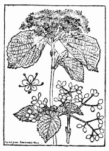
ガマズミ
このガマズミは浅山または丘岡またあるいは原野にも生じている落葉灌木で、我邦の諸州に普通に見られ、神社の
ところがその間
これまでガマズミの実が衣布の染料になると言った人もまた書いた人も一向になかったが、しかしいみじくも万葉の歌がそれが染め料になるべき事実を明かに
上のガマズミにはズミの
上の歌ではスガノミのスガに菅の字が
これまでの万葉学者は何れもこの歌の
しかるにここは決してそうではない。このスガノミはこれもやはり前の歌の様にそれはガマズミの実である。すなわちこの歌の意は衣を染めん料にとしてそれを我が妻に与えんがため山へガマズミの実を採りに行き、そのものを捜しつつ山中をそちこちと
ここに妹というのは何にも麦門冬の実をお手玉にして遊ぶほどの幼女ではあるまい。人の妻にでもなろうという程な年輩の女には最早こんな幼稚極まる遊びには全く興味はない。ゆえにこれを万葉学者がお定まりの様にいっている麦門冬なるヤマスゲ、すなわち今名リュウノヒゲとするのは全く誤りである。しかしこれを手玉にするのではなくその藍色の実を染料にする目的と仮定しても、それは前にも述べた様に全然不可能な事に属する。すなわち強てこれを紙に摺り付くれば、単にその
これに反して
以上述べた理由よりして私は右二つの歌の菅の実、すなわちスガノミは、これは全くガマズミの実を指すものだと断言する。すなわちこの事実は
元来『万葉集』には恐らく麦門冬のヤマスゲ（山菅）は関係の無い植物であって、集中の歌に山菅（ヤマスゲ）とあるのは多くは本当のスゲ属すなわち Carex のあるものを指しているのではないかと思う。ヤブランに至っては全然万葉歌の何れにも無関係で、この品は断然同集より追い斥けらるべきものである。
『万葉集』の三の巻に
という歌がある。万葉学者はこの歌の菅を山菅としそれが麦門冬であるとしていれど、それは誠に不徹底な想像説たる事を免れ得ない。何とならば元来麦門冬は決して奥山には生えていないからである。ゆえに古名ヤマスゲのリュウノヒゲでも、またあるいはヤブランでもこれを奥山で得ることは全く出来ない。右の二つの植物は里近かの極低い岡かその
また『万葉集』の十一の巻に
という歌があるが、この中にある
また『万葉集』四の巻の
の歌に在る山菅も、万葉学者は麦門冬の事と為していれどもこれも Carex のスゲでよいと思う。スゲは植物学的には無論実が生るけれど、緑色で不顕著で普通の人々には山吹の実と同じように気が付かずスゲには実が無い位に思っているものであるから、スゲは実が無いからと解釈すればその辺すこぶる簡単明瞭である。麦門冬は実の数は
また同書二十の巻に
という歌があるが、この歌の菅の根も Carex のスゲの根すなわち地下茎である。もしこれを例の麦門冬としたら全く実地とは合致しない。何とならば麦門冬は決して高い山には生えていないからである。しかしスゲ類なれば高い山の巌上でも、また巌かげでも何処にでもある。また同巻に在る
さくはなはうつろふときありあしびきのやますがのねしながくはありけり
の歌の中のヤマスゲ（山菅）も Carex の中の何かのスゲである。スゲなれば随分長い根（地下茎を指す）を引いているものが多い。『万葉集
以上述べ来った事については多分万葉学者からは貴様の様な門外漢が無謀にも我が万葉壇へ
『万葉集』巻七に左の歌がある。
また、同じ巻十一には次の歌がある。
右二首の歌に在る山治左ならびに山萵苣すなわちヤマヂサという植物につき、まず
山チサトハ木也田舎人ツサキトイフコレ也
とある。このツサキはズサノキかあるいはチサノキかならんと思う。もしそれがズサノキであればこれはエゴノキ科のチサノキ（すなわちエゴノキ）を指し、もしそれがチサノキなれば同じくエゴノキのチサノキかあるいはムラサキ科のチサノキかを指しているならん。しかしクスノキ科のアブラチャンにもズサならびにヂシャの名があるから考え様によってはこの植物ではなかろうかとも想像の出来ん事はない。
山チサは今もちさのきと云物なり。和名集〔牧野いう、集は抄〕云、本草云、売子木（和名賀波知佐乃木）此も此木の事にや
と解し、また
山萵苣は木なるを此処に置は萵苣の名に依てか、例せば和名集〔牧野いう、集は抄〕に蕣を蓮類に入れたるが如し
とも述べている。
山ちさといふは木にて其葉彼ちさに似たれば山ちさといふならむ、此木花は梨の如 くて秋咲りとぞ豊後の人の言へる是なり、又和名抄本草云、売子木（賀波知佐乃木）字鏡 売子木（河知左）と有りこれも相似たるものなるべし
と解釈している。
『万葉集目安補正』には
山治左 売子 木といへど花の色違へり斉
と云物当れりといへり
と記してある。この時代では斉
をチサノキすなわちエゴノキであると信じていたからこの書の斉はエゴノキを指したものである。また売子木を『倭名類聚鈔』すなわち所謂『和名抄』に和名賀波知佐乃木（カワヂサノキ）とあるので、これを山ヂサではないかと契沖も千蔭も書いていれど、これは無論同物ではない。上に引ける『万葉集目安補正』では売子木は山ヂサとは花色が違っていると書いて山ヂサは売子木ではないとしているのは正しいのである。元来売子木とはアカネ科に属するサンダンカ（学名 Ixora chinensis Lam.）の事で一名山丹とも称し、サンダンカはこの山丹に基きそれに花を加えてそう呼んだものである。赤色の美花を攅簇して開く（故に紅繍毬あるいは珊瑚毬の名もある）熱国の常緑灌木で我が内地には
次に
と記しまた、なお
山萵苣は契沖、常に〔牧野いう、ここも「今も」でなければならない〕ちさのきといひならへるもの是なりといへり
とも記している。そして前記の「品物解」すなわち『万葉集品物解』には山治左と山萵苣とを
未ダ詳 ならず仙覚抄ニ云山ちさとは木也田舎人は、つさの木といふこれなりといへり、いかゞあらむ、但し此は松 に山松 、桜 に山桜 などいふ如く山に生たるつねの知左〔牧野いう、知左の解に拠ればムラサキ科のチサノキを指している。しかし品物図のチサの図は曖昧至極である〕を云か又一種かく云があるか云々
と述べていて、雅澄の山ヂサに対する知識の程度は「未だ詳ならず」であった。
サテ上に列記した万葉諸学者の文句で観ると、大体万葉歌の山ヂサはチサノキという樹木の名であると解している。しかしチサノキすなわちチシャノキには三種あって、単にチサノキでは実はその中の
右のチサノキの三種というのは、一はエゴノキ科のチサノキ（一名チシャノキ、ズサ、ヂサ、コヤスノキ、ロクロギ、チョウメン、サボン、学名は Styrax japonica Sieb. et Zucc.）であり、二はムラサキ科のチザノキ（チシャノキ、トウビワ、カキノキダマシ、学名は Ehretia thyrsiflor Nakai）であり、三はクスノキ科のヂシャ（一名ズサ、アブラチャン、コヤスノキ、フキダマノキ、ムラダチ、学名は Lindera praecox Blume）である。つまり万葉歌の山ヂサをしてこの三樹木の何れかに帰着せしめ様とせんとて、昔から現代に至る万葉学者をヤキモキさせているのである。
私の考えでは、もしも仮りに万葉歌の山ヂサを上の三種の何れかに当てはめて見るとしたならば、それはエゴノキ科のチサノキすなわちエゴノキであらねばならないであろう。何んとならばこの樹は諸州に最も普通に見られ、かつその花は白色で無数に枝から葉下に下垂して咲きその姿は
古往今来万葉学者が唱うる様に、万葉歌の山ヂサをあるいはエゴノキ科のチサノキ（すなわちエゴノキ）、あるいはムラサキ科のチサノキとして観た時、またあるいは
樹のチサノキ（今名）、すなわちエゴノキ上に掲げた第一の歌には「山ぢさの花にか君が移ろひぬらむ」とある。今これをエゴノキ科のチサノキ（エゴノキ）あるいはムラサキ科のチサノキの花だとすると、元来これらの樹の花は純白色であるので、「移ろひぬらむ」が一向に利かない。もしこれらの花色が紫か藍でもであったら、それは移ろう色、すなわち変り易い色、
それから上の第二の歌には「白露重み」とある。それはチサノキすなわちエゴノキの下垂している花に露が宿れば無論重たげになるのは必定ではあれど、
上の二つの歌の山ヂサがエゴノキ科のチサノキ、またはムラサキ科のチサノキその品であるという旧来の説、それが今日でも万葉学者に信ぜられているその説を否定するとせば、しからばその歌の山ヂサとは果して
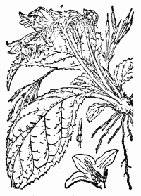
イワヂシャ 一名イワタバコ
この植物は山地の湿った岩壁、あるいは渓流の傍の岩側面、あるいは林下の湿った岩の側面等に生じているもので、国によりこれを岩ヂシャもしくは
そこでこの植物、すなわちイワヂシャ一名タキヂシャのイワタバコなる草を捉え来って上の二つの万葉歌と比べて見る。
第一の歌の中の「山ぢさの花にか君が移ろひぬらむ」は、右のイワヂシャなれば何の問題もなくよくその歌の詞と合致するのを見るのである。このイワヂシャの花はその色が紫でいわゆる移ろう色であるから、君の心の変る事を言い現わすには
次に第二の歌の「白露重み」もこのイワヂシャなれば最もよい。イワヂシャは通常蔭になって湿っている岩壁に着生しその葉（大なるものは長さ一尺に余り幅も五、六寸に達する）は皆下に垂れて重たげに見え、質厚く極めて柔軟で
このイワヂシャすなわちイワタバコは、あえて普通の草であるとは言わんが、しかし決して稀品ではなく、往々山地ではこれに
右の様な訳なのであるから、私は上の万葉歌の山治左（ヤマヂサ）もまた山萵苣（ヤマヂサ）も共にいわゆるイワタバコのイワヂシャその物である事を確信するのであるが、これは従来万葉歌人のなお未だ説破しない所であった。
しかるに私は今この稿を草する際、かの
やまぢさ 万葉巻十一に、「山萵菜のしら露重く浦経る心を深くわが恋やまず」巻七に、山治佐の花にか君がうつろひぬらん、巻十八に、よの人のたつることだて知左の花、六帖に「我が如く人めまれらにおもふらし白雲ふかき山ぢさの花」或はいふ今山野の俗にチシヤノキといふものこれ成るべし、槃按 に、集中に木によみたるはしるしなし、ましてチサノキの花は色白きものなればうつろひぬといへる詞によしなし、萵苣の字を借用ひたれば蓋 しは草なるべし、さて武蔵国相模国山中にイハチサ一名イハナとて葉はげにも菜蔬のチサの葉に似て石転 の苔むしたる所におふものあり、その葉は春のすゑにもえいで夏のきて一二茎をぬき桔梗の花に似たる小なるが七ふさ八ふさつどひて咲く也その色はむらさきなり、箱根山かまくら山などにいとおほし、このヤマヂサは応 にこれにやあらんか、順抄に本草を引て売子木を賀波治佐乃木と注したり、これ山萵苣にむかへたる名なるべし
右の書物は今から百二十一年前の文政四年〔一八二一〕に出来たものであるから、この時代に既に曾槃は『万葉集』のヤマヂサはあるいはイワヂサ（すなわちイワタバコ）ではなかろうかと思っていたのであった。しかし私は全くこれを知らなかったが、今これを知って見ると曾槃は百年以上も昔に既に
前文中にエゴノキについて述べた事はあるが、なおこの樹に関してのイキサツを次に少々書いて読者の一条に供して見よう。
エゴノキには既に上に書いた通り種々な一名があるが、その中にチシャノキというのがある。しかしそれにヤマヂサという名はない。これは山に生えているチサノキだと言えば通ぜんでもないが、チサノキは何も山ばかりに生えているのではなく随分と平地にもあるから、
従来我邦の学者は、このエゴノキを支那の斉
果に充てて疑わない。小野蘭山の『本草綱目啓蒙』を始めとして皆そう書いているが、これはトンデモナイ間違いで、斉果は決してエゴノキではない。しからばそれは何んの樹であるかというと、これはかのオリーブ（Olive 即ち Olea europaea L.）の事である。この斉
果はすなわち斉樹の事で、それが始めて唐の斉樹ハ波斯及ビ払林国〔牧野いう、小亜細亜のシリア〕ニ生ズ、高サ二三丈、皮ハ青白、花ハ柚ニ似テ極メテ芳香、子ハ楊桃ニ似テ五六月ニ熟シ、西域ノ人圧シテ油ト為シ以テ餅果ヲ煎ズルコト中国ノ巨勝〔牧野いう、胡麻の事〕ヲ用ウルガ如キナリ〔漢文〕
樹ハ波斯及ビ払林国〔牧野いう、小亜細亜のシリア〕ニ生ズ、高サ二三丈、皮ハ青白、花ハ柚ニ似テ極メテ芳香、子ハ楊桃ニ似テ五六月ニ熟シ、西域ノ人圧シテ油ト為シ以テ餅果ヲ煎ズルコト中国ノ巨勝〔牧野いう、胡麻の事〕ヲ用ウルガ如キナリ〔漢文〕と記してある。しかしこの書の記事は遠い他国の樹を伝聞して書いたものであるから、文中にはマズイ点がないでもない。
日本の学者がまずこれを取り上げてその斉
樹をそれならオリーブをどうして斉
樹というかと言うと、この斉樹は元来が音訳字であって、それは樹はオリーブの音訳漢名なのである。そしてこの事実は我邦では比較的近代に明瞭になったもので、徳川時代ならびに明治時代の学者にはそれは夢想だも出来なかったものである。芝居の千代萩の千松の唄った歌の中にチサノキがあるが、これはエゴノキ科のチサノキであろう。ムラサキ科のチサノキは関東地には無いから無論この品に
アズサ 一名ミズメ 一名ヨグソミネバリ
アズサは我が日本の特産で支那にはない。ゆえに
アズサの称呼はすこぶる旧いが、しかしそれはまだ今日でも死語とは成っていない。そして地方の方言としてある山中に遺っているのである。この方言を
昔アズサを弓に製して信州などの山国からこれを朝廷に
葉は枝に互生し長橢状卵形で短柄を
従来小野蘭山を始めとして日本の諸学者は梓をアカメガシワ（タカトウダイ科の落葉樹でまたゴサイバの名がある。またカワラガシワともいう）であると唱え更にこのアカメガシワをアズサだと為しまた学者によってはキササゲをアズサと為しているのはその妄断実に笑うべしであるが、更に驚くのはかの有名な『大言海』にアズサをキササゲあるいはアカメガシワと為して依然として旧説を掲げ、既に
カヤすなわちススキの漢名は芒である。俗にカヤに萱の字を用うるのは
薄の字をススキの名とするのは最も非であるが、世人一般これを悟らずまた書物にもそれがススキの名であるように書いてあるのは不純至極である。薄は元来形容詞でセマルと訓みススキが
カヤすなわちススキは支那と日本との原産宿根草である。禾本科の立派な立てもので秋をシンボライズして居り、これなくば秋の景色は平凡化するといっても
ススキには種々の変り品がある。葉の極めて狭いものにイトススキがあり、斑のあるものにシマススキ、タカノハススキがある。歌に在る
根は太い鬚状で黄赤色を呈しこれから染料を採りいわゆる茜染をする。茜で染めたものは黄赤色で丁度
普通に茜染めのあった時代に
アカネの根から前述の様に染料が採れ、その色が赤いから「あかねさす」と言う枕言葉も生じた訳で、それは赤い事を意味する。
茜草はアカネの草の漢名で字音はセンソウであってセイソウではない。支那の旧い書物の『
和名のアカネは赤根の意味で前に言った様にその根が赤いからである。支那ではこれを茜根と書いている。アカネは国によりアカネカズラともベニカズラとも呼ばるる。

この草の根が紫根でいわゆる紫根染めの原料である。その根は地中に直下する痩せた牛蒡根で単一あるいは分岐し生時はその根皮が暗紅紫色を呈している。昔は江戸紫などと称え一般に紫はこの紫根で染めたものだが、今日では美麗な新染料に圧倒せられてこのユカリの色の紫を紫根で染める事は実に稀れになってしまった。それでも染める紺屋が
「紫の一もとゆゑに武蔵野の草はみながらあはれとぞ見る」とあって、このムラサキは武蔵野の景物の大立物ではあるが、星移り物換った今日では武蔵野には滅多にこれが見付からない。絶対に無いではないが、昔のようにそこここに見付からない。
アサは漢名は大麻と称する。上古より旧く我邦に作られている重要植物の一でクワ科に属する一年草である。春時畑に下種して作る。茎は高く成長し鈍四稜で緑色を呈し梢に分枝する。葉は葉柄があって茎に対生すれども梢に在っては互生する。掌状全裂葉で五ないし十一裂片
秋に成ればアサを刈り皮を剥ぎその繊維を採る。これすなわちソあるいはオである。その皮を剥ぎ去った白い裸の茎をアサガラあるいはオガラといい、朝鮮ではこれを麻骨と称すと書物に在る。
マツ科の常緑喬木で巨幹を有し高聳する。我邦中部以西の山中に生じ小枝
ツガの姉妹品にコメツガがあって同じく大木となる。葉はツガより小さく毬果は少し円い。我邦中部以北の山地に生じているが、このコメツガは
右は古名のマキであるが今名のマキと言うのは全く別の木であるからこれを混合してはならない。すなわち今日いうマキはクサマキを略したもので、これは一にイヌマキとも称する。山中に自生し葉は狭長で三、四寸の長さがある。この一種にラカンマキというものがあってよく海に近い地の人家の生籬とし、また寺院などの庭樹になっている。この品は支那にも日本の南部にも野生がある、すなわち漢名の羅漢松である。従来この羅漢松をイヌマキの漢名だとしてあったがそれは誤りで、これはラカンマキの支那名である。この樹の葉はイヌマキのそれよりは小形でもっと枝に密生している。
ヒノキは火の木の義で、この材を他の木と摩り合わすと自然に発火するのでこの名がある。日本の古代人は多分このヒノキで火を出したであろう。
伊勢の大神宮では今日でもヤマビワの木で錐の様にヒノキをもんで発火させ、これを御神火として神前へ供する儀式がある。
ヒノキは山中に生ずる常緑の喬木で、多く枝を分ち葉は小形で小枝の両側に連着し、緑色で下面に
ハリすなわちハンノキはカバノキ科の落葉樹で、山間の湿りたる地を好んで生じ処々に林を成している。東京附近ではよくこれを田の畦に植え、秋になって刈り稲を掛けるに便している。材は種々の用途がある。葉は葉柄を有して枝上に互生し、広披針形で尖り鋸歯がある。早春新葉に先だちて枝梢に雌雄花を着ける。雄花はいわゆる

 出
出ハリは人によりハギすなわち萩（この場合これは和字である。支那の萩と字面は同じけれど全く別である）であるという説がある。これも一説で
アシは漢名を蘆と書く。また葦と書いても宜しく、また葭と書いても差支えはない。この三つは何れもアシの事ではあるが、しかし支那の説では初生の芽出しが葭でそれがもっと生長した場合が蘆で、そして充分成長したものが葦であり葦は偉大の意味だと書いてある。
アシは我邦諸洲の沼沢湖地ならびに河辺の地に生じて大群を成し、いわゆるヨシハラを
アシは禾本科の一種である。その地下茎は盛んに泥土中を縦横に走り、それから茎すなわち稈が出て生長するから、そのこれある処は
その葉一方より風来れば葉々風を受けて彼方に偏向し葉鞘ねじれて葉片はそのまま依然としている。かくの如き場合がいわゆる
またアシの葉には他の禾本類の葉と同じく先の方に少しの
古歌ではアシをヒムログサ、タマエグサ、ナイハグサ、サザレグサ、ハマオギというとある。ハマオギは彼の「浪速のあしは伊勢の浜をぎ」と詠まれたものでこれは今日でもなお伊勢の
アカマツの幹は樹皮に赤味を帯びているからそういい、クロマツは幹の色に黒味があるからそういわれる。そして両方とも幹は勇健で直立分枝し下の方は著しい亀甲状の厚い樹皮で
クロマツ、アカマツ共にそれに花が咲く時は、そのいわゆるミドリの本の方に小鱗片ある長橢円形の草花が群着し、多量の花粉を吐出し風に吹かれて散漫し、あるものはミドリ頂にある雌花毬に附着するが、しかしその大部分は地面に降り落ち
ミドリの頂にある暗紅紫色の雌花が後に段々その大きさを増して緑色を呈し、次年の秋に全く熟して硬い鱗片を開き中の種子を散出せしめる。いわゆる松毬すなわちマツカサでクロマツのものはアカマツのものより少々大きい。種子には翅があって風に吹かれてその地この地に飛び散りその落ちた処に仔苗を生ずるが、その苗には緑色糸状の輪生子葉を有している。
古歌では松にイロナグサ、オキナグサ、ハツヨグサ、トキワグサ、チエダグサ、チヨギ、ソチヨグサ、スズクレグサ、タムケグサ、メサマシグサ、コトヒキグサ、ユウカゲグサ、ミヤコグサ、クモリグサ、ヒキマグサ、モモクサなど沢山な名がある。歌では木でもこれを草と呼んでいる。
ツバキは我邦到る処に見る常緑の小喬木で、山地に自生するものもあればまた庭園に
幹はかなり太くなり繁く枝を分ち密に葉を着ける。葉は葉柄を
花は小枝端に着き無柄で形ち大きく下に緑色の芽鱗と萼片とがあって花冠を擁している。花冠は一重咲のものは六、五片の花弁より成って基部は互に合体し謝する時はボタリと地に落ちる。花中に在る多雄蕊は本は相連合して筒の様に成り花冠と合体し葯は黄色の花粉を吐く。中央に一子房があって三つに
花の後にはその子房が日増しに生長して大きな円い実と成り、秋になって熟すれば、その厚い果皮が開裂して中から黒褐色の大きな種子が出ずる。この種子から搾り採ったのが椿油で伊豆の大島はその名産地の一である。
ツバキの漢名は山茶である。その葉が
前文に、梓の生木はまだ日本へ来た事がないと書いたが、その後この樹が多少は既に来ていることを知った。ゆえにその在る処を訪えばその生木が見られる。
花がつみまじりにさけるかきつばたたれしめさして衣にするらん 公実
狩人の衣するてふかきつばた花さくときになりぞしにけり 基俊
狩人の衣するてふかきつばた花さくときになりぞしにけり 基俊
カキツバタは誰れもよく知っているアヤメ科イリス（Iris）属の一種であって lris laevigata Fisch. の学名を有する。シベリア、北支那方面から我が日本に分布せる宿根草で水辺あるいは湿原に野生し、我邦では無論かく自生もあれど通常は多くこれを池畔に
この草は冬はその葉が枯れて春に旧根から萌出し夏秋に繁茂する。根茎は横臥し分枝し、葉は跨状式を成して出で剣状広線形で尖り鮮緑色を呈して平滑である。葉中に緑茎を抽いて直立し一、二葉を互生し、茎頂に二鞘苞ありて苞中に三花を有し毎日一花ずつ開く。花は美麗な紫色で外側の大きな三片は萼でそれが花弁状を呈し、その間に上に立っている狭い三片が真正の花弁である。萼片の柄の内側に一の雄蕊があるからつまり雄蕊は一花に三つある訳だ。そしてその葯は白色で外方に向って開裂し花粉を吐くのである。中央に一花柱があって三つに分れ、その枝は萼片の上に倚り添うて葯を覆いその末端に二裂片があってその外方基部の処に柱頭がある。この花は虫媒花であるから昆虫によって媒助せられ雄花の花粉を虫が柱頭へ着けてくれる。そして子房は花の下に在っていわゆる下位子房を成し、花後に果実と成り遂にそれが開裂して種子を放出し、枯れた実は依然として立っている。カキツバタは紫花品が普通であるが、またシロカキツバタという白花品もあれば、またワシノオと呼ぶ白地へ紫の
今カキツバタの語原を討尋して見ると、これはその根元は「書き付け花」から来たものだといわれる。すなわちそれは国学者
かきつばた
波太波奈 の通ふ言につきて因に言かきつばたといふ花の名は燕の翅 る形チに似たれば翅 燕花 といふ言ぞと荷田大人のいはれしよし師の冠辞考に見えたるをめでたき考とおもひをりしに按 ば是は燕子花とある漢字よりおもひよせられしものなり熟 考るに万葉七に墨吉之 浅沢 小野乃 加吉都播多 衣爾 須里着将 衣日 不知毛 又同巻にかきつばた衣 に摺つけますらをの服曾比猟 する月は来にけりとありて上古は今のごとく染汁 を製 りて衣服を染ることはなくて榛 の実或はすみれかきつばたなどの色よき物を衣 に摺り着 てあやをなせるなり其摺着 をまたかきつくともいひて是も巻七に真鳥住 卯手 の神社 の菅 の実 を衣 に書付 令服児 欲得 とあればかきつばたは書付花 也（はなとはたと通ふは上にいふがごとし）着 をつとのみいふも古語也つきつくつけなどいふきもくもけも用言に添る言にて元来つの一言 ぞ着 の意なりける船のつく所を津 といふにて知るべし（以下省略する）
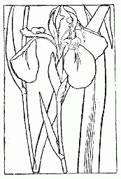
燕子花と誤認せられたカキツバタ
右にてカキツバタの語原はよく解るであろう。
昭和八年六月四日に、私は広島文理科大学植物学教室の職員達と一緒に同校の学生を引き連れて植物実地指導のため安芸の国山県郡
 徊しつついる内に
徊しつついる内に
衣に摺りし昔の里かかきつばた
ハンケチに摺つて見せけりかきつばた
白シヤツに摺り付けて見るかきつばた
この里に業平来れば此処も歌
見劣りのしぬる光琳屏風かな
見るほどに何んとなつかしかきつばた
去ぬは憂し散るを見果てむかきつばた
ハンケチに摺つて見せけりかきつばた
白シヤツに摺り付けて見るかきつばた
この里に業平来れば此処も歌
見劣りのしぬる光琳屏風かな
見るほどに何んとなつかしかきつばた
去ぬは憂し散るを見果てむかきつばた
何んと
今から千余年も遠い昔に出来た深江輔仁の『本草和名』には加岐都波太、すなわちカキツバタを蠡実、一名劇草、一名馬藺子等と書き、次で千年余りも前に出来た源順の『倭名類聚鈔』にもまた、加木豆波太、すなわちカキツバタを劇草、一名馬藺と記し、次でまた九百余年前に撰ばれた『本草類編』にも加岐都波奈を蠡実と書いてあるのは何れも皆その漢名の適用を誤っていて、これらは
カキツバタを加木豆波太、加岐豆波太、加岐都波太、加吉都幡多、華己紫抜他、もしくは加岐都波奈と書くのは単にその和名を漢字で書いたもので、すなわちいわゆる万葉仮名である。また更に同じく漢字を以て書いたものに垣津幡、垣津旗、垣幡がある。またカキツバタの別名としてカイツバタ、
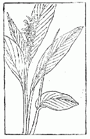
杜若（支那産）
支那の植物に
全体我邦で昔誰れが杜若をカキツバタだといい初めたかというと、今から九百余年前に
この杜若なる漢名の用いが中々長い年の間続いたが、今から二百三十四年前の宝永六年〔一七〇九〕に至て貝原益軒はその著『大和本草』でカキツバタが杜若であるという昔からの古説を否定し、併せてその杜若は筑前方言のヤブミョウガ（ツユクサ科のヤブミョウガでは無い）すなわちハナミョウガ（ショウガ科）であると
次で

杜若と誤認せられたハナミョウガ
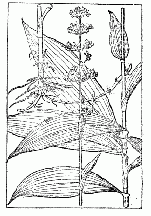
杜若と誤認せられたヤブミョウガ
しかるにその後、岩崎
これによってこれを観れば杜若をショウガ科のハナミョウガに
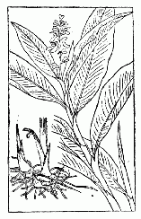
杜若であるアオノクマタケラン
サテ、杜若をカキツバタでは無いと一蹴した我邦の諸学者、それは稲生若水、小野蘭山等を始めとして今日誰れでも皆燕子花をカキツバタだと称え納まり込んで涼しい顔をしているが、私はこれらの人達の何の苦も無い様なオ顔を拝見すると思わずハハハハハハと笑いたくなる。そしてその誤りを
カキツバタでは決して無いぞと
紫花ニシテ全ク燕子ニ類シ藤ニ生ズ一枝ニ数葩（漢文）
ですこぶる簡単至極なものである。が、しかしその性状は誠によく言い尽している。そしてこの燕子花には紫燕ならびに煙蘭という別名がある。
今ここに上の『渓蛮叢笑』の文とカキツバタの形状とを対照して観ると、その間に
カキツバタの花はその花形決して燕には類してはいない。しかしこれを燕子花だと信じている学者の中には成るべくその花を燕に連絡さす様に工夫し「花は夏の頃さきて、そのはなびらの、ながくなびきて、しなやかなること、燕の尾に似たり」と書いたものなどがある。元来燕の姿は前方に一つの頭がありその体躯の左右には翅翼があり後方には両岐せる一つの尾があって、いわゆる左右相称の偏形を呈しているから、それが斉整均等なる輻射相称の形を呈せるカキツバタの花容とは一向に合致しない。次に「藤ニ生ズ」とあるが、これは痩せて長いヒョロヒョロした茎、すなわち
上の様に燕子花を捕え、それが断じてカキツバタその物ではないと宣告し去ると、しからばその燕子花とはいかなる正体の草であるかの問題に逢着する。すなわちこれはすこぶる興味津々たる裁判であるといえる。
私は我が独自の見解に基づきこの燕子花、それはかの『渓蛮叢笑』の燕子花を以て、キツネノボタン科に属する
上の
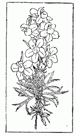
燕子花（渓蛮叢笑） オオヒエンソウ
右の様に従来我邦で用いられている漢名にはその適用を誤っているものがすこぶる多い。彼のケヤキに欅の字を用い、アジサイに紫陽花を用い、ジャガイモに馬鈴薯を用い、フキに款冬あるいは蕗を用い、ワサビに山葵菜を用い、カシに橿を用い、ヒサカキに
 を用い、ショウブに菖蒲を用い、オリーブに橄欖を用い、レンギョウに連翹を用い、スギに杉を用うるなどその誤用の文字実に枚挙するに
を用い、ショウブに菖蒲を用い、オリーブに橄欖を用い、レンギョウに連翹を用い、スギに杉を用うるなどその誤用の文字実に枚挙するに我が日本では昔からブドウを作っていた。これはもと外国（多分支那）から来たもので元来我が邦にあったのではない。彼の甲州ブドウが伝説にあるように、神社の路傍で偶然その野生品を見付けたと書いてあっても、これは
今日では外国から種々の品種が取寄せられているので、世間で変った品が多く見られる事は昔日の比ではない。従ってその葉の状態や実の形状もいろいろある。
支那でも葡萄は同国に産したのではなく昔は無かった。漢の時代に
しからばブドウの原産地は何処であるかと
和名のブドウは葡萄の字音から来たものであるが、しかし支那では葡萄の古名は蒲桃であった（熱国に蒲桃すなわちフトモモという常緑樹があるが、無論それではない）。支那の学者は葡萄について次のように言っている。すなわち「葡萄に蒲桃と書いてある。これで酒が造られる。人がこれを※［＃「酉＋甫」、U+917A、72-6］飲すると陶然として酔うのでそれでこの名がある。その実の円い者を草竜珠といい、長い者を馬乳葡萄といい、白い者を水晶葡萄といい、黒い者を紫葡萄という」とこれである。
右のように支那人は葡萄すなわち蒲桃を酔心地よく酒に酔う意味だと言っている。しかしそれは果して真か。否々、全くそうではない。
元来葡萄でも蒲桃でもその字面には何んの意味も持っていない。何とならばこれは疑いもなく音訳字で、それは丁度イギリスを英吉利と書くようなもので単にその発音を表わした字に過ぎないのである。すなわち葡萄、蒲桃と共にかの張騫が始めてその種子を得た大宛、すなわち、
支那でも昔は干葡萄を造ったと見えてそれに葡萄乾の名がある。そしてそれを四方に
日本でも徳川時代に既にブドウの品種に幾つかの変り品があった。すなわち実が淡緑色に熟するものも見られた。また白色に熟するものもあってこれをシロブドウと呼んだ。また長い実のものもあってこれをナガブドウとも江戸ブドウとも称した。また紫色に熟するものをクロブドウといった。
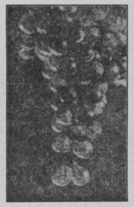
ブドウは草か木かと言ったら木の内へ這入る。それは丁度フジと同じようなものである。つまり灌木の蔓をなしたもので、かくの
ブドウの蔓には巻鬚があって葉と反対の側に出ている。つまり葉と対生しているのである。この巻鬚は強く他物に絡み付き茎をして
右のように葉に対して出ている花穂はその中軸から小枝を分ち、この小枝は
花には花弁が五枚あって花が開く時、その五枚は特にその頂点で互に合着しその本の方が
花がすむとその受胎した子房が日を逐て次第に大きくなり果穂が下がり秋になるとその実が成熟する。ブドウの実は誰れでも知っているように甘い液汁を含んだ漿果で味が
葡萄酒すなわちワインがブドウの果汁で造られる事は誰れでも知っている。学名なる Vitis vinifera L. の種名ヴィニフェラは葡萄酒を持っている、すなわち葡萄酒が醸し得らるるという意味の語である。支那の初唐時代での有名な詩の「葡萄ノ美酒夜光ノ杯、飲マント欲シテ琵琶馬上ニ催ス、酔テ沙場ニ臥ス君笑フコト
我邦で昔葡萄をエビといった。またエビカズラともオオエビともいった。このエビの語は
普通のサクラに先駆け春の彼岸頃に逸早く花の咲くサクラに、彼岸ザクラと呼ばるるもののある事は誰れでもよく知っていて、その花を持て囃すのである。世間一般普通の人々にはそれでよいので、その間に
ところがこの彼岸ザクラが一朝学者仲間での問題となると、普通の素人が考えているようにそう簡単には片付かないので、その間やや混雑の状を呈して来るのである。
学者仲間、殊に植物学者仲間に於ては従来彼岸ザクラの名があえて正しく呼ばれていないのである。それには一つの原因があって、
私自身は元来が関西方面育ち（生れは土佐）であるより少年時代から彼岸ザクラについてはよくその正品を知っていた。それゆえ関東学者と私とは彼岸ザクラに対しては根本的にその考えが違っている。しかればそれがどのように違っているかと言うと私の見解は次の通りである。
○ヒガンザクラ（一名コザクラ）
Prunus subhirtella Miq.
○ウバヒガン（一名ウバザクラ、タチヒガン、アズマヒガン、エドヒガン）
Prunus Itosakura Sieb. var. ascendens Makino.
東京にてはこれをヒガンザクラと云う。西洋の学者はこの種に P. subhirtella Miq. の学名を誤用している。
東京にてはこれをヒガンザクラと云う。西洋の学者はこの種に P. subhirtella Miq. の学名を誤用している。
○シダレザクラ（一名イトザクラ）
Prunus Itosakura Sieb. ＝ P.pendula Maxim.
右に挙げた三主品がすなわち彼岸ザクラの一グループをなしているが、これに附属する園芸的変種を
真正の彼岸ザクラすなわち Prunus subhirtella Miq. は
上の彼岸ザクラの正品に対して一体東京方面の学者の認識の
この正品なる彼岸ザクラの名は早くも貝原益軒の『大和本草』に出で、その巻の十二に次の通り述べてある。すなわち今これを観ると、その行文はすこぶる簡単なれどもこの短文中に真によくその品たる事を躍出せしめている。すなわちその文句は
彼岸桜 其花桜花ヨリ小ニシテ桜ニ先立テ早ク開クコト旬余日花開ク時葉未レ生桜ヨリ小樹ナリ花モ小也桜ノ類也
である。すなわち京都辺で親しくこのサクラを眺めてその状態を
同書、上の文に次で
ウバ桜モ彼岸桜ノ類ナリ彼岸桜ノ次ニ開ク是モ花開ク時葉ナキ故ウバ桜ト名ヅク
と書いたものがある。このウバ桜は
私が始めこのサクラを研究したズット前の時分にはこの婆ザクラの名も、また婆彼岸の名も共に私の注意を惹かなく全くオヴハールックしていた。そしてまた何等別の名も見附からなかったのでそこで始めて立チ彼岸の新称を与え、後ち更にそれを
このウバ彼岸は元来は九州、四国ならびに中国方面の山林中に自生して樹林の一をなし直幹
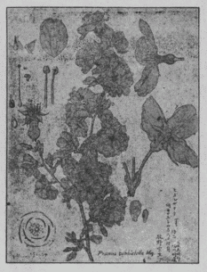
ヒガンザクラ（縮図）
ウバ彼岸から園芸的に変って出来たものにシダレザクラ、一名イトザクラがある。それゆえこのシダレザクラの親は正にウバ彼岸である。しかし学名の上では Prunus Itosakura Sieb. var. ascendens Makino. のようにシダレザクラが母種でウバ彼岸がその変種のようになってはいれど、実際ではその反対で、ウバ彼岸が母種でシダレザクラがその変種なのである。一体学名では早く名づけた種名が主座を占めるので、そこでこんな奇現相を呈し決してその自然の関係を表わしていない事になる。
今試にシダレザクラの種子を播いて見ると、ここに二通りの苗が萌出して来る。すなわちその一は元とのままのシダレザクラが生え、その一は直立するウバ彼岸が生える。甲は親と同じであるが乙は祖先に還ったのである。これによってこれを観ればウバ彼岸とシダレザクラとは全く兄弟のように縁の近いものである。
徳川時代の学者はシダレザクラすなわちイトザクラを垂糸海棠（漢名）だといって済ましていたが、しかしこれは無論間違いであった。しかればこの垂糸海棠は何んであるかというとそれは今日世間で呼んでいるカイドウである。
京都帝国大学植物学教室の小泉源一博士がヒガンザクラの事を既刊の『植物分類地理』に書いている所を見ると、私がヒガンザクラについて大変にその名を混乱させ「この変名は実に
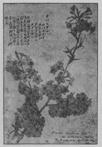
ウバヒガン（縮図）
Prunus Itosakura Sieb. var. ascendens Makino. を私がアズマヒガン、またはエドヒガンと称せしイキサツについては前文に書いてあるから、よくそれを玩読すれば特にこれをそうした事情が充分に呑み込めるであろう。そしてこれをそう名づけた精神は決して単にその種の地理分布を土台と為した皮相なものではなく、モット深遠な意味を含んでいるが、しかしその微妙な点が小泉氏にはヨー合点が行かぬのである。すなわち実はその一面には同氏等のような少くもヒガンザクラについては半可通な学者をして醒覚せしめんとの下心の
諸君は、諸処の池に於て「蓮」を見ましょう。その清浄にして特異なる傘状の大きな葉とその紅色もしくは白色の顕著なる花とは、一度これを見た人の決して忘るる事の出来ぬ程立派なものであります。またその蓮根と呼ぶものを諸君は食事の時に時々食するでしょう。その孔の通った畸異なる形状は、これまた諸子の常に記憶する所のものでありましょう。
通常蓮根と呼んで食用に供する部分は、世人はこれを根だと思って居りますが、これは決して根ではありません。それなればこれは何んであるかと言えば、これは元来ハスの茎の先きの方の肥大した一部分であります。この茎はすなわちハスの本幹と枝とであって
この蓮根の食用に供する部は、諸君が知る如く肥厚して居るが、しかしハスの地下茎はその全部本の方も末の方も皆かくの如く肥大であるかと言うと決して左様ではありません。すなわちその大部分は細長くて通常泥の中を走って居り、諸処に節ありてこの節から枝を分ち、また葉もしくは花を出すのです。この細長で太い紐の如き部分をハイネ（這い根の意）すなわち
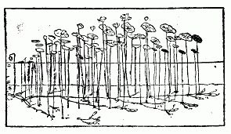
第一図 （イ）ゼニバ （ロ）ミズバ （ハ）蓮根 （ニ）水面 （ホ）泥、斜線ある葉はトメバ
通常蓮根と称する部を併せての全体はこのようなものでありますが、それなればその真の根は何処にあるかと言えば、真の根は繊維の形すなわち鬚の状をなして、その根茎の節より多数に生じて居る。かくの如き繊維状、すなわち鬚状をなした根は学問上でこれを繊維根、一名鬚根と称えます。
蓮根を切れば多少白汁が出ます。そしてそれに大小幾条かの孔が通って居る。この孔は細胞の間の空隙で自ら気道を作って居って、その大小数条の気道の排列には自ら一定の規定があります。すなわち第二図（上）に示すが如くその蓮根の上になって居る処と、その下になって居る処とはその孔の排列が違うから、その孔の状を見れば、
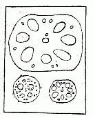
第二図 （上）蓮根の切口 （中）ハイネの切口 （下）葉柄の切口
蓮根を採るには白花のハスの方が宜しい。観賞用としては多くは紅花の品を植えています。蓮根が出来て
支那バスは、蓮根の節間が短くて肥大して居る。東京の市場で普通に売って居って支那バスあるいはチャンバスと呼んで居り、東京附近の地に作ってこれを市内へ持ち込むのです。その蓮根の肉は煮れば柔くなり世人は余りこれを歓迎しません。花は紅白淡紅の三品があります。このハスは明治九年〔一八七六〕に支那から渡り来ったものであって、その詳細の記事が明治十二年三月博物局発行の『博物雑誌』第三号に載って居ます。
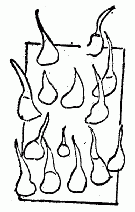
第三図 幼き小刺
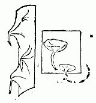
第四図 老いたる小刺
ハスの葉はいわゆる荷であって、前述の蓮根、すなわち地下茎の上に生じますが、春前年の蓮根の中央の節に出ずる葉は形が小くて水面に浮んで居ます。これをゼニバすなわち荷銭と称えます。これに次で旧蓮根の前方の節より出ずる葉は形ちがやや大きくこれも水面に浮んで居ます。これをミズバすなわち藕荷と唱えます。それから後の葉は右の旧蓮根の前端の伸長して出来た新地下茎より出ていわゆる※［＃「くさかんむり／支」、U+82B0、88-11］荷といって水面に浮ぶことなくて、皆水面上に出でて居り、その大なるものは数尺の高さに達します。一番終りの葉は少々形ちが小くてトメバと称えます。このトメバは熟視すれば
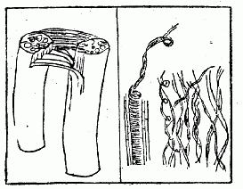
第五図 （右）蓮の糸 （左）ハイネを折りたる状
葉面はこの長き葉柄の頂に楯形に着いてその大なるものは直径凡二尺余もありましょう。そして浅き杯形をなして天に向って居ますが、しかし通常やや前方の方に向うて居る。葉形は円いがその上端をなせる葉頭とその下端なる葉底とは直ちに見分が付く様になって居ます。すなわち葉頭も葉底も葉縁がやや凹んで、かつ小尖点があります。しかしゼニバ、ミズバの方はやや凸出して居る事が普通です。その葉頭はその葉がやや側を向く時は必ずその上部をなし、かつ地下茎の後の方に向うて居ます。その葉底すなわちアゴは必ず下部をなし前方に向うて居ります。しかしてその中央より葉頭に走る脈と葉底に走る脈とがあり、その他中央より発出する葉脈は右の葉頭葉底に走る葉脈の左右に必ず同数を以て発出して居ります。それゆえその左右より巻きたる巻き葉に
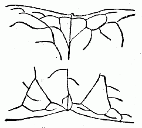
第六図 葉頭及び葉底
ハスの葉の表面へ雨などの水滴が落ちて来ても、少しもその表面は湿いませぬ。その水は
濁りある水より出てゝ水よりも浄き蓮 の露のしら玉
ハスの葉には、一種の香気があります。物ずきな人は時に飯にこの香気を移して楽しんで居ます。夜間ハスの生えている池辺を逍遥すればこの香気が
ハスの花は古人は花之君子者也とか世間花卉無踰蓮花者とか言って誉めそやして居ます。いわゆる


 蕾
蕾 と称えます。
と称えます。花はその事の頂端に一個
花は黎明の前後に開き午後には閉じるのであります。四日間かくの如く開閉して終りに開いたまま、花弁は散落します。世人はハスの花が早朝開くとき音がすると信じて居るが、そんなことは決してありません。これはその包むが如き花弁の開くときポッと音がする様に想わるる迷誤より来ったる説で、実際には決して音はしません。またある人はそれは開花に際し花弁のすれ合う音だと言うけれども全く牽強附会の説であります。花は蕚と花弁とを併有するが、蕚片と花弁とはその境界が判然しません。外部の四片は
雄蘂は多数ありて放大せる花床すなわち花托の下に多数相生じ黄色を呈し、葯の上部は棍棒状の附飾物となって居ます。
子房は、数が多く個々倒円錐形の大形花床すなわち花托（蓮房もしくは蜂
 と称する）の上平面の凹処に陥在し、卵円形で中に一個の卵子（誤称の胚珠）がある。この卵子は後に種子となる。そしてその背部に一個の小き突起がある。この子房には各一個の極めて短き花柱があって、この花柱は花托の表面に出て現われて居る。その花柱の末端に柱頭があって楯形をなして居ます。花がすんだあとこの子房は日を逐うて段々大きくなりて生長し、遂に楕円形の堅い果実をなすときその海綿質の花床（花托）も一層増大して、その状
と称する）の上平面の凹処に陥在し、卵円形で中に一個の卵子（誤称の胚珠）がある。この卵子は後に種子となる。そしてその背部に一個の小き突起がある。この子房には各一個の極めて短き花柱があって、この花柱は花托の表面に出て現われて居る。その花柱の末端に柱頭があって楯形をなして居ます。花がすんだあとこの子房は日を逐うて段々大きくなりて生長し、遂に楕円形の堅い果実をなすときその海綿質の花床（花托）も一層増大して、その状 とも称えます。この苦は学問上の語は幼芽であって、二枚の幼き葉があってその葉はその葉柄が内曲して居ます。この果実を植える時砥石あるいはの葉は増大生長して可愛らしい円形の葉面（ハスの葉は始めから全く円形で決してオニバスの初生葉の如き一方に裂け目がない）を水面に浮べ（ハスにはカワホネの様に全く水中に沈在せる葉はありません）これと同時にその茎がやや長じて鬚状の根を出し、また同時に地下茎すなわちハイネを横に出して日を逐うて延長し、その節々より鬚根を生じ、また葉を出しこの葉は水面上に抽き出ずるのであります。
とも称えます。この苦は学問上の語は幼芽であって、二枚の幼き葉があってその葉はその葉柄が内曲して居ます。この果実を植える時砥石あるいはの葉は増大生長して可愛らしい円形の葉面（ハスの葉は始めから全く円形で決してオニバスの初生葉の如き一方に裂け目がない）を水面に浮べ（ハスにはカワホネの様に全く水中に沈在せる葉はありません）これと同時にその茎がやや長じて鬚状の根を出し、また同時に地下茎すなわちハイネを横に出して日を逐うて延長し、その節々より鬚根を生じ、また葉を出しこの葉は水面上に抽き出ずるのであります。ハスの果実は、蓮房すなわち花床（花托）の上面の凹
の中にハスの種類の中に観音蓮と呼ぶものがあります。これは
すなわち花梗の頂に二ないし五花また通常の蓮花で、梗頭に二花開くものを並頭蓮といって居る。これは別に特別の種類でなく、ただハスの一時の変形である。東京上野公園の不忍池にはハスが沢山あって、年々無数の花が出るが、かくの如き変形物は稀れに見受けるに過ぎません。
ハスはまたハチスという。ハスはこのハチスの言葉の縮んだものである。しかしてハチスは元と上に記したる蓮房の形より来たものであります。蓮の字は元来はハスの花床（花托）の名であるが、今は通常その全体の名に用いられて居る。芙蓉というはハスの一名であるが、今世人が芙蓉と呼ぶものは元来は木芙蓉なので、これはゼニアオイ科中の一灌木の名であります。花が大きくかつ美麗であって、ハスの花の様だからこの植物を木芙蓉と呼んだもので、これと混雑を避ける為にハスの事を水芙蓉とも草芙蓉とも言って、この両者を区別して居ります。
ハスは日本でも古くから作って居りますが、無論
支那のハスは、前にも述べたように蓮根の節間が短くて太いが、我邦に往古から栽培せられて居るものは、諸君が知らるる如く節間が長く延びて居る。我邦のも元は支那産のものの如く切迫せる節間を有せるものであったのでありましょうが、永き年の間泥及び水などの状態のため、漸次にその原形を変じて遂に今日の如き痩長形のものとなったのではないかとも思いますが、これは正確の考えだか架空の説だか、今少しよく詮索せねば分りません。
始めこのハスはヒツジグサ属すなわち Nymphaea 属だと学者が思って居ました。それゆえその時の名は Nymphaea Nelumbo L. であったが、後ちこの属のものでないことが分って別にハス属が設けられました。それゆえ今はその名を Nelumbo nucifera Gaertn. と称し、一名を Nelumbium speciosum Will l. といいます。また Nelumbo indica Poir. ならびに Nelumbo javanica Poir. の異名があります。このネルンボすなわち Nelumbo は印度セイロン島でのハスの方言であって、
〔補〕以上叙する事実は今から三十三年前の明治四十二年〔一九〇九〕に世に公にしたもので、この様に蓮についての種々な事柄をほとんど残りなく詳 かに知っていた世人は当時まだ世間には無ったのである。そして右の文章によってそれが始めて明瞭になった点が多い。今その一例を挙ぐれば蓮の花は彼の多肉な蓮根から出て咲いているという謬想を打破してこれを是正した類である。
昭和十年〔一九三五〕四月八日発行の『東京朝日新聞』紙上に「聞くもゆかしき御紋章の由来、御晩餐会で皇帝が御説明」との見出しで、満洲国皇室の御紋章に関する記事が出ていた。それに
ところが、世間の誰れもが、この古語に在る蘭を今日いう蘭科（Orchidaceae）植物中の、いわゆる「蘭」だと早合点して、皇帝の御旅情を御慰め奉るに、寒蘭だの、一茎九華だの、素心蘭だの、金稜辺だの、駿河蘭だの、春蘭だのの Cymbidium-Orchids 類の盆栽を御清覧に供したと、これもまた、当時の新聞紙が報道していた。
これらの蘭を御覧に入れるという、我国民の真情は、誠に蘭花のように
エヘン、そんならその古語、すなわちこれは『
このフジバカマ（学名は Eupatorium stoechadosmum, Hance）は、支那にもあれば、また我が日本にもある宿根草で、つまりこの両国の土産植物である。我邦では支那と同じく往々観賞のため、庭園に植えられてある事があるが、関東地方では利根、荒川河畔なる細砂土の処には野生している。支那は揚子江、黄河の大河が平野の間を串流し、大小の支流もあって、その辺に
その結果、支那人は
実際この草には香気がある。それは生の時、その茎葉を揉めば、既に一種の香のある事が分るけれど、しかしその時は
前に述べたように、支那人はひどくこの香いを貴んだ。そこでその
下図は『本草綱目』所載の図である
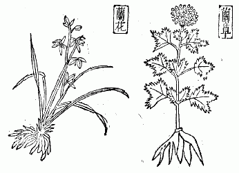
このフジバカマなる蘭が、すなわち前に言ったように『易経』に在る「其臭如蘭」というものだ。その他『
 蘭ヲ
蘭ヲ
 ヲ樹ウルコト百
ヲ樹ウルコト百 ヲ秉ル」（はすなわち蘭である）とあり、『
ヲ秉ル」（はすなわち蘭である）とあり、『世が
このようにこの Orchids の方の蘭は後世のものであるから、昔からの蘭（フジバカマ）を、この者と思うのは極めて非である。しかし、今日世人は大抵これを悟らず、皆涼しい顔を並べている。
今、上に叙した所を以てこれを観れば、蘭の問題はすこぶる簡単で、かつ、判然たるものであろう。そこで Orchids の方の蘭、すなわち蘭花は春蘭で、秋蘭（『楚辞』の秋蘭は別である）の二つを併称したものであって、今日愛蘭家が言っているように、春蘭が蘭で、秋蘭が
であるという事は決して正しい区別ではないのである。しかしこれは「一幹一花ヲ蘭トイヒ一幹数花ヲ薫トイフ」（薫はと同物）と書いている今日世人がよく、蘭
と熟し呼んで蘭に用いているの字は、本は決して Orchids 植物の名ではなく、これは、唇形科に属する Ocimum sanctum, L.（和名カミメボウキ）すなわち薫草、または零陵香という者の一名である。この者は、佳香のある草であるから、それで Orchids 植物の方へその名を借用に及んだものたるに過ぎない。このカミメボウキも、昔早く支那で栽培していたものと見え、既にそれが『楚辞』に載っている。以上述べた所で観れば、満洲皇室の御紋章は、少しも Orchids の蘭、すなわち蘭花と関係が無いというその事実が判ったであろう。
禾本科植物中特異の状貌を呈して殊に喬木あるいは灌木を成す者、これを竹の一群となす。他の禾本類多くは草状を成すに反して独り前述の状態を呈するは竹類の特性というべきなり。かくの如き竹類相集りて禾本科中に一科を構成し、これを竹小科という。その品種極めて多くして、
 リッピン」島にもあり、安南にもあり、「ニューカレドニア」島にもあり、「マダガスカル」島にもあり、また北
リッピン」島にもあり、安南にもあり、「ニューカレドニア」島にもあり、「マダガスカル」島にもあり、また北かくの如く地球上幾多の竹類は上述の如く、これを二十二属に
今本邦所産の竹を基となしてその状の梗概を記せんに、竹は多年生の喬木あるいは灌木なり。漢人は「似レ木非レ木似レ草非レ草」と言いまた苞木と称す。根茎すなわちいわゆる鞭は横走してあるいは長くあるいは短く通体節ありて節上に根を輪生す。稈はすなわち竹竿にしてあるいは根茎の節より生ずるあり（例、ハチク、マダケ等）、あるいは根茎の末端直ちにこれを成すあり（例、ネマガリダケ、ホウオウチク等）、以て高く気中に挺出す。その
渋す。種類によりて大小一様ならず。小なる者は一寸に出入し大なるものは一尺に超ゆ。裏面あるいは毛あり、あるいはこれなし。一の中脈その中央に縦貫し、数条の支脈その両側に平行し、その支脈の間通常細脈横にこれを繋ぎ、以て細微なる方眼状を呈す。葉は下に鞘ありて、その形狭長かつ小枝を包めり。鞘の頂に一鱗片を具う。これを小舌という。小舌の両方に当て往々始め剛毛を具うと竹も植物の一なれば遂に花を出さざるの理なし。竹に花の出ること熱帯地方に在りては普通の事に属すと雖ども、それこれより高緯度の地方に生ずる者に在ては
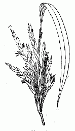
（第一図）
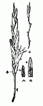
（第二図）
本邦に在て殊に花を出すこと稀れなる竹はマダケ、ハチク、モウソウチク、ヤダケ、ホウライチク、トウチク、ナリヒラダケ、カンザンチク、タイミンチクならびにオカメザサ等にしてそれ未だ吾人の遂にその花を見たることなき竹はシカクダケなり。また時々花を出すことある者はメダケ、ハコネダケ、カンチク、スズタケ、チマキザサ、ネマガリダケ等なり。
竹の花は皆風媒花に属すること他の禾本諸草の花に於けるが如し。ゆえにその花に美色なくまた花粉に粘気なし。その花粉かくの如き状態なるにより風の動くに
竹は既に前に述べし如く全く禾本科の一なれば、その花の状もまた他の禾本諸草のものと異ならず。しかしてその花序は大抵円錐状を成して相集りその花群すなわち花叢は竹の種類の異なるに従いて大小疎密ありて敢て一様ならず。今ここにまずメダケの花を示さん。第一図はその花叢なり。この花叢よりその花穂の一を取ればすなわち第二図に示せるが如きものを得べし。すなわちメダケの花叢はかくの如き花穂の相集りて成れるを知る。この花穂はメダケのものには下に小梗すなわち小き柄あれども他の種類によりてはまた柄なきものあり。また柄に長きものありてある種に在ては時に数寸の長さに達するものあり。この花穂は植物学上にてこれを小穂または螽花と云う。小穂には第二図中の「ロ」に示すが如く小軸と称する中軸ありて、その中軸の両側に互生して二列に相
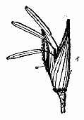
（第三図）
花は第三図に示すが如し。この花は正に開綻せる状にして、中より蕊を吐出しまたその両片開けりと
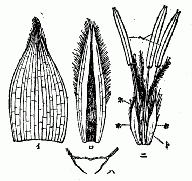
（第四図）
花は図上に示すが如く「イ」「ロ」の両片より成る。その「イ」はこれを花穎と称して外部に在り。その「ロ」はこれを※［＃「米＋孚」、U+7CB0、108-13］穎と称して内部に在り。今各別に分離してその状を示せば、すなわち第四図中の「イ」ならびに「ロ」の如し。「イ」は花穎にして「ロ」は※［＃「米＋孚」、U+7CB0、108-16］穎なり。しかしてその内方より見たる状を示す。「ハ」はこれを横截して以てその畳める状を
花穎は
※［＃「米＋孚」、U+7CB0、109-6］穎は大抵膜質を成しその両縁、内に包み背部に二条の縦脊あるを常とす。この脊上にメダケに在りては図上に見るが如く著しく毛を生ずれども、また他の種類に在ては毛に多少ならびに長短あり、あるいは全く毛なきものあり。
この花穎と※［＃「米＋孚」、U+7CB0、109-9］穎とは果実すなわち穀粒の成熟するまでこれを保護し、遂に穀粒と共に落つ。米の※［＃「米＋孚」、U+7CB0、109-10］はすなわちこの花穎と※［＃「米＋孚」、U+7CB0、109-10］穎となり。
花中の底には上の花穎と※［＃「米＋孚」、U+7CB0、108-13］穎とに次で小鱗片あり。すなわち第四図中の「ホ」「ホ」「ホ」これなり。普通の禾本にはこの小鱗の数多くはただ二片のみなれども、これメダケ及び多くの竹の種類に在ては大抵常に三片あり。これを被鱗と云う。すなわち花被に相当すべきものなり。禾本類の花に在てはその花被皆かくの如く縮小して小鱗片と成り以て花底に潜めるなり。
この被鱗に次で存せるものを雄蕊とす。すなわち第四図「ニ」の「ヘ」に示すが如し。この雄蕊は被鱗と互生す。これ宜しく注意すべきの点なり。メダケに在てはかくの如く三個の雄蕊あれども、下に示す所の他の竹類に在ては中には六個のものあり。竹はあるいはなおこれより多くの雄蕊を有するものまた無きにあらずと雖も、大抵は三個もしくは六個にして、殊に本邦の竹類は三個を有するにあらざれば必ず六個を有するなり。雄蕊には花糸ならびに葯を
雄蕊に次で花の中央に雌蕊一個あり。すなわち第四図「ニ」の「ト」の如し。諸種の竹皆しかり。その下部放大せる処は子房にしてその形小に後穀粒を成す処の者なり。故に穀粒は種子に
またメダケの子房の上には花柱三個ありて相合して一となりその上部全く三条に分かれて柱頭を成し、柱頭には毛を生じて羽毛状を呈し、既に前に
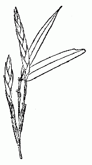
第五図
メダケに最も近き縁を有するものにはハコネダケあり。この竹はメダケより小にして相州箱根山近辺に最も多し。故にハコネダケと云う。その稈は
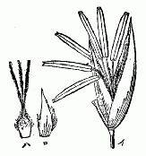
第六図
カンチクはまたよく花を生じかつ実を結ぶ。その属メダケに相近し。その花の状第六図に示すが如し。その円錐花叢は疎にしてその小穂は数少なく、かつ狭長なり、花はメダケよりは一層細小にして、かつ疎々に小軸の両側に互生し、その色紫を帯ぶ。花穎※［＃「米＋孚」、U+7CB0、111-13］穎に毛なくしかして花中に三雄蕊あり。柱頭は殊に二個あり。次にホウライチクの花を示さん。この竹は日本の中部以南の地に繁茂し、常に栽植せらる。しかして往々
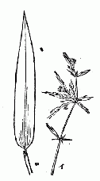
第七図
これに台湾産なる刺竹の花を示すべし。すなわち第七図「イ」の如し。この竹は同島に在て大竹を成し稈甚だ高し。土人は住家の周囲に栽えて保障となす。その下部に横出せる枝には
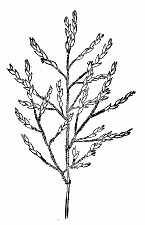
第八図
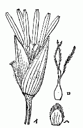
第九図
日本中部以北の深山中にチマキザサと称する笹あり。その葉最も闊大にして本邦内地産の竹類中最も大形の葉を有するものなり。越後高田より飴を包みて出すはこの笹の葉なり。この種の花はクマザサとほぼ相同じ。またネマガリダケあり、越後にてジンダケという。その筍は味美なり。シャコタンチクもまたネマガリダケの一品にしてその稈に斑紋あり。内地産クマイザサの稈に斑あるものはこれをシャコハンチクという。
第十図はスズダケ一名ミスズの花なり。この竹は南は九州より北は北海道に
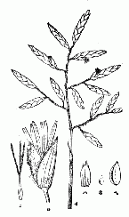
第十図
次にマダケすなわち苦竹の花を示さん。すなわち第十一図及び第十二図これなり。
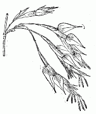
第十一図
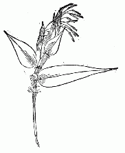
第十二図
マダケは大竹にしてハチク、モウソウチクと並び称して三大竹と
マダケの花は図上に示すが如くその円錐花散漫せずして緊縮しその外部には苞を以てこれを擁しその苞には頂端に卵形の葉を
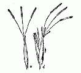
第十三図
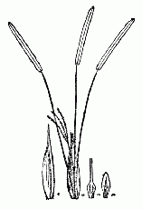
第十四図
第十五図に示すものはハチクすなわち淡竹の花なり。ハチクの花状はマダケとは大いに趣を異にしその円錐花叢は短くして小箒状に簇集し苞ありと雖ども小形にしてその苞頭の小葉また甚だ細小なり。小軸は図中「ロ」に示すが如く甚だ長からずして小穂その両側に互生せり。花は第十六図「イ」に示すが如くその体上に毛を
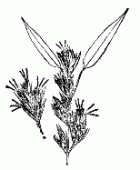
第十五図
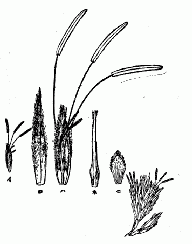
第十六図
クロチクはハチクの一変種なり。その稈黒色を呈するを以て著るし。その花偶に開く。その状第十六図の右端に見るが如し。見るべし、ハチクの花と同状貌を呈する事を。オカメザサと称する小竹あり。一に五枚ザサ、ブンゴザサ、メゴザサという通り体小なりと雖どもその属する所は正にマダケ属に在り。すなわち一は凌雲の大竹にして一は矮形の小竹なり。しかしてその属を一にす。奇というべし。かくの如き大小相懸絶せる品を取てこれを一属に収む。その証とすべきは花に在り。花の竹類検査に至要なる、以て見るべし。第十七図はすなわちオカメザサの花を示す。その集簇せるの状ほぼハチクに似たり。
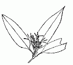
第十七図
次に極めて稀有なるモウソウチクすなわち孟宗竹の花を示さん。すなわち第十八図これなり。第十九図「イ」にその花を示す。「ロ」はその花穎なり。「ハ」は※［＃「米＋孚」、U+7CB0、117-13］穎の雌雄両蕊ならびに三片の被鱗を擁せるなり。「ホ」は雌蕊の全体、「ニ」は被鱗の一なり。その状態皆図上に昭らかなり。その円錐花はまた散漫ならずして緊縮すると雖どもハチクの花の如くならず、
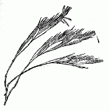
第十八図
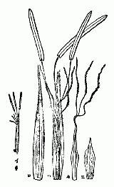
第十九図
上述マダケ、ハチク、クロチクの花は予
以上記する所によりて以て竹の花とはそれいかなるものたること、ほぼ分明となりしならん。これらの諸種は本邦に在りて主なる竹の種類に属しなおこの他に花を出すものまたこれなきにあらずと雖ども煩を厭うてここに出すに及ばず。かつ上に記したる花につきて充分これを了得し以て新に逢着せる所の花を観察せばすなわちそれこれを考究する上につきてあえて躊躇することなかるべきなり。
竹の花に在ってはその雄蕊の数はそれ最も注意すべき要点にして、これに基づき以てその分類上の位置を定むるを得べきものあり。すなわち今本邦の竹につきてこれを言うときはその雄蕊六個あるものはこれ皆刺竹属すなわち Bambusa 属を成し、その三個あるものはすなわち正に他の二属を成す。マダケ属すなわち Phyllostachys 属ならびにメダケ属すなわち Arundinaria 属これなり。メダケ属はその小穂に多数の花を有しマダケ属はその小穂に三もしくは四個の花を
本邦の竹は今日吾人の知る所を以てせばただ台湾産なる麻竹一品を除くの外は上の三属に配するを得べし。すなわち左の如し。
○第一 刺竹属に属するものは、
○クマザサ○ネマガリダケ○チマキザサ○スズダケ○チシマザサ○ホウライチク○タイサンチク○刺竹 等の諸品
○第二 メダケ属に属するものは、
○メダケ○ハコネダケ○カンチク○ヤブシノ○チゴザサ○カムロザサ○ヤダケ 等の諸品
○第三 マダケに属する者は、
○ハチク○マダケ○モウソウチク○オカメザサ○クロチク 等の諸品
台湾産麻竹は麻竹属すなわち「デンドロカラムス」と称する一属に属す。
予は始め世界の竹類を四族に大別すべきを
（一）女竹族――メダケ属、マダケ属
（二）刺竹族――刺竹属
（三）麻竹族――麻竹属
（四）「メロカンナ」族――
（二）刺竹族――刺竹属
（三）麻竹族――麻竹属
（四）「メロカンナ」族――
〔補〕右の文章以後今日に在ては竹類の研究大いに進歩し、従て新属新種の発表せられしもの最も多く、旧来の説の訂正せられたるものまた少なからず。
竹類を独立の科、すなわち竹科とし、禾本科外に分置する事には予これに賛せず。
竹類を独立の科、すなわち竹科とし、禾本科外に分置する事には予これに賛せず。
東京の北郊荒川の堤には沢山な桜の樹が植わって居って、今日では
それなればその堤上の頻繁な往来を停止しその来襲する黒煙を止むる事が出来るかというに、それはトテモ出来ない相談で、この国家経済上からの進展大勢はどうしてこれを止むる事が出来ざるばかりでなく、またこれを制限する事も出来はしない。この経済発展の見地から打算すれば、今よりは一層堤上の往来も繁くし自動車も貨物自動車ももっともっと盛んに通って貰わねばならぬ。また工場の煙突からも、もっともっと黒煙を吐いて貰わねばならぬ。元来この地帯は
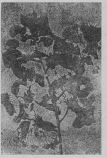
荒川堤の桜の標本の一、ありあけ
この堤上の桜に取っては地を固められ揺がせられ煙に巻かれるはそれは御難な事であろうから、こんな受難地にいつまでも居据らなければならんという事はない。また荒川堤の名所としていつまでもこれをここに止めて置かねばならんという事もない。また単なる一時の行楽地としてガンバッテ居ってそれでこの文化のために発展する往来または噴煙を抑止すべきでもない。この場処は今日の有様では一方を善くしようとすれば必ずや一方を抑制せねばならぬ状態に置かれて居り、この両立すべからざる反対の事相に対して何んとかそれを裁ばかねばならぬ場合に直面して居る当局の人々は
私の考えでは今日これに多少の費用を投じ、多少の補植をして見た所でそれはムダな事でありそれは姑息な方法であると思う。今の東京府庁の方々または天然紀念物会の方々は、今これに処するに間に合せの方法を執られんとして居らるるようだが、それは取りも直さず梅毒患者の吹き出ものに一時絆創膏を貼って置くようなもので、遂には今にその第三期が来てやがては全滅の悲哀を味うであろう。右の方々には
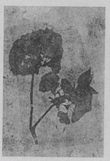
同上、ぼたん
私は永遠に前途を見つめた見地から英断を以てこの荒川堤の桜を他の安全地帯に移しそこに第二の大なる永久の名所を作る事を
今の場合荒川の堤の桜はまず現状のままの成行きに任せて置いて一方新名所を作るに努力すべきである。この堤にある桜の大なる樹はその生活状態から考えてもその費用から見てもこれを他に移すことが出来ないからそれはそのままにして置き、この樹を母として接木などしてその子孫を多数に
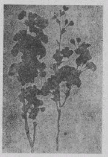
同上、あまのかわ
荒川堤の一つの名所がツブレたとてそれが何んだい、それに優る大なる好い名所がこれに代りて出来ればここに未練はないや、荒川堤に言わすればこんな桜なんてケチな奴は入りゃあしないや、春一時浮れた人が来てくれたってちっとも有り難くないや、それよりもこの辺一帯は国家の経済を
一年中僅に一度ほんの花どき一時の浮きたる行楽のために、国家の発展する経済上の趨勢を支止めるなんてそんな事は出来やしない。行楽が重きか経済進展が軽きか三歳の童子でも判断が付かー。
そこで
桜の種類を蒐めるには日本国中の隅々までもアサル事だ。そして既知の種類も隠れた種類も皆
〔補〕里ザクラの大部分は彼の大島ザクラを原として発展し来った事は、今から十余年も前に私の創 めて考定した事実である。私はその証拠となるべき原樹を相模の真鶴で発見している。何 れその内にその図説を発表せん事を期している。里ザクラの中にはまたヤマザクラ、オオヤマザクラ、ケヤマザクラから来た種類もある。しかしその親子の関係を詳細にかつ科学的に調べた学者は今日まだ世間に一人もない。つまり里ザクラの研究は現代なお、すこぶる幼稚な域を脱していない。
今ここに秋の景物であるススキについて述べて見よう。
ススキ、それは我邦広く野となく山となく到る処に
カヤは最も旧い名で恐らくそれは神代前から称えられて来たものであろう。しかしカヤの語原は刈りて屋根を葺くから起ったのだといわれているが、それは多分ヤは屋根でその屋根を葺く意味の語であろうが、そのカは果して刈るの意か、その点はどうも不明の様である。あるいはそれはクサヤ（草屋）の意かも知れないと思うがその
カヤは上に言った様にススキの古名であるが、学者によってはチガヤ、スゲ、アシ、オギなどをもカヤというと思っているが私はそれに賛意を表しなく、カヤの本物はどうしてもススキでなければならぬと信じている。チガヤなどカヤ式の者であるからすなわちそれを混じているのであろう。
ススキという意味はスクスクと立っているキ（草）だからそういわれると書物に書いてあるが、またあるいはススは畳語でそれは
日本で古来薄の字をススキの名とするのは誤りで、それは丁度茸の字をキノコに誤用しているのと同一轍である。薄の字は旧くよりススキに慣用せられているがそれは決してススキその者の名ではなく、薄は単にススキを形容した文字に過ぎない。一体ススキはその茎葉が密に叢をなして株から生え互に相迫り集っているので、それでこの薄の字を古人がススキに
ススキは山野の陽地に生じ往々山一面を覆うて茂り、また野一面に群を成して生えていてほとんどススキを見ない地は無い程である。もしもこれに大いに用途があったなら大した民用をなすのであろうが、只今それ程満点の利用も無いから従って
ススキは株を成し、地下には短かい多節の地下茎が横になり、それから鬚根を発出して地中から養分を吸収している。
春に芽出ったススキはまず葉鞘（ハカマ）のある葉が叢生し、次にその中から茎が立ちて更に葉がそれに二列式に互生しているが、それには無論長い淡緑色の葉鞘があって茎を包んでおり、その葉鞘は茎の節に着いている。葉の本部なる葉片は狭長でその末漸次に尖り、表面は緑色、裏面は帯白緑色である。葉片の中央には一条の中脈があって表面では白色、裏面では淡緑色を呈している。葉縁には
茎は禾本類では特に稈といわれるが、ススキの稈の本の方は往々葉が枯れ去りてその膚を露わし、節が見えて細い竹の様になっている。しかしそれはオギに於ける程著しくはない。稈は円柱形で淡緑色を呈し、平滑で中が実し
ススキは秋になってその成長の極度に達する。その低いのでは三、四尺位の

花穂の形は大きくてすこぶる著しい姿を呈している。その中軸は狭長で稜角があり、それが真直ぐに立っていて
花は小形で穂上に数多くそれが列をなし枝梗を通じて着いているのである。花は二花ずつ相伴われて居り、その一花は極めて短き小梗を
花は禾本類の花の常套を具えて、あえて蕚もなければ花弁もない。まずその外に外穎がありその次ぎに内穎があって共に外面に毛を帯びる。そしてこれが向い合いになっている。次に外※［＃「米＋孚」、U+7CB0、131-13］と内※［＃「米＋孚」、U+7CB0、131-13］とが同じく向い合いになって居り、この内※［＃「米＋孚」、U+7CB0、131-13］には長い
次に雄蕊が三つあって花の開いている時、すなわち穎※［＃「米＋孚」、U+7CB0、131-16］が口を開いている時に糸の様な花糸によってその末端の葯を花外に垂れブラブラとさしている。葯は二つの
次に花の中心に一つの雌蕊があって、本に一個の子房が坐り、その子房の頂に二花柱があって毛を生じ多くの柱頭をなしている。前述の通り花粉がここに捉わるれば
花が済み日を経ると間もなく長橢円形なる実が熟しこの穎果が宿在している穎片※［＃「米＋孚」、U+7CB0、132-13］片の中に包まれているが、この時分にはその穂が段々に乾いてその花下の毛は散開し遂に穎果を擁せる花体が吹く風の為めに花穂の枝梗より離され、そこでその花下に在る開いた毛の為めに風に連れられ飄々と気中を浮び行って、遂に遠近の地に落下しそこに新苗をして萌出せしむるに至るのである。ススキの花穂が高く挺出しているのは風を迎えるに都合が好いからである。
ススキの花穂を尾花（オバナ）といい、よく歌などに詠み込まれている。彼の山上憶良の秋の
冬に入って断えず寒風に吹かれると穂上の枯花は漸々に散り去りて遂には花穂の骨ばかりとなり淋しく立って残っているのがそこここに見られるが、その時分は最早その葉も枯れ果てていて山も野も蕭条たる冬景色となり、時々白い霜がその枯葉におかれているのを朝早く見ることがある。旅に病んだ芭蕉の夢はこんな枯野をかけめぐったのであろう。
尾花には可愛らしい端唄があって安改元年〔一八五四〕頃から謡われ名高いものとなったとのことである。すなわちそれは、
「露は尾花と寝たといふ、尾花は露と寝ぬといふ、あれ寝たといふ寝ぬといふ、尾花が穂に出てあらはれた」である。
ススキにはいろいろと変った品がある。まずイトススキは葉の極めて狭長なものであり、シマススキは葉に白斑のあるものであり、タカノハススキは葉に矢羽の斑のあるものである。歌にいうマスホノススキはマソホノススキで赤い花のススキをいうのだが、これは今いうムラサキススキの事であろう。またマスホ（十寸穂）ノススキとは花穂の壮大なものを呼んだ名である。このマソホノススキ、マスホノススキについては「人の命は晴れ間をも待つものかは」と昔登蓮法師を悩ましたもんだ。
アリワラススキ（在原ススキ）というのがある。これはトキワススキ（常磐ススキ）一名カンススキ（寒ススキ）である。このススキは普通のススキとは別の種で、関西地方に多く冬も葉がありかつ雄大なから［＃「雄大なから」はママ］よく風避けとして畑の囲りなどに栽えてある事が多いが、また川の土堤などにも見られる。七月頃に早くも花穂が出るが形は長大で花は細かい。しかし普通のススキの様な風情の
八丈のススキは伊豆の七島で牛の飼い葉として作っているものであるが、内地の南海岸ではそれが野生している。
何々ススキといってススキの名を冒している禾本が沢山あるが、これらは大抵ススキの属ではない。
ススキの学名は Miscanthus sinensis Anderss. である。その種名 sinensis は「支那の」という意味であるが、これは支那産の標品を基として
ススキについてなお書く事がいろいろあるが、余り長くなるのでまずこれぐらいで打切りましょう。
松竹梅の
松、それは「百木の長」といわれます。松は千代も変らぬ常磐木でして新春にまずその色を
巨大な松を眼前に見上ぐる時、まず我が胸を打つものはその幹の男らしい処、次はその彼の四方に広がりて勢よく肘を張り肘を屈めし処、次は高く風を受けてもただ琴の
松をまた人間に当て
我が日本の松にはいろいろの種類がありますが、まず最も普通なものは
幸に優れたこの二つの松があるので我が日本の景色がとても優れて見えるのであります。もしもこの二つの大関が無かったならば非常に物足りない景色となるのは必然です。すなわち景色から言っても疑いもなくこれは王様なんです。この二つの松を昔から門松にする事は誠に意義の深いもので、この美風は何時までも続かさねばならんと私は思っています。
竹は松と同じくその色を換えぬ葉と
竹といっても中々沢山な種類がありますが、まずその中で
元来この二つの竹はかの孟宗竹と同様元と支那の産であるが、それが昔渡り来って今は全く日本産の様になり誰れでも我が邦のものだと思っています。
竹の稈は真直ですからこれが君子の心だといわれています。またかく真直な上に多くの節が
竹の稈には節がある上に中が
竹の強い事はその鞭根でも分ります。昔は地震が揺ると竹藪へ逃げ込んだといいます。そこには竹の鞭根が縦横に交錯して地割れがせず避難処として安全だといわれています。「竹に雀はしなよく止る」と謡われます。アノ敏捷な雀とサラリとした瀟洒な姿の竹とは好い取り合せでしょう。そしてまたその意気なものの表象としては「竹になりたや紫竹の竹に、本は尺八、中は笛、末はそもじの筆の軸」と謡われているのでも分ります。
竹から
まずこんな事でも竹を新春の芽出度いものとする価値は充分に認められます。
梅の花は天下の
前の鶯宿梅の様に、また「香に迷ふ、梅が軒端の匂ひ鳥」（匂ひ鳥とは鶯の事です）と謡われた様に鶯は梅の寵児、梅は鶯に懐かしがられて何んとなくその情景がしおらしいのです。これもまた確かに新春の景物であります。
昔、日本で花といったのは梅だそうですが今は花といえば桜の事です。我が邦で梅の名所は数々ありますが、その中で伊賀の国の月ヶ瀬は昔から名高い処です。
梅は元来支那のものですが、遠い昔我が邦に渡り来り爾来繁殖してその種類も三百品以上に及び、まるで日本産のものの様になっています。元日に使います
終りに述べねばならない事は、今日の植物学上から観ましてもこの松竹梅の撰定は実に申分がないのです。一体植物界は隠花部と顕花部との二つに大別せられています。そしてその顕花部が更に二つに別れます。すなわちそれが被子植物と裸子植物とです。ところがこの被子植物が更にまた二つに分れていましてそれが双子葉類と単子葉類とになります。そこで松竹梅をそれに配しますと、松が裸子植物の代表、竹が単子葉類の代表、梅が双子葉類の代表という事になって、つまり植物の三界を
春の
セリは水※［＃「槿のつくり＋斤」、U+65B3、140-10］で通常芹の字を使っているが実言うと芹一字だけでは不徹底である。セリは原頭、山足などの水に生えその白いヒゲ根を泥中に下している。採って見ると白い根が多いので故に古歌にはネジログサと称えた。溝などの中を
食う為めにセリを摘む事は昔からする事であるから古歌にはまたツミマシグサともいった。また『万葉集』に「君がため山田の沢にゑぐ採むと雪消の水に裳の裾ぬれぬ」という歌がある。このエグは人によりては今日いうクログワイだとしているが、その歌の意から見ればどうもこれはセリの事であらねばならないが今日の処私はセリにエグの一名ある事を知らない。そして
セリの葉は分裂して多くの小葉と成っている。すなわちいわゆる複葉である。柄本に
セリの栽培した者はよく八百屋に売っているが皆葉柄がすこぶる長い。これは水田に於て密に叢生させて作る故、上へ上へと延んでこんなに長く成っているのである。しかし野に在る者はカジケテ短いけれど香はズット高い。これを田ゼリと呼んでいる。
さて芹の字ダガこれは※［＃「槿のつくり＋斤」、U+65B3、142-3］と同じである。また菫とも同じである。しかるに今この菫を二様に使い一は水※［＃「槿のつくり＋斤」、U+65B3、142-4］のセリであるが、一は通常これを菫葉として別の一種に使っている。日本の学者はその一名を旱菫すなわち旱芹というもんだからセリが陸に生えた者の様に思ってこれをハタケゼリと訓じている。そして実は菫菜なるその本物を知らなかったのである。
右の菫菜なる者は支那、満洲、朝鮮には昔から圃に作って野菜にしていた。圃に作るから旱芹である。これは西洋にもあって西洋の者は前にはオランダミツバ（一にキヨマサニンジンという。これには一つの説話があれども今は略する）といっていたが今日ではセロリ（Celery）といって西洋野菜の一つとなっている。そして学術上の名は Apium graveolens L. である。
菫の字は前に書いた通りの芹の字と同じで、あるいはセリに使いあるいはセロリに使うべき字面であって、決してその他の植物に用うる事は出来ないものである。しかるに世人はこれをスミレに使って平然としてスマシているのは滑稽至極で、殊更に我が無学無識を広告している様なもんダ。もし世人がスミレを支那の名で書きたければ
ナズナは薺であって植物学上では十字科に属しダイコン、カブなどと同科である。その語原は
ナズナは春の七種の中で最も著名かつ代表的の者で、秋に早く種子から生じ野外や路傍や圃地などに沢山見られる。冬の間敢て霜にも雪にもメゲズ平たく地面にへばりついてその深く羽裂せる根生葉を四方に拡げ、日当りのよい処に生えている者は暗褐色を呈しているが日蔭げの場処に在る者は緑色である。そして葉の下には白い直根があって地に入っている。葉の切れ方には二たイロあってそれぞれ株が違っている。すなわち一はその裂片が単に長橢円形であるが一は狭長でその上縁の本に方に著しい一耳片が着いている。
右は
右の果実はその恰好が
ナズナを食するには

支那の名は鼠麹草でキク科に属する。オギョウは御行と書くが、これをゴギョウというのはよくない。それ故五形と書くのは非である。時には御鏡と書いてあるものもある。この草の本名はホウコグサ（発音ホーコグサ）というのダが普通にはハハコグサ（母子草）と称えて今日はこれが通称の様に成っている。しかしこれをハハコグサといい母子草と書くのは
ホウコ（発音はホーコ）の名は今日でも処によっては民間で唱えている。また処によってはホーコーともホーコグサとも、またホンコともいっている。支那に蓬蒿、※［＃「白＋番」、U+76A4、145-4］蒿、白蒿或は黄蒿などいう草があるがあるいはその名が旧く日本に伝ってホウコという名が出来たではないかと幻想して見るも興味があるが、私の考うる所ではホウコの名はモットズット古くて何かの意味を
この草は早く秋に種子から生じ、茎が分れて短く地上に拡がり沢山な葉を着けて座を成している。実は狭長でその質が薄い上に白くて軟かい綿毛が一面に生え、そのために葉は白く見えている。
春から夏の初めへかけて数寸ないし一尺
三月三日雛の節句にはその時の草餅には昔は必ずホウコグサを入れて
ハコベラはナデシコ科のハコベである。このハコベラはこの草の昔の称えであるが今でも稀れにこの古名をそのまま呼んでいる地方もある。国に由るとアサシラゲともいわれる。支那名は繁縷であるがそれはこの草が容易によく繁茂する上にその茎の中に一条の
秋に種子から生え冬を越して春最もよく繁茂し小さい白花が咲いて実が出来る。花弁は元来五片であるがその各片が深く二裂しているのでチョット見た所では十弁の様に見える。果実には柄がありそれが面白い事には花の済んだ後、次第次第に下に向い成熟間際になって
茎も葉も一様に緑色である。多数の茎は一株から叢出して四方に拡がり梢に分枝して花を着けている。茎面には一側に一条を成して細毛を生じている特徴がある。葉は卵形で対生し葉柄が無い。しかし下方の者は卵円形で葉柄がある。
世間ではこの草を
この草は
一種ウシハコベという者がある。形ちもズット大きくハコベより
普通の人はハコベもウシハコベも一緒にしてハコベと通称しているが、昔はまずそんな状態であって後世始めてこれを二種に区別したものであろう。書物にもその両者を混同して一と成したものがある。
小野蘭山時代頃よりしてそれ以後の本草学者は春の七種の中にホトケノザを皆間違えている。これらの人々のいうホトケノザ、更にそれを受継いで今も唱えつつある今日の植物学者流、教育者流のいうホトケノザは決して春の七種中のホトケノザでは無い。右のいわゆるホトケノザは唇形科に属して Lamium amplexicaule L. の学名を有しそこここに生えている普通の一雑草である。欧洲などでも同じく珍らしくもない一野草で自家受精を営む閉鎖花の出来る事で最も著名な者である。日本の者も同じく閉鎖花を生じその全株皆
この今名タビラコ古名ホトケノザは、我邦諸州の田面に普通で秋に種子から生じ早春に漸く繁茂し、春
また今日世人が呼ぶ唇形科のホトケノザを試に煮て食って見たまえ。ウマク無い者の代表者は正にこの草であるという事が分る。しかし強いて堪えて食えば食えない事は無かろうがマー御免蒙るべきだネ。しかるに貝原の『大和本草』に「賤民飯ニ加ヘ食フ」と書いてあるが怪しいもんダ。こんな不味い者を好んで食わなくても外に幾らも味の
要するに春の七種として今世間一般にいっている唇形科のホトケノザを用うるは極めて非でこれは誤認の甚だしいものである。
カブすなわち蕪菁を七種に用うる時の特称。
ダイコンすなわち蘿蔔を七種に用うる時の特称。
「春の野にすみれ摘みにと来し吾れぞ野をなつかしみ一と夜寝にける」と詠んだその人が、実際スミレがそこにあったのでそれでその野が殊更なつかしかったのであったとしたら、チョット他人の及ばないほどのスミレの愛人であるといえる。かくも強くスミレに愛着を感ずる人は世間に余り見受けぬであろうが、これは山部赤人でその歌は『万葉集』に出ていて有名なものである。
スミレへもこの位の愛を持たねばスミレを楽しむ人も余り大きな顔をするわけには行くまい。
しかしスミレといえばほとんど誰れでもその名を知らぬものはない位だ。そして何んとなく懐かしい感じがする花である事は
それはナゼであるかと言うと、スミレなる小さい草がしおらしい美しい花を麗らかな春の野に
スミレという名を聞けば何んということなしにそれが
スミレはかの大工の使う
昔から我日本人は菫の字をスミレに使っている。また菫菜も同様である。がしかしその菫も菫菜も共に決してスミレその者ではないから、これをスミレとして用うるのは大いなる誤である。そしてこの菫も菫菜も両方共に少しもスミレとは縁の無い字である。しかしこれを菫菫菜と菫の字を二つ
しかればすなわち植物の名として菫ならびに菫菜は元来何を指しているかと言えば、これはかのセロリすなわち Celery（学名では Apium qraveolens L.）をいうのである。菫はすなわち芹と通じ菫菜とも書き繖形科植物の一種の名で、これは支那で
菫（芹） セロリ（オランダミツバ）
菫菜（芹菜） セロリ（オランダミツバ）
菫菫菜 スミレの一種
菫菜（芹菜） セロリ（オランダミツバ）
菫菫菜 スミレの一種
である。
右のセロリのオランダミツバはまた一にキヨマサニンジンと称する名のあるのは珍である。これは昔加藤清正が朝鮮征伐の時同国からその種子を
また紫花地丁という名があって支那でこれをスミレの一種に使っている事もあれば、またマメ科植物の一種でイヌゲンゲ（学名でいえば Gueldenstaedtia multiflora Bunge.）という者に使っている事もある。この草は日本には産せず独支那のみに在る宿根草で一に米布袋とも称える。
スミレ類の名としては支那産の者には上の菫菫菜の外に種類によってなお、匙頭菜、犁頭草、箭頭草、宝剣草、如意草などの名がある。
スミレにはまた我邦諸州によりいろいろの方言があって、スモトリグサ、スモトリバナ、カギトリバナ、カギヒキバナ、アゴカキバナ、カギバナ、トノノウマ、トノウマ、コマヒキグサ、キョウノウマ、キキョウグサなどの名がある。また一夜グサと一葉グサとは古歌に用いられた名であって、その歌は「一夜ぐさ夢さましつゝ古への花とおもへば今も摘むらん」、ならびに「いのちをやかけて惜まん一葉ぐさ月にや花の咲かむ夜な／＼」である。
我日本はスミレの種類の多いこと実に世界一で、つまりスミレでは日本は世界の一等国である。日本はスゲ類でもそうである。なんと盛んなもんではないか。世界万国に対し
日本に在るこの沢山なスミレ類はこれを二つに大別する事が出来る。すなわちその一は茎の立たない種類でいわゆる無茎品である。またその一は茎の立つ種類でいわゆる有茎品である。普通のスミレは無茎品の一例でタチツボスミレは有茎品の一例である。そしてこの有茎品と無茎品とを比べて見ると無茎品の方がズット多い。
無茎品の諸種はその葉が皆根生で極めて短い直立の地下茎から叢生し花茎も同様根生である。これは普通のスミレを見れば
有茎品の諸種もその始めに出る葉は根生であるが茎が立つと皆互生せる茎生葉と成る。
葉には葉柄があって柄本には托葉がある。無茎品の者にはそれが葉柄本に沿着しているが有茎品の者はこの托葉が分生している。そしてその中には櫛歯状に分裂したものなどもある。葉片はその形状が種々で長い者円い者がありまた裂けている者もあって、種類によって各異っている。また葉面に毛のある者、あるいは斑紋のある者、あるいは光沢のある者、あるいは葉裏に紫色を帯ぶる者などがあり、また大抵は葉縁に鋸歯がある。
葉腋から花茎（植物学ではこんな葉の無い花茎を
と称する。彼の水仙、ヒアシント、サクラソウなどの花茎もそれである）が出てその頂に横を向いて一輪の花を着けている。花序は単花の様ではあれど実は一花ある聚繖花である。この花茎の途中には必ず二枚の小さい苞（苞とは花の近くに在る花には一番下に小い緑色の萼片が五つある。次に五枚の花弁があって通常は紫色を呈している。この五つの花弁は上に二枚、横側に二枚、下に一枚がある。この下の一枚は脣弁で、他の四枚とは違って紫の脈が幾条も通りその後ろの方に一の長い嚢（植物学では距といわれている）が後ろの方へ突き出ている。この距の中には蜜液が分泌せられている。
花の中央に五つの小さい雄蕊があって白い花粉が出る。その花粉を持った嚢を葯というがその葯の頭に黄褐色の鱗片が着いている。花の中にこの雄蕊を上から覗くとそこが茶色に見えるのはこの鱗片のあるためである。
右の五つの葯の中でその下の方の二つには特別に長い脚を持っていて、それを花の距の中へ突き込んでいる。元来それがこの様な仕組みに成っている事については、このスミレの花に取ってどうしても見逃せない意義のある所であってその理由は下に述べる。
花の中心には上の雄蕊に取り囲まれて緑色をした一の子房がある。この子房の上には一の花柱が立っていてその花柱の端が広く成っていわゆる柱頭を成している。この柱頭は少しく粘ば粘ばしている。そして子房の中には沢山な卵子があってそれが後に種子に成る。
前に書いた雄蕊の附属物なる二本の脚は、既に上に述べた様にそれが何時も彼の花の後ろに突き出ている距の中へ突き込んでいる。ナゼこの花の中がこの様な仕組みに成っているかというと、これはこの花に於ての雌雄の結婚に好結果あらしめんための手段なのである。すなわち雄蕊から出る花粉を雌蕊の柱頭へ着けてやらんとの希望の現われである。
元来から言えばスミレ類の花は先天的には虫媒花であったのである。すなわち昆虫が媒介してくれる花なのであった。それゆえその花の組み立てが総て虫媒花向きに出来ている。
まず第一にその花が横向いて咲いているのに注意を払って見る。それは横あいから虫が飛んで来て花に入るのに具合が好い。また花は美麗な色をしているのでそれが目標にもなるでしょう。虫が来ればそれが止まらねばならないが、それにはその最下に在る一花弁すなわち脣弁がその足場と成ってくれる。そして雄蕊から出ている二本の脚が距の中へ入って居りこの距の底には蜜がある。来訪した虫が右の花弁の一なる脣弁に抱き付いて見ると、これも前に書いた様にそこに目に立つ紫の脈線が奥の距の方に向って集り走っていて、この奥には蜜があるぞよとその蜜の所在を指示してくれているので、虫はその指示に従いその嘴を距の中へ入れそこに在る蜜を吸うのである。
この様に虫がその頭を花の中へ差し込んでその嘴を距に入れた時、その距の中へ突き入っている雄蕊の脚に虫の嘴が触れて自然にそれを動揺さすので、丁度それが槓杆の役を務めてそれに連っている雄蕊の葯が動く事になる。そうするとその葯嚢からサラサラした花粉が丁度そこへ来ている虫の頭から背へかけて降りかかって、その毛のある頭あるいは背に附着する。虫自身にはそんな事のあった事は全く知らなく、よい加減蜜を吸ったらそこから嘴を
だが、この様に巧妙に出来た花も今日の世界ではこの草に取って絶対的にその役目をなしてはいない様に成っているのは余りにも不思議な現象であるといわねばならない。つまりスミレ（
草木の花は種子を
妙な処へ気焔を吐き散して相スミマセン。スミレはアノ通り美花を開いてもその目的の実が
しかし世の中は好くしたものでスミレは花はどう咲いてもよい。それには秘伝がチャンと備わっている。すなわちそれは閉鎖花という代理が出来ていてコッソリとそれが盛んに実を拵え種子を拵えるのである。スミレの様に盛んに閉鎖花を出す植物は他にそう沢山あるものではない。かのスミレの
スミレのこの閉鎖花は普通の花と同様にやはり花茎があるが、一般にそれが短くて通常葉の下に隠れて居り、葉もまたこの時分には春の者よりはズット大きく成っている。この閉鎖花は春から夏秋と続いて出る。これには萼はあるが花弁が不発育で雄蕊も僅かな数しか無くその中央に子房があり柱頭を有する。花が咲いたとしても始終閉じていて丸で
実は小さく円い者もあれど通常は橢円形の者が多い。熟すると三つの殻片に裂けて開き中の種子を飛散さすのである。そしてそれを我が株の周囲四方へ飛ばすのは広い地面へ新しい苗を
まず大体これでスミレの草の事が判ったであろう。そしてこれらは皆宿根草であるが唯外国産の三色スミレだけは通常一年生植物である。
西洋産のスミレのスウィート・ヴハイオレット（Sweet Violet）すなわちニオイスミレは、花は紫で美麗であるがこれは主としてその香気が珍重せられるスミレである。日本ではスミレとしては皆その花色の美とその花姿の可憐なのを愛でて香は一向に注意しない。それは我邦のスミレ類には一般に香の無いものが多く、中にはエイザンスミレならびにニオイタチツボスミレの様に
邦語のスミレは、今日では西洋のヴハイオレット（Violet）の様にこの類の総名として取扱った方がよいので一般の人々はそう心得てしかるべきだが、今日植物学界ではスミレといえば唯ある一種の物に限られて使っている。そしてその他の種類へは皆その上に一の形容詞を付けて、例えば
昔からツボスミレの名があってよく歌に読み込れている。例えば「山ぶきの咲きたる野辺のつぼすみれこの春の雨に盛りなりけり」あるいは「茅花ぬく浅茅が原のつぼすみれ今盛りなり吾が恋ふらくは」などがこれである。このツボスミレの名は今日植物学界ではある一種の小白花を開くスミレに限り用いられていれど、元来はこの昔からいうツボスミレは紫の花が咲き、庭先きから野辺へかけてのスミレの一種を指した名である。
人に依りてはツボはその花が
ツボはかの源氏の桐壺のツボと同様まずは庭の事だと思っていればよい。今日では庭の事をツボといっている処は少ないが、私の郷国の土佐では昔の名が遺っていて、なお今日でも庭先きの事をツボと呼んでいる。聞く所によれば名古屋辺でもそうであるそうな。しかし庭といっても樹木を植え込んだ庭園の事では無くて家の前の広場すなわち坪である。例えば「麦をツボへ干す」、「子供がツボへ
ある広さを有するツボすなわち坪もツボスミレのツボも同意義であると言っても別に差支えない。
ツボスミレは昔始めは手近かな庭先きに生えている者を見てそうその名を呼んだものだろうが、しかし後ちに野辺で同様見出されてそれをやはりツボスミレといっても、あえて何んの不都合もありはしない。それは丁度カワホネが川で無い池に生えていてもやはりカワホネでイケホネとはいわぬと同じ事、また山ザクラが野の在てもやはり山ザクラで野ザクラとはいわぬと異ならないのである。
彼の繖形科品のツボクサは坪クサすなわち庭クサの意で、この草も庭先きの地などに生えるからそういうのである。しかるに『大言海』に「其花、形、靫ニ似タレバ名トスト云フ」とあるのはその解の正を得たものではない。そしてツボクサの花は決して靫には似ていない。
〔補〕今日植物学者のいっている小白花のツボスミレは実はその名を間違えている。そしてこれをそういい出したのは田中芳男、小野職※ ［＃「殻／心」、U+6164、165-14］の両氏で、それは明治七年頃である。またタチツボスミレも不要な和名でこの者は万葉歌にもあるツボスミレで宜 しい。すなわち紫花を開く普通なスミレである。このツボスミレの名を今日植物学者は前述の様に小白花品をそういっているのは悪るい。これは如意スミレというものである。
ツバキはどんな人でもよく知っている花木である。それは常磐木で四時青々として居りかつ葉が
全体ツバキとはどういう意味でかく呼ぶかと言うと、これは葉が厚いからアツバキという意で、そしてそのアがとれたものだといわれる。また一説にはこれは
ツバキは暖い処にばかり在るかと思うと決してそうばかりとも限らなく、我邦の北へ行けば青森県にも秋田県にもあって自生している。秋田県で私の見たのはかなり高い山地に育っていた。しかしそこでは中々よく茂っていたけれど丈けはあまり高くはなかった。我邦南方の暖地では中々盛んに茂っていてかつその分量も沢山だし、またその丈けも高く、中には幹の中々大きなものもある。
このように山野に野生しているものをヤマツバキともヤブツバキともいい、花は一重咲きでその色は
このツバキは春に花がすんで秋になるとかなり大きな円い実がなる。すなわちツバキの実で国によりこれをカタシと呼んでいる。秋が深けて来るとその実が裂けて中から大きな黒い種子が出て地に落ちる。これを拾い集めてそれから
野生すなわち自然生のツバキは上の様に花色が赤の一種でまた実の状態も一様だけれど、人家に栽えてあるツバキは花も多様で葉もまた往々異形がある。かのヒイラギツバキ、キンギョツバキなどは葉の変った品でありまた
これらの沢山な品種は皆、その
往時にはツバキを熱愛し大いにその品種を蒐集した人もあったであろうが、今日では特にこれを嗜好する専門好事者が無い様に思う。それゆえそのいろいろの品はまずこれを植木屋の方面で見るより外途がない様に思われる。しかしこれは何となく物足りない感じがある。何を言えツバキは我が日本の名花であの通りの美花を開き葉を併せて大いに観賞せらるべき資格を備えたものであって見れば、誰れか大いにこれを
ツバキが余り世間普通の品となっているため余り人々の注意を惹かぬ様ではあれど、考えて見るとツバキほど美事な花を開く木は少ないでしょう。そしてその小さい一、二尺の小木でさえも容易に大きな美花が咲くではないか。そしてそれが常緑の葉と相映じて
日本にも昔からツバキを写生した図は無いでも無く中には中々見事なものもあるが、しかしそれを出版してツバキ国の体面に恥じない大きな書物としたものはまだ一つもありはしない。ツバキの本国であり東洋で誇る花でありながらこんな有様では誠に残念至極で、ツバキは
ツバキは支那にもあって同国ではこれを
ツバキを通常
しかるに世間ではツバキの時の椿をもチンと発音して呼んでいるのは、とても滑稽で不徹底でいわゆる認識不足というヤツです。これは昔の人、イヤ学者が椿の字については味噌も糞も一緒にしている結果なんです。
椿の字は無論支那の植物にもある。その植物は今は日本にも来ていて諸処に植えられてある樹で我邦ではこれをチャンチンと呼んでいる。全体どういう訳でそれをチャンチンというかと言うとこれは実はヒャンチンの転訛で
このチャンチンの
昔のある有名を一学者は
今から凡そ二百七八十年程も前の寛文年間に始めてこの
この樹をチャンチンというの外、これを植えておくと雷が落ちぬとてカミナリノキ、幹が高く
ツバキを賞讃して
先年私が紀州へ旅行した時、
鹿を山へ放つと他の木はそうではないが鹿は特に
ツバキと姉妹の品にサザンカがある。これは庭園に
この木もまたツバキと同じく日本と支那との原産である。我邦では四国、九州の暖地山中に自生の木があって一重咲きの白花を
サザンカも花が
昔の人がこの木に
右の様な理由だからサザンカを
ツバキの別種に
これから出た種類にスキヤだとかハツカリだとかの品がある。またかのワビスケ・ベニワビスケ・コチョウワビスケなども実はトウツバキ系統のものである。これらの品がツバキの中に雑っていれども普通の人にはそれがツバキ系統のものか、トウツバキ系統のものか、チョット区別が付かないが、しかしそこにこれを見別ける
お正月は年の
まず家の入口に門松を立てる。一方は右に一方は左に対をなして二本である。そしてその深い緑色は何となく新鮮な色を漂わしている。また一方は雄松（植物学界では黒松という）一方は雌松（同じく赤松という）を用うるのが実いえば正しい訳だ。松は昔から千歳を契るともまた千年の齢を保つともいわれ、幾年も幾年もその翠の色を保っておりその上、松は百木の長ともいわれて誠にこの上もない芽出度い貴い樹である。
松は四季を通じていつも緑の色を湛えた常磐木で、それが雪中にあってもなお青々として
竹は松に伴うて用いられ、それは万代を契るといわれ、これも目出度いものである。その葉は浮華な移り気を戒める
橙は代々に通わして子々孫々連綿と継承相続し何代も何代も続く家の長久を表象させたものである。すなわちそれはその家の系統を重んじそれを断絶さするのは大罪悪であることを反映しているのである。橙をダイダイというのはこの実が初めは緑色で、秋になり熟すれば赤黄色となり、それが樹上にあって年を越し翌年になれば再び緑色を帯び来って初めの緑色に還り、かく色が重なるからそれで代々といわれるとのことである。そして回青橙という名もこれに基づいて名づけられた訳である。またその実の
裏白は暖地の山に繁茂している常緑の羊歯で、その葉の裏が白色を帯びているからそれでウラジロの名がある。このように四時葉色が変らず質も剛くその整然として細裂している葉姿も頗るよいので、それで元日の目出度さを祝うてこれを用い初めたものであろう。この羊歯にモロムキの名があるが、これはすなわち諸向きの意で共に向い合う事であるからこれが夫婦差向いの象にとれる。またこのウラジロは元来シダ（今日ではシダはこの類の総名のようになっていれど実はこのウラジロの名である。ゆえに昔はシダといえばウラジロを指したものである）の名があるので、そこで歯朶の字をこれに充てこれをヨワイノエダと
昆布はヒロメという名があるのでこれを広がるの意に用い寿祝の品とする。世間ではこれをヨロコンブとして喜ぶの意とすれど、実はこの品を祝儀の場合に用うるのは前のヒロメの名があるからである。すなわちそれは丁度末広を芽出度い言葉として用いるのと同様である。
コンブは昆布の支那名に基づいて昔から呼んでいる名ではあれども、元来この昆布と支那でいったものは実にワカメのことで、いわゆる今日本でいっているコンブその物ではないのである。つまり名の充てそこないである。そしてコンブの本当の支那名は海帯である。
譲り葉は常磐木で四時青々と茂っているが、しかし初夏の候になるとその葉が新陳交代するのである。すなわちその時分に新葉が萌出し来ると前年の旧葉が落ち散るので間もなく新しい葉に変ってしまう。それでこれをユズリハと称する。かく葉の交代するものはひとりこの樹ばかりではないけれど、中でもこの樹の葉が大きくて目立ち姿も色もよいからそれで特にユズリハと呼び、またこれを正月に用いたものである。これを用いるのは家では親は子に譲り子は孫に譲りかく譲り譲りして、代々相伝え永くその家が繁栄し続くのを表象し祝ったものである。
いろいろの書物にユズリハを交譲木と書いてあるがその字面は誠によいけれど、実はこれは誤りである。また楠をユズリハとするのも誤りでこれは日本にない木である。前の交譲木はこの楠の一名である。また
ホンダワラは今日ではこのようにいっているけれど、元の名はホダワラであった。そこでホを穂に利かせタワラを俵に利かせて穂俵となし、めでたいものとしたのである。穂は稲麦などの穀物の穂で俵は穀物を入れる俵であって、この穀物の入った俵があればまず生命には別条がないからこんなめでたいことはない。昔は海藻で
蝦は長寿の表象として用いるもので、その鬚があって体の曲っているのを長生きの老人に見立てたものである。ゆえにエビを海老と書いてある。すなわち海の老人である。ことにその姿勢が勇壮で色も鮮やかだからなおさら賞用せられたものであろう。
トコロもエビと同じくこれも長寿の老人を表象したものである。その地中の地下茎の曲ったのを老人の腰の曲ったのに喩え、その鬚根を口鬚に比したものである。それゆえトコロを野老と書いてあるがこれは野の老人の意味で、それはエビを海老と書くのと同じ趣である。
トコロは通常

 と書いてある。古くはトコロズラといったもので今ではこれにオニドコロの名がある。この地下茎なるイモはその味が極めて苦いが、ところによるとこれをアク汁で煮てその苦みを薄らげ食用にすることがある。この草は茎は蔓をなし山野いたるところに生ずる。
と書いてある。古くはトコロズラといったもので今ではこれにオニドコロの名がある。この地下茎なるイモはその味が極めて苦いが、ところによるとこれをアク汁で煮てその苦みを薄らげ食用にすることがある。この草は茎は蔓をなし山野いたるところに生ずる。搗栗はシバ栗の実を日に干し臼で
柿はその実の干したものすなわち串柿などを用いるが、これは丁度この時節に用うるに都合がよいからであろう。しかしまたカキは万物を掻き取るの義として祝の一にしたものといわれる。
蜜柑は昔のタチバナであって、これに橘の字があててある。タチバナは百果の長で古い歴史を持った由緒ある良果であればこれを祝嘉のものとしてあるのである。
榧はどういう理由で正月に用うるかよくわからぬが、この実は十二指腸虫を退治することの出来る特効がある。かつ油を含んだ木の実でもあれば人体の養いになり、従って息災延命の幸いも得べければ嘉品として用うることになったであろう。
〔補〕前文にあるナノリソはまたナノリソモともいいこれは吉名で漢字では莫告藻と書く。すなわち告げてはならぬ藻という意である。それには故事があってその中に波摩毛、すなわちハマモの名が見え、これは浜藻でそれは海藻のホダワラであろうとの事である。しかるにこの莫告（ナノリソ）を莫騎（ナノリソ）の意味に変えて神馬藻の字を書き出した、この神馬は神社に奉納しある馬で神様が御乗りになるものであるから常人はこれに乗れない。それでそれが莫騎すなわちナノリソ（乗ッテハナラナイ）である。本文に在る神馬草は神馬藻で、その解は一の俗説であろう。またホダワラの俵は元来穂の様に成っている藻の体上に個々多数に着いている小い浮嚢、すなわち俗にいう実の形の相似から来たものであるが、本文にもある通り昔はこの海藻で小形の米俵を作って供えたとの事である。
Botany を植物学と訳したのは Chemistry を化学（支那の書に『格物入門』と題するものがあるが
始めて植物学の語の見えている書物は今から八十年前の咸豊七年（1857）清の代に『植物学』と題して開版せられたもので、これが植物学という訳語を作って用いた最初である。この『植物学』の書に就ては昭和十二年五月発行の『図書館雑誌』第三十一年第五号に書いて置いたので幸に御覧下さればその書の委曲が判然する。
これに反して我が日本人はこの Botany を何んと訳したかというとそれは植学であった。これは
この様に宇田川榕菴が天保年間に植学なる訳語を公にしたものだから、その後安政三年〔一八五六〕に発行になった
明治十年前後から次第にこの植学の字が廃れてそれを使わなくなり、これに代って
また明治十年前後には不用意にも支那の本草の文字を植物学の場合に用いていた事があった。これは主として博物局の学者がそうであった。すなわち前に記した文部省発行の『植学浅解』の緒言中に「因テ今国字ヲ以テ英人リンドレー氏ノ学校本草〔牧野いう Lindley の著 School Botany である〕ヲ訳シ
どんな事でも初期の内には種々と混雑を招く事は数の免れぬものである。Botany の訳語も上に述べた様に不定なる動揺時代があって、それから一定した静止時代に移ったものである。そして今日では植物学の語が
今日の我が植物学界では、花に在る子房の中の Ovule を胚珠と呼んで誰れも疑わずにいるが元来これは明かな誤認である。
今その誤認である
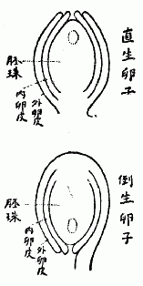
しかれば胚珠は何の訳語であったかと言うと、それは決して今日日本人が用いているような Ovule に対しての訳語ではなかった。そして実はそれ Ovule の中心体を成している Nucellus（今の人はこれを珠心といっているがすなわちこの珠心が真の胚珠である）の訳語であったのである。そしてその Ovule は同書ではそれが卵と訳せられていてその文章は次の通りである（原との漢文を仮名交りに書いた）。
卵〔牧野いう、Ovule の事〕ハ胎座内ニ在テ後ニ種子ト成ル、卵ハ大率 子房ノ中ニ居ス……卵ニ胞〔牧野いう、膜皮の事〕アリ或ハ一層或ハ二層、卵内ニ胚珠一点アリ、即チ異日果中ノ胚ナリ
今了解し易い様に図を以て示せば右の
この様にその事実が最も明瞭なるに
私は従来幾回となくその真相を明かにして一般の学者に注意を促がしたが、どうも
しかればこの問題をどう整理したらよいかと言うとそれは次の様にすればその原意を損わぬ最も正しい名称となる。すなわち
Ovule 卵子（胚珠は誤称）
Nucellus 胚珠（今日珠心というもの）
Nucellus 胚珠（今日珠心というもの）
卵子の語は Oospore の場合に用いられている事があるがこれは前々からの訳語で無いからこれを取消しそれを卵胞子とすれば宜しい。これは卵子よりはずっと佳い訳語である。
植物学上でもまた動物学上でも科の字は今日普通に使用し誰れでもよくこれを知っている。すなわち植物学では、以前には、例えば Order Magnoliaceae という様な場合の Order に適用したが、今日では一般にそれと同位の Family が用いられている。しかしこの科の字をどうしてこの Family に対して使用するように成ったかのイキサツを知っている者は動物学にたずさわる人々また植物学にたずさわる人々の中でも割合に
この科の字は「植物学」の訳字と同様我が日本人の案出した字ではなくこれもまた支那人が Family に当て
同書の巻の八は分類学の部であるがこの書では分類を分科といっている。すなわち Classification の訳字であろう。
さてこの分科の処に幾つもの科が解説してあるが今その科の名を挙げて見れば、
繖形科 石榴科 繍球科 菊科 脣形科 淡巴菰科
欖橄科〔牧野いう、オリーブ科の誤訳〕 実大功労科 薔薇科 梨科
梅科 豆科 肉桂科 紫薇科 胡椒科 大黄科
橘科 葡萄科 罌粟科 玉蘭科 蓮科 茶科
茘枝科 木緜科 十字科 瓜科 胡桃科 栗科
桑科 麻科 楊柳科 松柏科 水仙科 薑科
芭蕉科 五穀科 である。
欖橄科〔牧野いう、オリーブ科の誤訳〕 実大功労科 薔薇科 梨科
梅科 豆科 肉桂科 紫薇科 胡椒科 大黄科
橘科 葡萄科 罌粟科 玉蘭科 蓮科 茶科
茘枝科 木緜科 十字科 瓜科 胡桃科 栗科
桑科 麻科 楊柳科 松柏科 水仙科 薑科
芭蕉科 五穀科 である。
我が日本では明治初年当時博物局（今の帝室博物館の前身）の職員で斯学上極めて重要な役割を勤めていた田中芳男氏（後ち貴族院議員となり次で男爵を授けられた）が明治五年にド・カンドール氏の所説に基き『
この分科表の科を代表する植物名には皆漢名（支那名）が充てられていて毛
 科、木天蓼科、木蘭科、蕃茘枝科、防已科などと成っているがその間漢名の見付らぬものは水松葉科、松木膚科、瓜樹科、蟻塔科、蔓菜科、岩菜科、花葱科などの様に和名を漢字で書きまた洋名を用うる場合には列設多科、加々阿科と書いてその体制を一様にしてある。当時はなお植物に対して漢名の
科、木天蓼科、木蘭科、蕃茘枝科、防已科などと成っているがその間漢名の見付らぬものは水松葉科、松木膚科、瓜樹科、蟻塔科、蔓菜科、岩菜科、花葱科などの様に和名を漢字で書きまた洋名を用うる場合には列設多科、加々阿科と書いてその体制を一様にしてある。当時はなお植物に対して漢名の明治二十年頃に至て「我が日本の植物は宜しく日本名すなわち和名を
そして私がこの意見を発表しかつ実行した時、早速これに賛意を表せし公平な学者が二人あった。すなわち一人は理学博士の池野成一郎氏で今一人は理学博士武田久吉氏であった。他は大抵従来の因襲に捉われて便に就き善に移る事を悟らなかった。中には善いと知ってもアイツの主唱だからムシが好かんと感情的に賛成しなかった人もあったであろう。大学の植物学教授松村任三博士は余り私を歓迎していなかった人にも拘わらず遂には私と同意見と成って大正五年〔一九一六〕六月八日に発行した同氏の著『改訂植物
世が移ってもしも科の字を日本語にしなければならない場合に立ち到ったなら、私はこれをナカマ（仲間）としたいと考えている。そしてこの語は縁を有つ者の集りを表している科の意味と合致するものだと信ずる。タグイ（類）ではその限界が余り厳格に感じなく、またこの語は余り通俗に用い過ぎていてどうも特用してある科の名としては適しない感があるので私は採らない。そしてもしもこれをローマ字で書く場合には Kiku-no-Nakama, Tade-no-Nakama, Yanagi-no-Nakama, Mame-no-Nakama, Yuri-no-Nakama などと書けばよいのである。あるいは no を省いて端的に Kiku-Nakama, Yanagi-Nakama という様にしてもそう悪くは無いと思う。
 と※［＃「くさかんむり／骨」、U+84C7、191-16］※［＃「くさかんむり／突」の「大」に代えて「犬」、U+8456、191-16］とは中々は Capsule の訳語、※［＃「くさかんむり／骨」、U+84C7、192-1］※［＃「くさかんむり／突」の「大」に代えて「犬」、U+8456、192-1］は Follicle の訳語である。今例を挙げて言えばアヤメ、ユリ、アサガオ、ムクゲなどの果実はでオダマキ、トリカブト、シャクヤクなどの果実は※［＃「くさかんむり／骨」、U+84C7、192-3］※［＃「くさかんむり／突」の「大」に代えて「犬」、U+8456、192-3］である。※［＃「くさかんむり／骨」、U+84C7、192-3］※［＃「くさかんむり／突」の「大」に代えて「犬」、U+8456、192-3］はその心皮（Carpels）が各独立して居りはそれが連合しているの差がある。
と※［＃「くさかんむり／骨」、U+84C7、191-16］※［＃「くさかんむり／突」の「大」に代えて「犬」、U+8456、191-16］とは中々は Capsule の訳語、※［＃「くさかんむり／骨」、U+84C7、192-1］※［＃「くさかんむり／突」の「大」に代えて「犬」、U+8456、192-1］は Follicle の訳語である。今例を挙げて言えばアヤメ、ユリ、アサガオ、ムクゲなどの果実はでオダマキ、トリカブト、シャクヤクなどの果実は※［＃「くさかんむり／骨」、U+84C7、192-3］※［＃「くさかんむり／突」の「大」に代えて「犬」、U+8456、192-3］である。※［＃「くさかんむり／骨」、U+84C7、192-3］※［＃「くさかんむり／突」の「大」に代えて「犬」、U+8456、192-3］はその心皮（Carpels）が各独立して居りはそれが連合しているの差がある。これら果実の分類にこんな普通とは縁が遠く全く活版植字者泣かせの字を用いた人は宇田川榕菴氏で、すなわち同氏の著で昭和十二年から百四年前の天保六年〔一八三五〕に発行に成った『植学啓原』にそれが載せられている。
を Capsule ※［＃「くさかんむり／骨」、U+84C7、192-12］※［＃「くさかんむり／突」の「大」に代えて「犬」、U+8456、192-13］を Follicle に専用したものである。『救荒本草』に書いてある一、二の例を挙ぐれば例えば野西瓜苗の条下に「花罷作
」、油子苗の条下に「結四稜児」、辣辣菜の条下に「結小 」、また※［＃「特のへん＋尨」、U+727B、192-15］牛児苗の条下に「結青※［＃「くさかんむり／骨」、U+84C7、192-16］※［＃「くさかんむり／突」の「大」に代えて「犬」、U+8456、192-16］」、綿※［＃「聯のつくり」、U+221C7、192-16］菜の条下に「攅生小※［＃「くさかんむり／骨」、U+84C7、192-16］※［＃「くさかんむり／突」の「大」に代えて「犬」、U+8456、192-16］」の
」、また※［＃「特のへん＋尨」、U+727B、192-15］牛児苗の条下に「結青※［＃「くさかんむり／骨」、U+84C7、192-16］※［＃「くさかんむり／突」の「大」に代えて「犬」、U+8456、192-16］」、綿※［＃「聯のつくり」、U+221C7、192-16］菜の条下に「攅生小※［＃「くさかんむり／骨」、U+84C7、192-16］※［＃「くさかんむり／突」の「大」に代えて「犬」、U+8456、192-16］」のこれも中々
は音はテイである。イの音も無いではないがここはテイで無ければならない（これに類した事は亀の字でカメの時は字音はキであれど裂ける時はキンの字音で呼ばねばならぬ。故に亀裂はキレツでは無くキンレツである）。さてこの
は元来ツバナ（チガヤすなわち白茅のと続づき柔かなツバナであってこの熟字は元とは詩経に在る衛風中の碩人の章の「手如柔」から出たものである。この柔
を宇田川榕菴氏が詩経から取り出して来て植物学に用いると言うので柔の字の頭へ艸冠りを加えて※［＃「くさかんむり／柔」、U+8447、193-11］（支那に※［＃「くさかんむり／柔」、U+8447、193-11］の字はあれど此処の※［＃「くさかんむり／柔」、U+8447、193-11］とは無関係である）と成し、その※［＃「くさかんむり／柔」、U+8447、193-11］を花序の一の Catkin すなわち Amentum に用いたものである。実言えば柔ならざる※［＃「くさかんむり／柔」、U+8447、193-12］の熟字は従来は無かったのである。榕菴氏はこれをその著『植学啓原』で公にした。すなわち同書に「［＃左に注記付き］※［＃「くさかんむり／柔」、U+8447、193-14］
［＃左に「ヱノコロ」の注記付き終わり］又名ケレト。西ニ名クレ［＃左に注記付き］猫［＃左に「カツト」の注記付き終わり］ト。以テ三其形如キヲ二猫尾ノ一也。」と記してある。そしてこの※［＃「くさかんむり／柔」、U+8447、193-15］なる花序を有するものはヤナギ、クリ、クルミ、ハンノキ、ハシバミ、シデ、ナラ、カシなどその好適例にといいその雌花穂を雌と称える。と称するが今日の植物学者は余りこの字を使わない現況である。しからばこれに代るべき適切な語を使っているかと言うと別にそうでもないようだ。これも宇田川榕菴が初めて彼れの著『植学啓原』にその訳字として使用したものであって「［＃左に注記付き］［＃左に「タウ」の注記付き終わり］ハ球根諸草ノ之茎也。亭々トシテ直上ス。而無レ葉。唯生ズ二花実ヲ一。云々」と出ている。は元来はなどと続けて草の名であって茎の意味はと成しそれを葉を着けずに高く直立している花茎すなわちスイセン、ネギ、ヒガンバナなどの Scape に用いたものである。今日一般に用いている Stamen の訳語雄蘂と Pistil の訳語雌蘂とは、共に始め伊藤圭介氏（理学博士、男爵）が案出した字面で、これは今から百八年前の文政十二年〔一八二九〕に発行せられた同氏撰著の『泰西本草名疏』附録で公にしたものである。宇田川榕菴氏の『植学啓原』ではこの雄蘂の通名を鬚蘂と為し漢訳の『植物学』では単に鬚といっている。雄蘂の方は『啓原』ではその通称を心蘂と成し『植物学』では単に心と書いている。
Filament すなわち雄蘂の茎を花糸というのもまた圭介氏創設の文字で榕菴氏はこれを※［＃「聯のつくり」、U+221C7、194-12］と称している。※［＃「聯のつくり」、U+221C7、194-13］は字音カンでこれは糸の意味を表わしたものだ。葯の字を Anther に用いたのは榕菴氏の創意で圭介氏はこれを糸頭と訳し『植物学』では単に嚢といい、降て明治十一年発行の松原新之助氏纂述の『植物綱目撮要』ならびに同氏講義の『薬用植物篇』には花嚢といい、同十四年刊行の丹波敬三、高橋秀松、柴田承桂三氏合著の『普通植物学』では粉嚢と訳してある。元来葯は白
 という草の葉もしくはある草の名であって敢て Anther に当て
という草の葉もしくはある草の名であって敢て Anther に当てPollen を花粉というのは伊藤圭介氏の創訳で宇田川榕菴氏もこれを使用しているが『植物学』では単に粉と書いてあるに過ぎない。
雌蘂の Style を花柱と訳したのは伊藤氏で宇田川氏も同様であるが『植物学』では管といっている。Stigma の柱頭もまた伊藤氏の創訳で宇田川氏もこれに従っているが『植物学』では単に口と訳している。
Ovule を子房と為しそれが今一般の通称と成っているがこれは始め『植物学』に出て居り支那人の訳語である。伊藤圭介氏はこれを実礎と書いているがこれは同氏の創作語であろう。そして宇田川氏はこれを卵巣といっている。
今日の植物学者は通常葉面の中道を成す主脈すなわち Midrib を中肋といっているが、これはすこぶるマズイ言葉であるので私は日常
矢田部氏が中肋と訳名を提唱した以前、この Midrib がいろいろの学者によって如何に訳せられていたかを
植物学の内にも Fossil Botany（＝Palaeontological Botany）というものがある。すなわち化石植物学である。この Fossil の訳語なる化石は今我邦斯学界一般に用いられて一の常套語と成っているが、しかし過ぎしある時代にはこれを
 石と呼んだ事があった。すなわちこの字面は石の語がある。すなわち Fossil の訳字である。
石と呼んだ事があった。すなわちこの字面は石の語がある。すなわち Fossil の訳字である。この
は字書に死不朽とあって死んだ後もなお朽腐せず遺存する意味で、通常彼の蚕がある菌の為に死んで白く成ったものを蚕と右の『地学浅釈』の書は、ズット以前に理学士乙骨太郎乙氏が返り点を施し活字版一冊として我邦で出版した事があった。
Fossil に対しての化石の語は
Fossil の元来の意味は「地から掘り出す」という事である。今これを化石として使う時は「掘り出し物」という名詞と成る。これをその原意味に
石あるいは化石の訳名を与えた訳だ。そこでその石と化石とは訳名としてどんな優劣があるかと言うと私は化石よりは石の方が石は原と生きていた物が死んでも依然としてその遺骸が保存せられているという意味を表わしていて、噛んで味無き化石の語よりはズット趣きがある。しかるに世人は何故この語を採用せずに化石の語に執着しつつあるかと言うと、そは一にはの字の字画が多くて書くに面倒だからであろう。さてこの頃は訖ったが、どうもその化石の訳語について何んとなく思い切れず何んとかしてその出生が知りたくトツオイツ考えている内にフト我が少年時代に読んだ川本幸民氏訳『気海観瀾広義』の書中に動植※［＃「（「卜」を左右反転したもの）＋卜」、U+535D、200-2］（礦の古文）の三有が概説してあった事を思い出した。ツイするとそこにあるいは化石の字があるかも知れないとすなわち久しぶりで書架よりその書を抽出し来ってこれを繙閲して見た所、その巻の三に載っている三有中、※［＃「（「卜」を左右反転したもの）＋卜」、U+535D、200-4］類すなわち山物の条下に果して化石の語があって疑もなく Fossil を指しているのでハッ占めたと思った。そしてそこに「動植ノ化石アルヲ見ザレバナリ」、「有機体ノ化石ヲ含ム。貝。蠣殻等ノ化石モ亦コレアリ」、「石炭亦コレニ属ス。蓋シ木ノ化石ナリ」の句が看られた。これによってこれを観る時はこの化石の語は早くも今を距る八十六年前の嘉永四年（1851）に出来たものである事が知られる。何んとならばこの嘉永四年は『気海観瀾広義』全十五巻（後刷りの本は五篇を五冊に合巻）の中、初めの第一、二、三巻が剏めて新たに開版せられた年であるからである。すなわちこの化石の訳語は Fossiel（Fossil の和蘭語）に対して右書（原本は和蘭書）の訳者川本幸民氏が創めて案出した字面であろうと思う。
英国の学者慕
〔補〕右の「植物学訳語の二、三」上下両篇は昭和十二年七月と九月とに書いて公にしたものである。
松浦竹四郎の著に『後方羊蹄日記』と題する一冊の書物があってこれを「シリベシ日記」と
かくシリベシを後方羊蹄と書くのは、如何にも奇抜至極な字を
抑もこれシリベシという地名へ後方羊蹄の字を充てて書いたのは昭和十三年を距る千二百十八年前、すなわち元正天皇の養老四年に舎人親王の編纂せられた『日本書紀』（略して『日本紀』とも称する）巻の二十六、斉明天皇五年の処に「
そこでその後方をシリヘというのはこれは誰れでも合点が行き易いがその羊蹄をシと為るのはまず一般の人々には解り憎くかろうと想像するが、それもその筈、これは実はシと称する草の名（すなわち漢名）であるからである。すなわちシリヘの後方とシの羊蹄との合作でこの地名を作ったものである。
この事実の呑込めない古人の記述に左の如きものがある。これは山崎美成の著した『海録』の巻の十三に引用してある牧墨僊の『一宵話』の文ですなわちそれは左の通りである。
東蝦夷地のシリベシ嶽は高山にして其絶頂に径り四五十町の湖水ありその湖の汀は皆泥なりその泥に羊の足跡ひしとありといふ奥地のシリベシ山を日本紀（斉明五年）に後方羊蹄 とかゝれたると此蝦夷の山と同名にして其文の如く羊の住めるはいと怪しと蝦夷へ往来する人語りし誠に羊蹄二字を日本紀にも万葉にもシの仮字に用ゐしは故ある事ならん。
右の文中万葉にもとあるは万葉集巻の十に在る。「
上の『一宵話』の著者は、既に述べたようにシの場合に羊蹄の二字が使ってあるその訳柄が一向に判らなく、また『万葉集』のその後の解釈者もシの羊蹄が一の草名である事には気が附かずにいるようだ。
元来羊蹄とは前に言ったように一の草の支那名すなわち漢名である。この草は支那と日本との原産植物で日本では昔にこれをシと称えた。またシブクサともいった。すなわち源順の『倭名類聚鈔』に出ている通りである。そしてその根をシノネ（シの根）ともシノネダイコン（シの根大根）とも呼ばれて薬用に供せられ、今日民間でも時とするとその肥厚している黄色の根を
この品は野外に多い大形の宿根草でタデ科に属する一の雑草である。小野蘭山の『本草綱目啓蒙』巻の十五に左の通りその形状が書いてある。
水辺ニ多ク生ズ葉ハ狭ク長ク一尺余コレヲ断バ涎アリ一根ニ叢生ス春ノ末薹ヲ起ス高サ二三尺小葉互生ス五月梢頭及葉間ニ穂ヲ出シ節ゴトニ十数花層ヲナスソノ花三弁三萼淡緑色大サ一分許中ニ淡黄色ノ蕊アリ後実ヲ結ブ……コノ実ヲ仙台ニテノミノフネト云後黄枯スレバ内ニ三稜ノ小子アリ茶褐色形蓼実ノ如シ是金蕎麦ナリ根ハ黄色ニシテ大黄ノ如 シ。
これでその草状がよく判かるでしょう。そしてその葉は食えば食えるとの事を聞いたが私はまだこれを試みた事がない。支那の書物の『救荒本草』には、飢饉の時に際してはその
六月頃にその実の熟し時を見料らいそれを採り入れて乾かしソバ殻の代用としてこれを茶枕に
上に述べたようなイキサツを承知すればシリベシ山を後方羊蹄山と書いた
私はとても忙がしいのでちっとも
ところへ突然、雑誌『紀州動植物』を編輯発行して
まず第一は今日植物学者流のいうキノクニスゲ一名キシウスゲの事ですが、この和名は私の付けたものです。しかしこのスゲには、もっとずっと以前に既にその名があったから、今後はその最旧の名で呼んだらいいでしょう。またそうしなくちゃならないのです。すなわち明治十年六月に東京博物局の職員小野職※［＃「殻／心」、U+6164、205-5］、田中房種、田代安定、中島仰山、織田信徳の諸氏が勢州から紀州の地に植物採集を試みた時右のスゲを大島辺に採集し、これにクロシマスゲ（九竜島スゲ）の新名を下した。ゆえにこのクロシマスゲはこのスゲの本名である。
第二は羊歯類の一種で今日オオクボシダと呼んでいるものもまた同じく明治十年六月上の博物局員一行によって早くも紀州で採集せられた。すなわち本羊歯の本邦で発見せられた第一番である。ゆえにこの羊歯は紀州とは縁が深い。
東京大学植物教室の大久保三郎氏がこれを相州箱根の蘆の湯附近で採ったのはずっと後の事で、すなわちこれは本品第二の発見である。
この大久保氏がこの羊歯を採集した時分、その標品を検定しそれに命名した同大学の矢田部良吉氏は、上に記した紀州での出来事を知らなかったものだから、本羊歯は正に大久保氏が発見したものと思って、それでそれをオオクボシダと名付けたのである。
しかるに何ぞ料らん本羊歯は遠い前に既に博物局員によって紀州の地で発見せられかつ命名せられていたのであったとは、この羊歯についての重要な文献を見落していた矢田部氏はこの事実を知る由もなかった結果、独り僥倖をしたのは大久保氏であって同氏は我が姓の不朽を
博物局員一行が始めてこの珍羊歯を発見採集した記事をその時の採集品説明書『勢紀植物図説』から抄出すれば次の
「紀州牟婁郡大雲取ヲ過ギ口色川村ヨリ山路ニ到リ僅ニ両三根ヲ得タリ羊歯科ノ小草ニシテ全形エウラクゴケニ似テ葉背ニ数点ノ花実ヲ着ク今回発検ノ一ニシテ珍草ト賞スベキ者ナリ」
そしてその時これにコケシダの名が下され、なお一名としてヨウラクシダ、ムカデシダ、ヒメコシダならびにナンキンコシダの名も付けられた。珍らしい羊歯であったため一同に興味を感じ、採集者がこれをいろいろに見立て、かくは一時に数名が生じたのであろう。
紀州の人々は、この珍羊歯が始めて自国で発見せられまた自国品に基いて命名せられたものであって見れば、上のコケシダ等の和名を
第三は今日いうユノミネシダであるが、これもカナヤマシダが一番先きに出来た名である。ユノミネシダの名はずっとその後に付けられたもので本羊歯へ対しては第二次的である。これは確か三好学氏が付けたものだと覚えている。
この羊歯を始めて紀州で見出したのはこれまた明治十年六月で彼の博物局員一行であった。一行の人々はまず第一に牟婁郡井関村鉱山の麓石垣の間に沢山生じているのを見付けた。
上の様に紀州人がその辺のいきさつを知っていなければならない植物のうち三種を挙げてこれを略述して見た。
ホングウシダ、この名を見ると誰れでも直ぐ紀州の本宮を想起するが、しかしこれは決して紀州の本宮から来たものではなくそれは実は尾州の本宮山に基いた名である。そしてそれは「アスプレニウム」属のカミガモシダの本名で、つまりホングウシダとカミガモシダとは本来同物なのである。ホングウシダは徳川時代からの名で、カミガモシダはずっと降て明治時代に出来た名である。
明治以来の我邦植物学者はホングウシダの認識がとても不足で、この名を永く彼の「リンドセーア」属の一種に用いていて誰れもそれを疑わなかった。私は先きにその誤謬を発見したので、すなわちホングウシダの名は本来の品に還えして名実相称わしめ「リンドセーア」属のものにはニセホングウシダの新名を下してその帰する所を明にした。いわゆる選挙粛正の実を挙げたのである、
それから紀州にもあるでしょう、彼のタチバナという蜜柑属の一樹が。よく方々でその樹が天然記念物に指定せられているが紀州でも多分そうでしょう。
これは日本内地で本属唯一の野生品で、そして沢山も無いのであるからその樹はとても大事に保護すべきものである。が、しかしそのタチバナなる名称は全く名実が
かの野生品のいわゆるタチバナは昔からのタチバナとは全然何の関係も無いものであるゆえ、実言うとそれを従来のようにタチバナといっては極めて悪くかつまた混雑誤解を招く基をなすものである。ゆえに我邦蜜柑類の専門大家で最も信頼すべき知識を豊富に持っていた田村利親氏は特にこれをヤマトタチバナと称していたが、それは至極
私は染料植物について特別に研究したことはありません。ただ植物が私の専門になって居るものですから、色々の植物を研究して居る間に、染料になるものも入って居るという程度でございます。それゆえに今日この壇上に立っても特に諸君の御参考になるようなことはないかも存じませんけれども、枯木も山の賑い位のところに思召し下さったら丁度よかろうと思います。（昭和十三年一月十五日講演。この速記文章はその記者が下手であったため訂正はして見たが行文全体がすこぶるまずい。）
染料植物に付てお話する前に、これに関聯して私が平素考えて居ることを述べさして戴きます。
私は工業の方は一向不案内ですが、染料というものは、単に趣味のみに止まって、各種の色に染まるというのみでは一向仕方のない話で、実用にしなければ何もならんと思います。実用させるには、色々な植物で染めたところの有らゆる染物を大いに世の中に供給する一方、やはり店屋の看板と同じような具合にこれを世間に見せびらかしてこれに対する趣味嗜好を喚起せねば、誰も知らずに居るから用いる人もないという訳で、どうしても見せびらかすということが必要であります。それには工業試験所というような処とか、また民間で一つの商売として色々な原料を用いて染めてそれを世の中に出す。そして今はデパートとかその他ああいう便利な処もあって、着物を拵えたりあるいは染めた
今は植物の研究者が随分沢山出来て居りますが、日本ではエコノミカルの有用植物の学者はほとんどない。私は大学に居るので大学の気風を知って居りますが、あそこは純植物学を主に研究する処である。その研究は純であるが、卒業した後にはエコノミカル・プランツの方の研究をして見たらどうか。自分の経済上から言っても国家の経済上から言っても、学校の先生などをして僅かな給料を貰うよりは、非常に利益であるからその方に奮発せよということを常に私は話して居りますけれども、どうも教室の気風に囚われて、そういうエコノミカルの方に行くことを余り好みません。古い御方は御承知でしょうが斎藤賢道君、今は京都の方に居られますが、斎藤君が日本の繊維植物、及び染色の方も少しやられたように思って居ります。ああいうようにやられる学者が我々の間にも沢山出て来ると非常に都合が好いのですが、どうも出ない。その他の学部からでも、農科のような処でも有用植物の専門家がほとんどない。従て日本では役立つ有用植物の本が寥々である。今日のように工業が勃興して来て、国家的に大切な色々な工業に手を出したいという人があっても、その参考とする完全な有用植物の本がないから随分不自由ではないかと思う。こんなことを言えば、しからばお前がそれを
なお余談に
大いに脱線して済みませんでしたが、私は不断そういう考を持って居る。しかし私は無官の大夫で、そういうことを口には言えても、実行は出来ない。上の様な訳ですから染料の如きも一日も早く実行に移さなければいかぬと思います。
染料植物といっても中々沢山あります。これを一々ここに挙げることも出来ませんから、その一部分について申上げます。
藍という字は、今では誰でも、染物の原料にするアイだと思って居るし、またそういう習慣になって居るから無理もないが、実は藍という字は、アイの専有し得る名ではない。植物から採った材料、つまりインディゴ、あんなものを藍というのであって、植物の名ではない。ああいうものの採れる植物が幾つもあるので、上に形容詞を附けて植物の名として呼ぶ訳です。まず日本でアイといって居るものは蓼藍と書かなければアイにならぬ。アイは蓼の一種類です。蓼藍は日本では随分遠い昔に入ったもので元来は日本の植物ではない。それでは何処の植物かと言えば、支那の南方の安南とか交趾支那あたりが原産地注意らしい。その学問上の名は Polygonum tinctorium Lour. という植物であります。
これは日本で重要な植物であった。この頃は外国から染料が沢山来て、前に比べればアイを作ることが少なくなって居りますが、徳島県などがアイの名産地で、吉野川の沿岸にアイを沢山作って居った。葉が丸いのがあったり長いのがあったり、あるいは水の無い処に作るのがあったり水の有る処に作るものが出来たりして、工業の上からはどういうものが宜いという優劣があるでしょうが兎に角、そういうように色々な変り品が出来た。そしてこれを日本で盛んに用いた。
それから
徳川時代に、まだ今のように白菜にならん前のものが長崎に来て、それが日本に拡まったのですが、それをその当時の日本人は、支那から来た菜というので唐菜といって居る。それで菘は、よく書物にトウナと仮名が振ってありますが、それが本当です。昔来た唐菜は今ではどうなったか。段々変って、最初の形のものは全く日本にないと言っても宜い程になって居る。蓼藍は蓼科に属するものですが、菘藍は大根や蕪のようなものと同じ十字花科に属し、葉が全く違い、蕪の葉のような形をして居る。日本には享保年間に初めて支那から来たのですが、支那に頼んだ所二ヶ所から来た。アイの原料植物として蓼藍、菘藍の二つが来た。それは菘藍の方を［＃「菘藍の方を」はママ］浙江大青という名で、菘藍の方は江南大青という名で寄越したが日本では江南大青を実用に用いずに、本草などをやって居る人が、珍しいというので単に花草のように作って居った。その為に実用の方に拡まらずに終った。私がここに持って来たのは本草図譜という本ですがこれには江南大青の絵が載って居る。蕪のように黄色い花が咲く。これを大青と書いたので日本では単に大青という名で呼んで来た。徳川時代に観賞用として作って、明治の始め頃まではあったようですが、種が絶えてしまって今日では日本にない。この学名は Isatis indigotica Fortune といい、藍が採れるのでインディゴチカ、そうしてフォーチューンという支那のことを研究した人がこの名を付けた。このフォーチューンの書いたものに依るとその時分支那人に聞いたら、この名前を Teinching と言ったということが書いてある。これを漢字に当てると
 青だろうと思う。これは支那では北支那や上海附近の大面積の土地に作って、六月頃に相当に生長するので、まだ花の咲かない前に葉を採って、それで藍玉を造って染料にするということになって居る。そういう風に支那では菘藍を実用に使ったものでありますが、日本ではそういう所まで進展しなかった。
青だろうと思う。これは支那では北支那や上海附近の大面積の土地に作って、六月頃に相当に生長するので、まだ花の咲かない前に葉を採って、それで藍玉を造って染料にするということになって居る。そういう風に支那では菘藍を実用に使ったものでありますが、日本ではそういう所まで進展しなかった。ところが面白い事には Isatis tinctoria というヨーロッパの種類がある。これは大青に比べると少し小柄です。それで日本人がホソバタイセイと
江南大青すなわち Isatis indigotica が藍として非常に値打ちがあるならば、支那から直に取寄せられる。これは種で播く越年生の植物で蕪大根と同じです。秋に播く。そうすると沢山生えるから、種を大いに取寄せて日本で作って藍の原料にすれば宜い訳です。しかし藍として使った色の具合揚げその他どうであるかは私は知りません。
まず東洋の藍としては蓼藍と菘藍が両方の大関みたようなものです。和名としては、昔は単にアイとは言わなかった。蓼藍を訳したのでしょうがタデアイといって居った。しかしタデアイでは長いので、いつの間にかアイと短くなった。そういう例は他にも沢山ある。ハゼは九州の方に行くと随分沢山作って居りますが、あれは本物は日本の原産ではない。琉球の方を伝わって日本に入ったものであって、本当はリュウキュウハゼというのです。トウハゼとも言いますが、別にナンキンハゼという木があってそれと混雑するのでリュウキュウハゼという。しかし不断そんな長い名を言うのは面倒臭いので単にハゼと呼ぶようになった。日本の真のハゼというのがどの木を指すかということについては日本の学者でさえも恐ろしく認識不足です。日本のハゼは昔はハニシといって居った。ハニシがハゼとなった。今は植物学の方でヤマハゼといって居るのが本当の日本のハゼで山にある。あの黄色い心材で着物を染めたものが、上つ方の着物となる黄櫨染であります。あの属のものはその心材が皆黄色だからどれを用いても宜いでしょうが、黄櫨染というのは日本のハゼを用いた。リュウキュウハゼは後に来たものであって、今言うヤマハゼをその前にハゼとして用いた。今日の知識から見るとそういう間違いがどれ位あるか分らぬ。黄櫨もそうです。日本の以前の学者は黄櫨は日本のハゼだと思って居ったが、それは大変な間違です。黄櫨というのは、支那にはあるけれども、日本にはない。葉の丸こいもので、ハゼとは大変に違う。その黄と櫨と二つ言うのが面倒なので、櫨の字だけを採ってハゼにして居るけれども、櫨の字もハゼには当っていない。黄櫨という一つの植物の片方だからハゼではない。日本のハゼは野漆樹といわれる。今度新に出版された大槻さんの『大言海』などはやはり旧説を採って、新知識が少しも加わっていない。日本では植物について今日の新知識で書いたものを知ろうという便宜な書物が一つもない。昨日出来たばかりの百科辞書を見ても旧説ばかり書いてあって、
それから今一つ Isatis japonica という学名がある。これは、日本に来た人ではないけれども、オランダのミルという人が付けた名です。それは実は indigotica という名のあることを知らずに付けたが Isatis japonica と Isatis indigotica とは同じものです。
それから日本で現在用いて居るアイにリュウキュウアイと云うのがあります。これは今まで述べたものとは非常に科の違ったものです。これは西洋の本に書いてある図ですが、こんな綺麗な花が咲く。琉球でも花はあまり咲かんようですが、咲くとこんな綺麗な花が開く。植物学上ではキツネノマゴ科である。ところがよくこれまでの本にヤマアイと書いてあったので、日本のヤマアイと間違って混雑した記事をよく見る。だからこの頃は私等は、ヤマアイという言葉を用いずに、この植物をリュウキュウアイと申して居ります。そうするとハッキリする。私は琉球にはまだ行きませんから分りませんが先年南九州を旅行した時、大隅の鹿児島湾に面した伊坐敷の北の方の処を海岸伝いに歩いて居ると、山裾の際にヤマアイが沢山生えて居た。あの辺のは昔から野生であるが別に採って利用することはない。琉球辺のものがあの辺に来て段々繁殖したものかどうかよく判りませんが、とにかく大隅や琉球に行けばこの植物は得られる。学名は Strobilanthes flaccidifolius Nees というが「軟い葉」という名が付いて居り葉も茎も軟い。これがリュウキュウアイです。不案内ですから断言は出来ませんが、琉球では多分これを利用して居りましょう。
李時珍という支那の学者が、藍には五種類あるということを書いて居る。それは蓼藍・菘藍・馬藍・呉藍・木藍の五つのことです。これを今日の知識で出来るだけ研究してみると、蓼藍は普通のアイです。菘藍は大藍ともいって、前に述べた大青のことであります。馬藍は菘藍と同じものらしい。呉藍というのは、支那人が何をいったのか判らぬ。木藍というのは、日本にはないが、荳科のもので、Indigofera tinctoria という植物です。日本で野外に出るとコマツナギという植物が幾らもありますが、あれに非常に似て居る。すなわちこの図が本当の Indigofera tinctoria です。灌木のようになって居るから木藍という。木藍は漢名です。これを日本の植物学者はキアイとか或は荳科の類なのでマメアイともいって居る。初めは、日本のコマツナギも木藍と同じ種類だから、このコマツナギから藍分が採れると思っていたところが、コマツナギには藍分がない。何故コマツナギというかと言えば、他には能のない植物ですが、強いので馬を繋いで置いても引抜いて行く事が出来ぬ。夏暑い時に桃色の花が咲く。これは木藍と兄弟同士ではあるが、木藍とは違う。木藍は日本にはない。けれども台湾あたりには植えて居るかも知れません。植物をボーッと見て居ると、一つのものの中に幾つもの種類が入って居ることが随分ある。きっとこの木藍の中には、Indigofera tinctoria ともう一つは Indigofera anil というのが入って居りはせんかと想像します。anil は木藍と非常に似た兄弟同士です。この tinctoria の方は実が真直ですが、anil の方は実がゆがんで居る。台湾には私は一遍行っただけでその後行きませんからよく存じませんが、tinctoria も anil も作って居るだろうと思います。共に葉を採って醗酵さして藍の原料を造る。Indigofera tinctoria は熱帯地に広く分布する種類ですから、広東一帯にはこの木藍を沢山作って居るのではないかと思います。
次はアカネです。根が赤いのでアカネという名が出た。アカネで染めたものが陳列してありますからどうぞ御覧下さい。これが茜染です。仮にこれを着物と羽織にして町を歩くと大変損する。紫もそうです。秋田県の花輪という処の紺屋さんに私が紫染を頼んで、染賃や地代とも、その時分の値段で六十円か払いました。それを娘の着物にしてやった。所がそれを着て町に出ると、外国染料で染めた紫は色が鮮かですが、本当の紫は色が曇って居るので、あまり
これを染めるには、私は詳しい事は知りませんが、紫根……といってもムラサキの根の皮が非常に染料を持って居る。その汁を一つ作り、別に
この紫というものは誰も注意を惹くものです。この染物をウンと作って出そうと思うならば、やり方に依て何でもない。しかし今は原料を天然のままにしてあるから、まず原料を得るのに厄介ではないかと思う。そこでナンブムラサキ、これは昔南部といった盛岡附近から出るムラサキだからナンブムラサキというのですが、あの辺は山に原料が沢山あるものと見える。私が花輪で聞いたところでは、花輪の紺屋さんは原料を岩手県から仕入れるということでした。秋田県にはその原料が絶対にないかどうかそれは判りませんが、ともかく少ない。秋田一帯は、火山が噴出してそこを覆うた土地らしい。それであの辺は新しい土地であるから、植物が比較的、盛岡方面に比べると、単純でかつ種類が少ない。そういう訳で、ムラサキの原料植物が秋田県の方には少ないらしい。ムラサキは東京附近にも少しはある。例えば、高尾山の山脈とか、軽井沢の山地、籠坂峠あたりにある。だからムラサキは探し廻れば方々にある。あれを移植すれば、誠によく着いて花が咲いて実が出来る。その実を取って畑に播くと原料は沢山得られる。昔はそうしたものです。天然の原料ばかりでは足りないので、やはり播いて生やして用いた。あれは注意して播けば幾らでも生えて来る。百本や二百本のムラサキを作るのは何でもない。「むらさきの
ムラサキというのは日本ではただ一種しかない。支那で紫草といって居るものは、ヒョットすると日本の紫草とは別のムラサキではないかとも思われるのは、支那の『植物名実図考』という本を見ると、全く別の属のものを紫草と書いてある。だから支那には別のものがあるかも知れない。尤も日本のムラサキと同じ種類のものが支那にも分布して居る。日本のムラサキはアメリカ辺にあるところのものと非常に似て居る。だから学者によっては日本のをアメリカのものの変種にして居る人もある位です。
アカネは日本でも色々な種類があります。まず普通のアカネ。そしてアカネムグラ、これは普通アカネよりはもっと小さい形をして居る。クルマバアカネ。オオクルマバアカネ。オオアカネ、これは深山などに行くと葉の大なものがある。アカネにも色々種類があるから、初めに私が申したように一つの植物園を造って、そういう色々の種類を植えて、その中でどれが染料として一番役立つかを研究して見なければ判らぬ。そうしてその中で例えば、オオアカネが茜染にするには一番よいということになれば、種は沢山採れるから種を採って畑に繁殖させれば宜い訳です。その製品が収支相償うようになれば誰でもやる。もしそこに分類学者が居るとすれば、ムグラの類と大いに近い Calium の根はやはりアカネと同じように赤い色をして居るから、この類も用いられはせぬかという予想が着き易い。それだから色々の類似したものを取寄せて植えて置くとその中で選り抜くということが出来る。西洋のアカネは Rubia tinctoria といって、日本の植物園みたような処には植えて居るが普通にはない。これも西洋では染料に使う植物です。それもこっちで大いに作って、日本にあるアカネと西洋のアカネとの優劣を比較して、何でも優れたものを用いるようにして行けば宜い訳であります。アカネは茜という字を書きますが、この字の音は
それから先程拝見した原料の中に刈安というのがありましたが、カリヤスというのはどれも禾本科植物です。日本でカリヤスというのは種類が三つある。まずコブナグサで染めるものをカリヤスという。なんでも八丈島の方ではコブナグサがカリヤスになって居る。それから信州辺に行くと百姓などが家でカリヤスを染料に用いる。それはススキみたような大きな草です。山に行くと在る所には沢山生えて居る。それから西の方に行き、土佐方でカリヤスというのは違う。これは植物学上ではウンヌケモドキという。ウンヌケというのは三河にある。それはウシノケが誤ってウンヌケとなった。毛が沢山あってそれに似て居るからウンヌケモドキという。ちょっと生長すると三尺ぐらいあります。やはりススキのような形で、上の穂が三つか四つ位に分れて居る。それがやはり染料になる。こういうように三つある中でどれが一番よい染料が採れるかということを研究するのも必要だ。なおカリヤスという染料は唯三つしかないかというと決してそうではなかろうと思う。一体禾本科はどんなものでも黄に染めることが出来る。そうして日本には禾本科植物は随分沢山あるから、更に色々なものを選べばこれと匹敵する染料或はこれに優る染料が得られないものでもない。この意味に於てカリヤスもまだ研究の余地がある。
どういう訳でカリヤスというかといえば、普通は、あれは沢山生えて居って刈るのに非常に楽で、すぐ刈取ることが出来るからだというのですが、ちょっと簡単に納得出来ない語源です。ムギのことをムギヤスともいうから、ヤスというのが何か別の意味かも知れませんが、私は語源学者ではないからよく判らん。
コブナグサの漢名として
 草と書いてありますが、これが大変間違って居る。草というのはコブナグサではない、しからば何かというとチョウセンガリヤスです。これもカリヤスの名が附いて居るが、染料に用いるからではないかと思います。チョウセンガリヤスというのは、日本に限ったことはない。支那にもある。東洋の大陸から日本に掛けてある禾本科の植物です。葉が小さい。それが草です。だから草はチョウセンガリヤスといわなければならない。そういうように昔の人は支那の名を非常に誤って居る。その間違いを片っ端から挙げると何十もある。習慣になって居るから仕方なしに用いては居るけれども、大分改めなければならない。
草と書いてありますが、これが大変間違って居る。草というのはコブナグサではない、しからば何かというとチョウセンガリヤスです。これもカリヤスの名が附いて居るが、染料に用いるからではないかと思います。チョウセンガリヤスというのは、日本に限ったことはない。支那にもある。東洋の大陸から日本に掛けてある禾本科の植物です。葉が小さい。それが草です。だから草はチョウセンガリヤスといわなければならない。そういうように昔の人は支那の名を非常に誤って居る。その間違いを片っ端から挙げると何十もある。習慣になって居るから仕方なしに用いては居るけれども、大分改めなければならない。もう一つヤマアイ、これはよく山の樹下などに沢山生えて居るものです。東京附近ではあえてどこにもありませんが、西南地方に行くとよくある。京都附近の山にも見られる。これは昔朝廷で大嘗会とかああいう儀式のある時に奉仕する人が着る上衣に、この生の葉を摺り付けて緑の色を出したものです。そんなことがあるためにこのヤマアイは、そういう方面では非常に有名な染料植物となって居る。高さは二尺ぐらい、葉はモモの葉をもっと広くしたようなもので、それが対生して青々として居る。割合に軟い草で、それに見すぼらしい花が春先に咲く、多年生の植物だから下の方も無論冬も枯れずに残っているし、上の方もいつまでもよく残って居る。何だか神秘のありそうな草に見える。ヤマアイを押して乾かして標品にすると、葉が藍の葉のように黒ずんだ色になってしまう。それから茎は緑色で、根の方に近い所は薄緑です。それを押葉にすると今度は、あまり濃くはないけれども綺麗な紫色になる。そういう色の変わるところを見ると、下の方には幾分か紫の色分がありはしないかと思われる。斎藤賢道君がああいうものを研究していた時代に、ヤマアイには色分は少しもないものだと私に話したのを覚えて居るが、名はヤマアイというけれども、染料分はあまり採れないものらしい。採れても極く些細なものかも知れませんが、あまり重要な植物ではないようだ。しかしこれは
それから今は染料に用いないけれどもカキツバタ、これを昔染料に用いた事はカキツバタの名それ自身が現わして居る。全体どう言う訳でカキツバタというかと言えば、前の学者の研究によると、カキツケバナというものが縮まってカキツバタになった。あの汁を着物に摺り着けることをカキツケルという。摺ることをカクという。昔はカキツバタの花びらを取って、その汁を白い布に摺って染め、それを用いたらしい。だからやはり染料植物の一つに数えることが出来る訳です。
私は昭和八年六月に広島文理科大学の学生を連れ同県下を旅行した時、ずっと北の山県郡の八幡村という辺鄙な処に行ったのである。そこに二町歩ぐらいカキツバタが野生して居る処がある。それは道の縁になって居る平地です。ああいう広い処にあれくらいカキツバタが野生して居る所はちょっとない位に盛んに生えて居た。六月ですから花盛りで、非常に綺麗に花が咲いて居た。私は染々見て居る間に、染料上の色々なことが頭に浮んで来た。沢山咲いて居るので、見渡す限り鮮かな紫色の一色です。花を取て潰して絞ると汁が出る。それをハンケチに摺ってみたところが誠によく染まる。少しもムラがなく紫色に染まって居る。これは乾くと、生の時よりも色が薄くなって藤色みたいになる。その時は夏のことですからワイシャツが白であった。胸にも大いに摺り着けた。昔の人の気分になろうと思って、やたらに花を摺り着けて一人悦に入った訳です。そこでこれは誠に拙劣な川柳みたような俳句みたようなものですが、その時の感じは、
ハンケチに摺つて見せけりかきつばた
白シヤツに摺りつけて見るかきつばた
此里に業平来れば此処も歌
業平は三河の国の
見劣りのしぬる光琳屏風かな
光琳のカキツバタの屏風は有名なもので、今は何万円もするかも知れない。けれどもこの実景に比べては光琳の屏風などは無論問題ではない。
見るほどに何んとなつかしかきつばた
昔の事を思い出して見て居ると何となくカキツバタがなつかしくなる。
去ぬは憂し散るを見果てむかきつばた
ここを去るのはどうも惜しい。カキツバタが
それからカキツバタを燕子花と書くのは全く間違いです。古人が燕子花の実体をよく知らないでカキツバタに当ててしまい、今日は誰も怪しまず燕子花と書いて居る。あれは間違いだとハッキリ言える人は日本の中でも二人か三人ぐらいしかいない。私はその中の一人です。罪を作るようですが事実間違って居るから仕方がない。あれはどうして間違えたかというと、こういう面白いことがある。支那での『渓蛮叢笑』という本に燕子花の名が出て居る。その燕子花なるものの説明を、仮名混り文に直すと「紫花ニシテ全ク燕子ニ類シ藤ニ生ズ、一枝ニ数葩」と同書の中に書てある。これだけの文章しかない。これを日本人が見て、これこそカキツバタに当るというのですが少しも当っていない。まず「紫花ニシテ」だけは当って居る。それから「全ク燕子ニ類シ」あれを燕と思えば思えぬこともないから、まあここまでは許して置いて、「藤ニ生ズ」の
それからカキツバタに
序でに、ここに
カギカズラは茎に
それではズルズルと長く話して甚だ恐縮の至りでしたが、これで私の話を終ります。
地耳は漢名であって、支那の諸書にこの名が出ていて一に地踏菜とも地踏菰とも書いてある。
従来我邦の学者がこれを考証して、それを一の
しかるに、この地耳は決してそんな菌では無く、これは越中方言のジクラゲという者であって、京都の北地所在に多く産し菜店に誤て加茂川ノリと呼んでいる者はその実はこの地耳であると喝破した人が京都に在った。すなわちそれは山本章夫氏（亡羊先生の孫）ではなかったかと思うがこの説は正しい様である。がしかし加茂川ノリを同物とするのはいかがと思う。次で田中芳男氏もまた同じく地耳をジクラゲだとして書いている。
このジクラゲは淡水藻中、藍藻類に属せる念珠藻科のネンジュモ属の者で、
この者は春から夏にかけて時々処々で見受けられ地面上に生活しているが、あるいは寺院の庭に在り、あるいは芝地に在り、あるいは山地の廃田に在り、またあるいは湿った山路などに在って多くは群を成している。雨の時など湿れば膨れて寒天状を呈し、
本品は
琉球の八重山諸島では本品をハタケアサ（畠アオサの意）と称え、土人はそれを採って米と共に炊ぎ食うとの事である。同地ではまたジノリ（地海苔の意）ともジーフクラ（地膨れの意）とも呼ばれている。
支那の書物の『救荒野譜』（『農政全書』の「野菜譜」）に図を入れてそれが次の様に記してある（漢文）。
地踏菜 苔ヲ食フ
一名地耳状チ木耳ノ如 ク春夏ニ雨中ニ生ズ雨後ニ采リ熟シテ食フ日ヲ見レバ即チ枯没ス
地踏菜。雨中ニ生ズ。晴日一タビ照セバ郊原空シ。荘前ノ阿婆ハ阿翁ヲ呼ビ。児女ヲ相携ヘテ去テ匆々。須臾ニ采リ得テ青ク籠ニ満ツ。家ニ還テ飽食シ歳ノ凶ヲ忘ル。東家ノ懶婦ハ睡正ニ濃カナリ。
今これを読んで見るとすこぶる趣がある。〔補〕今から七、八年も前であったろう。広島文理科大学植物学教室の職員学生と共に帝釈峡（備後）へ植物採集旅行をした事があった。その時その帰途、山地の路上広く一面、実に足の踏み入れ処もないほど、上の地耳、すなわち地クラゲが繁殖していた事に出逢ったが、陣々相比 らび簇々相薄まりその熾 んなること洵 に空前の盛観であってよくもかく殖えたもの哉 と目を瞠らしめた。
九州の豊後ならびに日向の地には梅の野生地があると聞き、是非一度はそれの実地見分を致したいものと思っていた。しかし何分東京より遠い九州の事であるので、思うに任せずこれまでその希望が達せられなかった
ところが今回、かねてあこがれていた梅の野生地を実地に見る事を得て、始めてその状況が判明し、年来の切望を果す事が出来た。
私は昭和十五年十月十八日東京を立って、かねて招きにあずかっていた広島文理科大学へ学生の実地指導と講義とに出掛けた。それが済むと、同月三十一日宇品港から出航して、その翌日すなわち十一月一日早暁に豊後の大分市に上陸した。
同地では大分県教育会が主となり、同国の臼杵町、佐伯町を中心として四日間植物の採集会が催されたので、ヘツカニガキの大木ある四浦村久保泊にも行き、またショウベンノキ、モクタチバナ、ヒゼンマユミ、スナゴショウ、クルマバアカネ、イワガネなどのある津久見島へも行った。
上の四日の内の十一月三日に梅の野生をヴィジットすべく赴いた。すなわちその目的地は豊後南海部郡
今は丁度晩秋であれば、その葉も半ばは散っていて何の風情もこれなく、ただ大小の繁き枝が梅独特の樹勢を見せているに過ぎないのであったが、しかし春の花の時は全く俗塵を離れた境地で中々
聞く所によれば、以前は仕方の無い無用の樹として伐り棄て次第にした事もあり、植木屋が盆栽用としてその株を掘り取りに入り込み来ても、村人は
この梅は支那と同様に果して日本にも天然に野生していたのか否か、私の
なお大分県の「史蹟名勝天然紀念物調査報告」第十五輯に拠れば、上の外、梅の野生地は、やはり南海部郡なる因尾村の黒岩、切畑村の
昭和十五年十二月十四日大分県別府の温泉客舎にて記す。
〔補〕上の因尾村に野生梅を探検するについては私の希望を満足さすべく特に山本義光氏（大分県史蹟名勝天然記念物調査会委員）の好意があったので、ここにその探梅行が実現せられ、そしてその東道の主人役を勤められた。為めに私は初めて野生梅の実景を親睹し、ここに年来の宿望を果し得たのは全く右山本氏の芳情のお蔭げで、深く同氏に感謝して止まぬ次第である。その開花ならびに野生状態の写真が昭和十六年九月一日発行の『実際園芸』第二十七巻第九号に出ている。
支那の風俗で彼の九月九日、すなわち重陽の日に高きに登って茱萸を頭に挿しはさみ、あるいは時とすると酒に入れ茱萸酒として飲むといわれるその茱萸について今ここに少々述べて見る。
茱萸と称える者には二つあって一は呉茱萸、一は食茱萸であるが、九月九日に使用するのは主として呉茱萸（Evodia 属の者）の実である。しかし呉茱萸には南品と北品とがあって、薬に入れるのは呉地の者が良好だから、それで呉の字を冠して特に呉茱萸といい、かつその実に大小があって薬にするのにはその小なる者が勝っているといわれている。
前に書いた様に食茱萸をも茱萸と呼び呉茱萸との間がすこぶる混雑しているが、時とするとこれもまた使用する事があるらしい。そしてその場合にはその
果の開裂した中の黒い種子を除き去り唯その果皮のみを用うるといわれる。この食茱萸なる者は何か山椒類の者の様ではあるが、しかしその実物は判然しない。それを我邦の学者はカラスノサンショウ（Fagara garaailanthoideis Engl.）に要するに、上に書いた様に茱萸には二つあって、すなわち一は呉茱萸、一は食茱萸であるが、しかし薬物の方面では茱萸の字を単独に用いている事はほとんど無い様で、茱萸といえば呉茱萸であるか、また食茱萸であるか
既に上文に述べた様に呉茱萸には二品があってその実に大小があり、そしてその小実なる者が薬には
我邦人が
茱萸の織り込んである支那の詩に左の如き者があるからここに列記して見る。
旧日重陽日、伝レ杯不レ放レ杯、即今蓬鬢改、但愧菊花開、北闕心長恋、西江首独回、茱萸賜二朝士一、難下得二一枝一来上、
人世悲懽自不レ同、莫三将二一様一看二西風一、今朝憶著茱萸賜、幾箇 州白髪翁、
州白髪翁、
独在二異郷一為二異客一、毎レ逢二佳節一倍思レ親、遥知兄弟登レ高処、遍挿二茱萸一少二一人一、
秋葉風吹黄颯颯、晴雲日照白鱗鱗、帰来得レ問二茱萸女一、今日登レ高酔二幾人一、
萸如二蠅子攅レ頭赤一、酒似二鵞児破レ殻黄一、饋レ我真成両奇絶、為レ君大酔作二重陽一、
手種二茱萸一旧井傍、幾回春露又秋霜、今来独向二秦中一見、攀折無三時不二断腸一、
人世悲懽自不レ同、莫三将二一様一看二西風一、今朝憶著茱萸賜、幾箇
州白髪翁、独在二異郷一為二異客一、毎レ逢二佳節一倍思レ親、遥知兄弟登レ高処、遍挿二茱萸一少二一人一、
秋葉風吹黄颯颯、晴雲日照白鱗鱗、帰来得レ問二茱萸女一、今日登レ高酔二幾人一、
萸如二蠅子攅レ頭赤一、酒似二鵞児破レ殻黄一、饋レ我真成両奇絶、為レ君大酔作二重陽一、
手種二茱萸一旧井傍、幾回春露又秋霜、今来独向二秦中一見、攀折無三時不二断腸一、
我邦の学者達はこれら詩中の茱萸を以てグミと解釈しているが、これはトンデモナイ間違である事は既に上に書いた通りである。しからばこの詩中の茱萸は何んであるかというと、これもまた前に述べた様にそれは呉茱萸である。しかし時とすると食茱萸もまた用うる事があるとの事である。
一体、茱萸とは
呉茱萸の形状性質については『本草綱目』呉茱萸の「
今処々ニ之レアリ、江淮蜀漢ニ猶多シ、木ノ高サ丈余、皮ハ青緑色、葉ハ椿〔牧野いう、チャンチン〕ニ似テ闊厚紫色、三月ニ紅紫ノ細花ヲ開キ、七月八月ニ実ヲ結ビ椒子ニ似タリ、嫩ナル時微黄、熟スルニ至レバ則チ深紫、或ハ云ク顆粒緊小久キヲ経テ色青緑ナル者是レ呉茱萸、顆粒大ニシテ久キヲ経テ色黄黒ナル者是レ食茱萸ナリト、恐ラクハ亦然ラザラン（漢文）
である。
『広羣芳譜』に『風土記』を引て記する所に拠れば
俗九月九日ヲ尚ンデ之レヲ上九ト謂フ、茱萸ハ此日ニ到テ気烈ニシテ熟シテ色赤ク其房ヲ折テ以テ頭ニ挿ムベシ悪気ヲ辟テ冬ヲ禦グト云フ（漢文）
とある。
また同じく『広羣芳譜』に『続斉諧記』を引て記してあるのは
汝南ノ桓景ハ費長房ニ随テ学ベリ、長房之レニ謂テ曰ク、九月九日汝南ニ当 サニ大災厄アルベシ、急ギ家人ヲシテ嚢ヲ縫ハシメ、茱萸ヲ盛テ臂上ニ繋ケ山ニ登リテ菊花酒ヲ飲メバ此禍消スベシト、景ハ言ノ如ク家ヲ挙テ山ニ登レリ、夕ニ還レバ鶏犬牛羊一時ニ暴死セルヲ見ル、長房之レヲ聞テ曰ク、此レハ代ルベキナリシト、今、世人九日ニ高キニ登リテ酒ヲ飲ミ茱萸嚢ヲ帯ビルコトハ蓋 シ此ニ始マル（漢文）
である。
今日我邦諸処に植てあるいわゆるゴシュユは、享保七年〔一七二二〕に朝鮮から伝えたとある。そうするとそれは昭和十五年から二百十八年前に当るのである。前に既に書いた様に元来呉茱萸と呼ぶ者は支那に二種あるのだがその一方の者が朝鮮を経て日本へ来たワケである。しかるに日本では昔からこれをカワハジカミだのカラハジカミだのといっているが、これはその実物がまだ我邦に来ない前に、その当時の医薬関係の学者が支那の書物を参考してこれらの名を附けたものであろうと私は考える（この点白井光太郎博士とは
食茱萸は前にも述べた様に、我邦の本草学者が考えているカラスノサンショウでは決して無いが、しからばそれが果して何んの学名の樹であるのか Fagara 属の者の様でもあれど一向に判然しない。唐の陳蔵器という学者がいうには「其子辛辣ニシテ椒ノ如シ、南人淹蔵シテ果品ト作シ、或ハ以テ遠キニ寄ス」（漢文）とある。カラスノサンショウは決してこんな食品とは成らぬ。小野蘭山は彼れの『本草綱目啓蒙』に「本邦ニテハ食用セズ」と書いて、これは食える物だが日本では食わぬとの意をホノメカシていれど、それは食いたくても食えぬ実であるから誰れも食わない。
呉其濬の『植物名実図考』に載っている呉茱萸の図は
昭和十四年から
それが明治廿三年三月廿五日発行の第六集まで順調に進んだ時であった。これに突然私に取っては一つの悲むべき事件が発生した。それは教授の矢田部氏が何の感ずる所があってか知らんが、ほとんど上の私の著書と同じ様な日本植物の書物を書く事を企てた。そこで私に向うて宣告するに、今後は教室の書物も標本も一切私に見せないとの事を以てした。私はこの意外な拒絶に遭ってヒタと困った！ 早速に矢田部氏の富士見町の宅を訪問して氏に面会し、私の意見を陳述しまた懇願して見た。すなわちその意見と言うのは第一は先輩は後輩を引き立つべき義務のある事、第二は今日植物学者は極めて
私は矢田部教授の無情な仕打ちに憤懣し、しかる上は矢田部を向うへ廻してこれに対抗し大いに我が著書を進捗さすべしと決意し、そこで始めて多数の新種植物へ学名を付け欧文の記載を添え続々とこれを書中に載せ、上の日本植物志図篇を続刊した。当時私の感じでは今仮りにこれを相撲に喩うればそれは丁度大関と
丁度その時である。イッソ私は、私をよく
専攻斯学願樹功、微躯聊期報国忠、人間万事不如意、一身長在轗軻中、泰西頼見義侠人、憐我衷情傾意待、故国難去幾踟 、決然欲遠航西海、一夜風急雨※［＃「黯のへん＋（西／土）」、U+9EEB、250-13］※［＃「黯のへん＋（西／土）」、U+9EEB、250-13］、義人溘焉逝不還、倏忽長隔幽明路、天外伝訃涙潸潸、生前不逢音容絶、胸中欝勃向誰説、天地茫茫知己無、今対遺影感転切
、決然欲遠航西海、一夜風急雨※［＃「黯のへん＋（西／土）」、U+9EEB、250-13］※［＃「黯のへん＋（西／土）」、U+9EEB、250-13］、義人溘焉逝不還、倏忽長隔幽明路、天外伝訃涙潸潸、生前不逢音容絶、胸中欝勃向誰説、天地茫茫知己無、今対遺影感転切
、決然欲遠航西海、一夜風急雨※［＃「黯のへん＋（西／土）」、U+9EEB、250-13］※［＃「黯のへん＋（西／土）」、U+9EEB、250-13］、義人溘焉逝不還、倏忽長隔幽明路、天外伝訃涙潸潸、生前不逢音容絶、胸中欝勃向誰説、天地茫茫知己無、今対遺影感転切明治廿四年十月遂に上の図篇が第十一集に達し、これを発行した時、私の郷里土佐国佐川町に残してあった我が家（酒造家）の始末をつけねばならぬ事が起ったので、仕方なく右の出版事業をそのまま擲って置て、匆々東京を出発する用意をし、間も無く再び東京へ出て来るから、今度出て来たが最後、大いに矢田部に対抗して奮闘すべく意気込んで国へ帰った。すなわちそれが右廿四年の秋も央ばを過ぎた紅葉の時節であった。
国に帰った後で、一の驚くべき一事件が大学に突発した。それは矢田部教授が突然大学を非職になった事である。同教授のこの非職は何も私とのイキサツの結果では無論なく、これは他に大きな原因があって、ツマリ同じ大学の有力者との勢力争いで遂に矢田部教授が負けたのである。それにはかの鹿鳴館時代、一ツ橋高等女学校に於けるかの行為も大分その遠因を成しているらしく思われる。
越えて明治廿五年になった。月も日も忘れたが、大学から一の書面が私の郷里に届き私の手に入った。
翌明治廿六年一月になって私の長女が東京で病死したので急遽私は上京した。大学の方はどう成っているか知らんと聴いて見たら、地位がそのまま空けてあるからいつからでも這入れという事で、私は遂に民間から入って大学の人と成り、助手を拝命して植物学教室に勤務し、毎月月給を大枚十五円ずつ有難く頂戴したが、これは一面から言うと実は芸が身を助ける不仕合せでもあったのである。
実は私は大学へ勤める迄は、私の覚えていない程早く死んだ親から遺された財産があって、何の苦労も無くノンビリと一人で来たのである。が丁度大学へ入った時分にそれが全く尽きて仕舞った。それは大抵皆な我が学問に入れあげたからであったが、そこは鷹揚な坊チャン育ちの私には金の使い方が確かにマズク、今でもよく牧野は百円の金を五十円に使ったと笑われる事がある。
ダガ、昨日まで暖飽な生活をして来た私が
紆余曲折あるこんな空気の中に長く居りながら、何の学閥も無き身を以て明治廿六年就職以来今日まで実に四十七年の歳月が流れたのである。こんな永い間あえて薄給を物ともせず厭な顔一つも見せずにいつもニコニコと平気で在職していた事は大学としても珍らしいことであろうし、また本人の年からいっても七十八歳とはこれもまた他に類の無い事であろう。そこで私の感ずる事は成るべく足許の明るい内にこの古巣を去りたい事で、去年からそれを希望し今年三月を限りとし「長く通した我儘気儘最早や年貢の納め時」の歌を唄いつつこの大学の名物男（これは他からの讃辞であって自分は何んとも思っていない）またはいわゆる植物の牧野サン（これも人がよくそう言っている）が、この思い出深い植物学教室にオ暇乞いをするのである。
大学を出て
言い漏したが前の日本植物志図篇の書はその後どうなっタ？ それは私の環境が変ったのでアレはまずその第十一集で打切り（十二集分の図は出来ていたけれど）後に当時の浜尾総長の意を体して大学で私が大日本植物志の大著に従事していたが、ある事情の下にそれは第四集で中止した。これは我邦植物書中の最も精緻を極めたものであるのでその中止は我が学界のためにこの上も無い損失であった。著者であった私としてはマー私の手腕の如何なるものであったかの証拠を示した記念碑を建てて貰ったのダト思えば多少自ら慰むる所がないでもない。
以上はすこぶるダラシの無い事を長々と書き連ねましたので筆を
ながく住みしかびの古屋をあとにして
気の清む野辺に吾れは呼吸せむ
気の清む野辺に吾れは呼吸せむ
矢田挿雲氏の著された書物に『江戸から東京へ』と題するものがある。その第一巻の第二九頁に、
「……、是では暑くて不可ませんと明治初年に津田仙が大久保内務卿に勧めて樗櫪の才と云って支那では貶してゐる樗 一名臭椿 の樹を平河門附近の濠端に植えたら一本々々枯れて今は内務省裏に二三本残存してゐる。是が明治年間に於ける街路樹の魁である。云々」
と書いてあるのが見らるる。右の文を見るとその事実は間違わない（しかし内務省裏は
上の様に当時学農社（東京麻布本村町にあった）の津田仙氏が同氏主幹の『農業雑誌』で大いに
この神樹は支那の原産なる雌雄異株の落葉喬木で Ailanthus glandulosa, Desf. の学名を有し「にがき」科に属するものだが、元来該樹の支那の本名は樗であって一名を臭椿（これは
元来「おうち」とは今日云う「せんだん」の古名でその支那名すなわち漢名は
彼の「センダンは
我邦の学者は従来樗を「ごんずい」という「みつばうつぎ」科の落葉樹に
因みに言えば支那の椿と日本の「つばき」の椿とは仮令その字面は同じでもその実物は異っている。すなわち支那の椿は字音は「ちん」でその植物は今いう「ちゃんちん」である。この「ちゃんちん」の語は椿の一名なる香椿の唐音「ちゃんちん」の訛ったものである。日本の「つばき」の椿は日本製の字すなわち和字でそれは
「つばき」の支那名は山茶である。この山茶の字面へ花の字を加えて山茶花と
〔補〕今から方 さに六十二年前の明治十四年十二月に、東京大学の松村任三先生が「神樹果して日本に生ずるや」と題する一文を当時の『郵便報知新聞』に掲げて大いに気焔を揚げられた事があった。その文章は「余此頃東京日日新聞第三千三号及三千四号を閲するに在独逸国某氏の起草せられしものにして林学協会集誌に出るなりとて神樹及擬合歓説と題せる左の一篇を載せたり」云々に始まりてほとんど千言を費し神樹の日本産に非ざる所以を痛切に論ぜられた（その委曲は『牧野植物学全集』第六巻に出ている）。
春になったとは言えまだ冬と同じい西北からの寒い風が吹いて樹の枝を鳴らしている時、早くもそこここに既に大量な花が咲いていると言ったら誰れでもそれは何んだろうと
昔後水尾帝の御代に始めて朝鮮から渡り来ったといわれる彼の
が、これは元来他国者であればそれはどうでもよいとして、我日本の者で蝋梅に負けず早く咲くという者にツバキもあればハンノキもある。
梅が早く咲くというので思い出したが一月に伊豆の熱海へ行くとこの時分に赤色をした桜が咲いている。前にはこの熱海にこんな桜は無かったが、多分今から
さてこの桜の名は何んというかと言うとそれは
その木が偶然熱海へ来て見ると存外勢よく育つので、そこで同地では年々花が咲く様になった。
この桜はその学問上の名をプルヌス・カムパヌラータ（Prunus campanulata Maxim.）と称するがこの学名を附けた人は露国の植物学者のマキシモヴィッチ氏であった。ここに面白い事はその命名ならびに研究の材料が大阪の植木屋で得た者であった事ダ。その
この暖国産の桜が意外にも熱海でワケなくよく育ちよく開花するので、これを眺めた私は忽ち一の熱海繁栄策が胸に浮かんだので数年前これを発表しておいた。熱海人がこの私の説に賛成してくれ愈よそれを実行するとなれば、熱海はこの桜で一層その繁昌を増す事は話合いである。ソシテそれを実行するのに多額の費用を要するかと言うとそれは知れたもので、ツマリ苗木代と栽る手間賃と栽えた後の手入れ費とがその主なものである。しかし私の目論見ではその苗木は少くて千本、多くて五千本は入用である。
苗木の用意が整うたらこれを一と処に栽える事ダ。これを広い地域へそこここと一本一本分散して点々と栽えたのではダメだ。それでは効果が充分に挙らない。
一つ熱海の適当な区域を撰んで一目千本といわるる吉野山の桜の様にこれを一と処へ栽え大きな桜林を作るが必要ダ。何れから眺めてもこの上にも無い佳い場処へ。
ソシテまずこれが適処に
この寒桜の苗をもまた少くて千本、多くてまず五千本を用意する。ソシテこれを前の緋寒桜の林へ接続させて林を造る。
段々年を経て右の両種の桜の木が生長し繁茂し
決して自惚や自慢で言うのではないが私はこれは実行容易、断行有利な熱海繁栄策の一名案ダと確信するがどんナもんでしょうかナ。この案は専売ではありませんから誰れでもゴ遠慮なくゴ実行されてしかるべう存じます。
熱海がやらねば伊東がやる。ヤア何処やらがやるとなるとこの名案は早くも熱海の専有でもなくなる、という様な恐れがないでもないナ。
何の縁もユカリも無いのに余りに熱海に同情し桜の事で力んで見たので、外の方がオ留守になりかけて来た。そこで方面転換が必要になった。
今頃東京の郊外へ出て見ると無論そこここに常磐木の林もあるがまた水流の附近などには蕭条たる枯林が連続している。サテこの枯林は何んであろうかと近寄って見るとそれは昔ハリノキといったハンノキだ。見上げて看ると何んだか枝の先きにブラブラしたものが沢山に着いて下がっている。
アノ枝から下に垂れた花穂からは前に述べた様に花粉を烟の様に吐き出すがそれは雄花である。更に雌花穂が上向きになって枝の先きに生じ、
このハンノキの花こそ実は百花の魁けと言うべきものではあれど、惜しい事には余りに地味であるので誰れも顧みる人もなくチヤホヤされずに淋しくその青春の期を過すのだが、しかしハンノキそれ自身はそれを何とも思わず一向に何の不平も無い。彼れは唯その生殖さえ遂げて安全に実と種子とを
ハンノキは普通これを薪とするために林に仕立てあるが、また一方ではその樹皮と実とが染料に成るので昔から知られていた。それはどんな色に染るかと言うと黄褐色に染まる。そこでそれが染料に成るという所から文学上で混雑を惹き起している。すなわちそれがこのハンノキとハギ（萩）との角逐である。かの『万葉集』の歌で学者を闘わしめている幾問題の中でこれもその一つである。
引馬野ににほふはり原入りみだれ
衣にほはせ旅のしるしに
衣にほはせ旅のしるしに
の歌のハリ原は一方の学者はハンノキ原だと言い一方の学者はハギ原だと主張する。両方の言い分を聴て見ると、ハンノキの皮も実も衣を染むるに用いたものだと一方の人は言いまたハギの花では衣を摺ったものだと一方の人は言う。考えて見ると
全体ハリとは昔からの古い名であろうがそれが果して何う言う意味か、あえて吾人をして首肯せしむるに足るべきものが無いので何んとなく物足りない。人によってはハリは刺でハリノキは刺ノ木だと言っていれど、このハリノキには刺と指すべき何物も無いから無論この語原は落第ダ。また人によりてはこの木は伐ると芽が吹いて茂り易いから芽が張るの意味でハリと呼ぶのだといえど、これもまた我が頭にピンと来ない。畢竟ハリは何か別の意味を有ったものと察するが、これは語原学者の徹底した解釈に待ちたい。
今もなおそうであるが昔からこのハリノキすなわちハンノキに名詞として榛の字を用いている。がこれは正しい事ではない。昔の人がよい加減の字を充て用いたもので、実言うとこの榛の字は字音シンでハシバミの漢名すなわち支那名である。榛は蓁々という形容詞の蓁の字に通ずるからハリノキ（ハンノキ）にこれを用いたものだと釈くのは牽強附会の窮説であると私は信ずる。また学者はよくこのハンノキに赤楊の漢名を用いるけれどもこれもまた誤りであると思っている。つまりハンノキには支那名が見附からないノダ。
かの地名の
ハンノキはこれ位にしておいて次は梅ダ。春の花と言えばまずどうしても梅が顔を出す。梅は誰れでもよく知っているのでその講釈は無用と心得るが、それでもチョット一言せぬと気が済まない。
梅は遠い昔に隣国の支那から来たものだが、今は広く我邦に拡まり何処へ行っても見らるるのであえてエキソチックな感じがしなく、全く我日本固有な樹の様に思われる。
その梅の実を人が食うからそのタネが方々へ散らばり、また自然に木からも落ちるのでそれが往々河畔や山際や原頭などに野生の状態となり、いわゆる野梅的の者と成っている事があるが、これは無論本来の野生では無い。今九州の豊後、日向のある山間には今日視ればどうしても野生といわねばならない梅があるそうなが、それでも私は梅は決して日本の者では無いと言う感じが深い。右の九州の者は早晩是非一度踏査して見ねばならぬと思っている。
ウメの語原については四つの説があって、
梅が上古に我邦に渡った時は多分種類は一種か二種か極めて鮮なかった事が想像せらるる。またその後支那から変った種類が来たとしてもそれは僅かなものであったであろう。もしもこの様に来たものだけであえて変化が無かったならばその品種は実に僅かなものであったであろうが、それが今日では我日本で四百種内外の品種数に達している所を以て観ればその多数の変り品すなわち園芸的品種は我邦で出来たものである。永い間培養せらるると人工的にこんな変化が生じ天然に任かせおくとそう変化が無い所を見、ソコデ人為工作と天然工作とを比較して考えると何んとなく興味があって人間の自然に対する力もそうバカには出来ん事が看取せられる。今日大根や菜の品種にいろいろあるのは人間が天然を翻弄した御蔭であるともいえる。
梅の中で実の極大なる豊後ウメ、極小な小ウメ、一名信濃ウメ、一名甲州バイなど皆日本で出来た品々である。
観賞眼から梅の花に対してはその花色も花姿もまたその芳香も
 徊去る
徊去る枝椏縦横に交錯する梅花林の間を卜して小高台を仮設しこれに登り前後左右雪白の麗花、浮動する清香の間に月を帯びて仮寐するのはこの上も無く雅懐を養う事になるであろうと私は私かに羨望し、もしも我庭に幾株の梅樹の在るならばまず自らこれを試みたいと思うけれども、恨むらくは庭裏ただの一株もこれ無きを如何せん哉である。タトエ羅浮の夢は結ばんで見てもせめては多少の吟咏は得らるるであろう。梅花花下の肘枕、花神は必ずやその風流を憐れんでくれるであろう。
〔補〕梅の実は花一輪に一顆を結ぶのがその常態であるが、偶には一花中に数子房があって花後に数子を生ずるのがある。これを八つ房梅と称える。かの越後七不思議の中の八つ梅はすなわちこれである。しかし熟する時までその八子の完全に残るものは寡 なく、大抵はその前に落ち、残って熟するものは唯二三子のみである。最近播州で見付けた夫婦梅、一名双子梅はその実が二個聯合して熟するが、しかしその仁すなわち核は別々になっている。
何んでも書物を
しかしシミもちっとも善くはない。書物の表紙やら小口などを穢くしたりするから困り者の一つではあるが、それよりはもっと書物を害するヤツがいるに関らず誰れもが一向その名さえ言わぬのは片手落ちというもんだ。そいつに比べるとまあシミは舐める程度で罪が軽いヤ。
アノ書物へ
その仔虫は彼のいわゆる鉄砲虫（カミキリムシの仔虫）を極々小くしたような形ちで黄白色を呈し、長さは四粍位もあり体が彎って頭の方が少々太くその端に在る口がチビの癖にトテモ強力で口から粘液を出しては書物を縦横に喰い穿ちお構いなしにそこここを孔だらけにする。そんな書物を知らずに開けて見るとバリバリと音がして幾つもの仔虫が転がり出て来てそれを見ていると体を緩やかに
これがまた植物の標品に着けばそれに喰い入り、知らん間に大いに悪るサをして居る。標品を害する虫はなお他に普通三つほどの仲間がいる。その二つは蛾の幼虫、その一つは茶立て虫式の一種である。その外に時々小い虫のアトビサリ〔悪颯〕がいるがこれは余り害はない。アノ長い手の端に
書物を蠧蝕する害虫は上に述べた甲虫の仔虫すなわち幼虫が筆頭で大関である。それに比べるとシミは関脇とまで行かず小結ぐらいのところである。上に述べたように今日シミがこれ程の知己を得たのは何百万年か知らんが、彼れのこの地球上へ出て来た以来始めての事であろう。シミやよろこべ、シミやよろこべ。
シミの名は湿メ虫の略されたものだといわれる。それに湿りを帯びた場処に在る書物、古紙あるいは衣類などの中に棲んでいるからこんな名があるのであろう。
〔補〕本文に述べた古本を蝕害する栗殻色の小甲虫は、その和名をフルホンシハンムシと謂うのだが、私は解り易く単にこれをフルホンムシと呼んでいる。そしてその学名は昆虫学者加藤正世氏の報ずる所によれば Gastrallus inmarginatus Mueller でそれは死番虫科（Anobiidae）に属するものである、この死番と云うのは昆虫学者が Death-Watch を直訳したもので、これはこれら数種の昆虫の俗名でもある。右フルホンムシは一昨年私がその標品を加藤氏に送る迄は一向に昆虫学者の注意を惹かないものであった。
上は大学から下は小学校に至るまで今日の人々は千人が九百九十七八人まではかの普通に使用せられている胚珠の語の認識が不足している。私の知っている学者の中では柴田桂太博士と中井猛之進博士とはこれを正しく用いていられるのを見たが、その他の学者は博士であろうが学士であろうが皆これを誤用していて、自分へ着いている糞の臭みを一向に知らない。文部省中等植物教科書の検定委員も同様その非を鳴らした事を一度も聞いたことがない。
胚珠 Ovule の訳語で無い事は始めからそうである。明治の初め頃にそれを当時の博物局員が間違えて書いた以来その後の人々は皆誤謬を承け襲いでいて、その非なる事を一向に知らない。また中にはそれはそうじゃないと聞いても早速これを改善する勇気の持合せがない。学者の良心はそんなもんではない筈だのに。
しかれば胚珠は何んであるかと言うとそれは疑もなく Ovule の中の Nucellus の訳名で今日の人が珠心といっているものである。一番始めにこれらの訳語を作った人（それは支那人であった）は Ovule を卵としている。これらの事実について確かな由来の真相を捉まんとする人は咸豊七年（昭和十二年から八十年前）に支那で開版になったウィリアムソン氏口授の“植物学”（漢訳の植物学書）を
たとえそれが誤りにした所で今日そう用うる事が長い間の習慣に成っているから、今更ら改めると不便だとツブヤク俗論的な人が無いでもない。イヤ大抵の人はそう言うだろうが、如何にそれが習慣に成っていたとしても間違いは間違いに相違ないからその間違いを矯め直すのが学者の責任と言うもんだ。もしも学者が一致してこれを改めようと思うなら朝飯前に出来る仕事だ。すなわちこれから先きざきと出版する銘々の著書へそう書けば数年の内には皆改まって仕舞う。殊に現代で権威ある人々がそう実行すれば何の造作もなくそれが片付く。マー第一には中等植物教科書を書く人々が筆を揃えてそうすれば一番効果が挙がる。私は積年の間違を清算する事の出来ない学者はアワレであると熟ら痛感する。
そこでもしも Nucellus を胚珠とするときはそれなら Ovule を何とするかという問題にブッツカル。私の考えではそれはやはり
何んと言ってもこんな明瞭な誤謬を堂々たる学者がいつまでも固執しているのは恥である。アーそれだのにそれだのにダ。
〔補〕胚珠の問題は本書の前の頁に出ている「植物学訳語の二、三」の条下にも論じてあって重複しているが、吾れはかく口を酸くしてその非を鳴らしても一般の学者には先入主となって病膏肓に入り為めに勇敢にこれを改むる事を知らない。元来学者というものは物識りと相場が極って居り社会の木鐸とならねばならぬものだが、しかし少くもこの胚珠の点では無学であると言われても弁解の言葉は無いであろう。
昔から世間一般に桜をサクラとして用いている事は誰でもよく知っているが、実言うと桜は我邦のサクラでは無いのである。そして我邦のサクラは全く日本の特産と言ってもよい位だから、
しかれば桜は何んであるかと言うと支那の桜桃の事である。これは桜の一字が一番元とでそれへ桃を加え桜桃としたものらしい。そしてその異名に鶯桃、含桃、荊桃がある。これへかく桃の字を加えたのは、この桜は固より桃の類では無いけれどその形ちが桃に似ているからだといわれている。またこれを桜というのはその果実が
昔我が邦でこの桜桃をサクラだと思った事があったので、それでその略字の桜がサクラと成って今日に及んでいる。
もしも上の桜桃が我がサクラと同種の者であったなら、その間何んの問題も起らなく桜はサクラで済し込んでいてもあえて不都合な事は無かったが、不幸にも桜桃は全く我が邦のサクラとは別種の者であったのである。
桜桃は支那では特産の一つで主としてその果実を貴ぶ一の果樹である。ゆえに支那の書物にもこれを果樹の中へ入れている。その生本は日本へも来ていて諸処で見られるが、果実が余り沢山生らないので今日は大して世人に愛せられていなく、ただ前に来たものの残っているのを植えてある位の程度である。早春に葉に先だちてヒガンザクラ様の淡紅花が枝上に群着して開き多少は美麗である。花が了ると帯褐色の新葉が出で重鋸歯ある倒卵形の闊い緑葉と成る。実は葉間に隠見して赤熟し固より食用と成る。直径は凡そ一・五糎
今日市場に売っているサクランボウを一般にオウトウ（桜桃）と呼んでいるのは最も悪るい。これは決して桜桃ではなく元来が欧洲種の果樹である。
吾等は真正なる支那の桜桃を支那ミザクラ、欧洲産の者（Sweet Cherry と呼ばれる）を西洋ミザクラと呼んでいる。両方とも実ザクラで元来が花を賞するのが目的の樹ではない。
サクラの語原についてはどうも吾人をして首肯せしめる程の判然したものが無いのが残念であるが、これは多分極めて旧く神代から続いた名でその時代にはその意味が判っていたのであろうが今日ではどうもその辺が曖昧に成っているのではないかと私は想像する。サクラはサキウラ（咲キ麗）の転じたものとかあるいはコノハナサクヤヒメ（木花開耶姫）のサクヤの転じたものとか言っていれど、何んとなく頭にピンと響かない。
先日東京の山下清一君から次の様な事の示教に預った。それは神代での
〔補〕最も古く僧昌住の『新撰字鏡』には桜がサクラとなっている。深江輔仁の『本草和名』では桜桃がハハカ一名カニハサクラとなっているが、どうもここではウワミズザクラではなく、サクラを指したものではないかと思う。このハハカについては古人もいろいろと論じているが、しかし尚新しく研究の余地があると私は考える。
昭和十一年から二百廿三年前に出た寺島良安の『和漢三才図会』に「奥州津軽ノ産ハ肥大ニシテ、茎ノ周リ四五寸、葉ノ径リ三四尺、以テ傘ニ代テ暴雨ヲ防グ、南方ノ人之ヲ聞テ信ゼズ」とあるのが、恐らく秋田ブキの始めての記事ではないかと思う。
降って小野蘭山の『本草綱目啓蒙』には「奥州南部津軽、羽州秋田ニハ、至テ大ナルモノアリ、茎ノワタリ七寸、孔中ニ乾青魚二ツヲ入ルベク、葉ハ馬上ノ傘ニ用ベシト云、コレヲ南部ニテ十和田ブキト云、此根ヲ取ヨセ栽ルニ、初メハ大ナレドモ、年々変ジテ小クナルナリ」と出で、また曾槃の『成形図説』には「南部津軽松前
これらの書物の記事によって観れば、秋田ブキの状態がほぼ想像がつく。そしてトワダブキともエゾブキともいってよい訳だが、今は通じて一般に秋田ブキと呼んでいる。
この秋田ブキは我邦東北の奥羽地方から北海道にかけて生ずるものであるが、なおそれが北して樺太にも産する。このフキは南から北へ行く程その草が大きくなって居る。それゆえ樺太のものが最も雄大で、本品の産地は樺太が中心であるといっても決して過言ではあるまい。
秋田県の山野自生のフキは、皆秋田ブキの種で我等が普通にフキと呼んで食用にしているものは私の視た範囲では同県には野生していなく、唯処により圃に少々作ってあるに過ぎないようである。
秋田県を歩く人は山地にて普通のフキに出会うであろうが、それは
同県では昔はどうであったか知らないが、今日では彼の大形のいわゆる秋田ブキには山地に入ってもそう容易に出会わず、ただ在るものは小形ならびに中形位のものでその大形のものは余程運が好くなければ見る事が
秋田市ではその太い葉柄を砂糖漬の菓子として売っている。また、「フキ摺り」と呼んで、その大なる葉面を布地或は絹地に刷っている。この二つは秋田ブキを原料に使った同地の名物である。
この秋田ブキが北海道へ行くと段々と大きくなっている。そして
北海道を越えて樺太に入ると、この秋田ブキが最も巨大に生長し、そこここにその天性の偉容雄姿を発揮している。すなわちこのフキは北する程大きくなり、南する程小くなっている。暖かいより寒いを好く草であるといえる。この種の版図の南端秋田県では、その小形となっているものは、普通のフキとその大さが同じである。かくの
一体秋田ブキにはその本然の特徴があって、仮令その形状は小形となっていても慧眼なる人なればこれを普通のフキと見別ける事はあえて難事ではない。しかし私の信ずる所では、秋田ブキは普通のフキの一変種である。秋田ブキたるの特徴はあるとしても、その葉形花容はその間ただ大小の差こそあれ、その形状は全く同一である。
始め露国の植物学者シュミット氏がそれを研究して
秋田ブキは普通のフキと同様宿根草である。その繁殖は無論タネにもよるであろうけれども、主としてその地中に親株から派生する地下枝によるものである。ゆえに一たびこれが一株を栽えおくと、数年後には忽ち一叢をなし、年を歴る毎に段々拡がり行く事あえて普通のフキと異る所がない。
春時、葉に先だって株から花穂が萌出する。いわゆるフキの
右のフキの薹は普通のフキのものと同形で、ただその形が太い差がある。彼の正月の盆栽に植木屋が「八頭」と称して売っているものは、この秋田ブキを縮めて作ったものである。試みにこれを栽えておくと秋田ブキが萌出する。
薹が成長して花が済むとその雄性のものは凋衰して枯れるが、これに反して雌性のものはその後、茎が高く伸び白い冠毛のある実を結び、風に従いて遠近の地に飛散しそこに仔苗が生ずる。
秋田ブキは普通のフキのようにその葉柄が食用になるが、しかし余りウマクないので、従って世人はこれを歓迎しない。故にこの大形のフキもその自生地を除いては、そう諸方には作ってはなく偶にこれを見るのみである。
まず秋田ブキの話はこれ位にしておくが、
序に述べおきたい事は、昔からフキに款冬だの蕗だのの漢名が使われているが、これらは共に誤でフキには別に漢名はない。
私が今は亡き妻の寿衛子と結婚したのは、明治二十三年ごろ――私がまだ二十七、八歳の青年のころでした。寿衛子の父は彦根藩主井伊家の臣で小沢一政といい陸軍の営繕部に勤務していた。東京飯田町の皇典講究所に後ちになった処がその邸宅で表は飯田町通り裏はお壕の土堤でその広い間をブッ通して占めていた。母は京都出身の者で寿衛子はその末の娘であった。寿衛子の娘のころは有福であったため踊りを習ったり、唄のお稽古をしたり、非常に派手な生活をしていたが、父が亡くなった後、その邸宅も売りその財産も失くしたので、その未亡人は数人の子供を引き連れて活計の為め飯田町で小さな菓子屋を営んでいたのです。青年のころ私は本郷の大学へ行くときその店の前を始終通りながらその娘を見染め、そこで人を介して遂に嫁に貰ったわけです。仲人は石版印刷屋の親爺――というと
当時私は麹町三番町にあった同郷出身の若藤宗則という人の家の二階を間借していたのだが、こうして恋女房を得たのだから早速そこを引き揚げて根岸の御院殿跡にあった村岡という人の離れ屋を借り、ここで夫婦差し向いの愛の巣を営んだ。そうして私にはまだ多少の財産が残っていたので始終大学へ行って植物の研究をしていたが、翌二十四年ごろからはその若干の私の財産も残り少なになってしまったのです。そこで二十四年から二十五年にかけて家政整理のために一たん帰郷したが、私が土佐へ帰っている間に、当時の東大植物学教授の矢田部良吉博士が突然非職になり、間もなく大学から私のもとへ手紙が来て君を大学へ入れるから来いと言って来たのです。しかし私は只今家政整理中ゆえ、それが終り次第上京するからと返事しておいたが、翌二十六年一月に長女の園子が東京で病死したので急遽上京し、そのついでに大学に聴き合せたところ君の位置はそのままあけてあるからいつでも入れというので、私ははじめて大学の助手を拝命、月給十五円の俸給生活者になった訳です。
ところで私の宅ではそれからほとんど毎年のように次ぎ次ぎと子どもが生れる。月給は十五円でとてもやりきれぬし、そうむやみに他人が金を貸してくれる訳もなく、ついやむなく高利貸から借金をしたが、これが僅か二、三年の間に忽ち二千円を突破してしまったのです。そこで同郷の土方寧博士や田中光顕伯が大変心配して下さって借金整理に当ることになり、田中伯の斡旋で三菱の岩崎が乗り出してくれて
その時丁度天の使のように私の眼の前に現れて来て下さったのが、当時某新聞社の記者をしていた農学士の渡辺忠吾君――一時京都の農学校の校長をしていて今は確か帝国農会の理事か何かしているはずです――でした。この渡辺君が非常に私に同情してくれて“こんな窮状にあることは思い切って世の中へ発表した方がいいでしょう。きっと何かお役にたつこともあるかも知れないから”と極力すすめ、かつは私を激励してくれたので、私もとうとうこの時はじめてわが生活の内容を世間に発表してしまったのです。すると早速私を救済しよう、という人が二人出て来ました。一人は久原房之助氏、他の一人はまだ京大の学生であって、後の実業家池長孟氏であった。そこで渡辺君の勤め先の新聞社の斡旋で結局池長さんが私の負債を払ってくれることになり、これを綺麗に清算してくれた上で神戸に池長植物研究所をつくられたのです。それのみならず当時池長さんは月々若干の生活の補助を私にして下さったのであり、私にとって終生忘れることの出来ない恩人になっています。
さて私はここで話を最初にもどして、死んだ家内の話を申し上げて見たい。何故ならば私が終生植物の研究に身を委ねることの出来たのは何といっても、亡妻寿衛子のお蔭が多分にあり、彼女のこの大きな激励と内助がなかったら、私は困難な生活の上で行き詰って仕舞ったか、あるいは止むを得ず商売換えでもしていたかも知れませんが、今日思い返して見てもよくもあんな貧乏生活の中で専ら植物にのみ熱中して研究が出来たものだと、われながら不思議になることがあります。それほど妻は私に尽してくれたのです。債権者が来てもきっと妻が何とか口実をつけて追っ払ってくれたのでした。いつだったか寿衛子が何人目かのお産をしてまだ三日目なのにもう起きて遠い路を歩るき債権者に断りに行ってくれたことなどは、その後何度思い出しても私はその度に感謝の念で胸がいっぱいになり、涙さえ出て来て困ることがあります、実際そんな時でさえ私は奥の部屋でただ好きな植物の標本いじりをやっていることの出来たのは全く妻の賜であったのです。
寿衛子は平常、私のことを“まるで道楽息子を一人抱えているようだ”とよく冗談にいっていましたが、それはほんとうに内心そう思っていたのでしょう。何しろ私は上述のような次第でいくら借金が殖えて来ても、植物の研究にばかり毎日夢中になっていて、家計の方面ではいつも不如意勝ちで、長年の間妻に一枚の好い着物をつくってやるでなく、芝居のような女の好く娯楽は
大正の半ばすぎでした。上述のような次第でいろいろ経済上の難局にばかり直面し、幸いその都度、世の中の義侠心に富んだ方々が助けに現れてようやく通りぬけては来たものの、結局私たちは多人数の家族をかかえて生活してゆくには何とかして金を得なければならないと私は決心しました。それも煙草屋とか駄菓子屋のようなものではとても一同がやってゆけそうにないが、一度は本郷の龍岡町へ菓子屋の店を出したこともあった。そこで妻の英断でやり出したのが意外な待合なのです。これは私たちとしては随分思い切ったことであり、私が世間へ公表するのもこれが初めてですが、妻ははじめたった三円の資金しかなかったに拘わらずこれでもって渋谷の荒木山に小さな一軒の家を借り、実家の別姓をとって“いまむら”という待合を初めたのです。私たちとは
こうしてとに角一時待合までやって漸く凌いで来たのち、妻は私に目下私たちの住んでいるこの東大泉の家をつくる計画を立てくれたのです。妻の意見では都会などでは火事が多いから、折角私の苦心の採集になる植物の標本などもいつ一片の灰となってしまうか判らない。どうしても絶対に火事の危険性のない処というのでこの東大泉の田舎の雑木林のまん中に小さな一軒家を建ててわれわれの永遠の棲家としたのです。そうしてゆくゆくの将来は、きっとこの家の標本館を中心に東大泉に一の植物園を
家守りし妻の恵みやわが学び
世の中のあらん限りやスヱコ笹
世の中のあらん限りやスヱコ笹
この“スヱコ笹”は当時竹の研究に凝っており、ちょうど仙台で笹の新種を発見してそれを持って帰って来ていた際なので、早速亡妻寿衛子の名をこの笹に命名して永の記念としたのでした。この笹はいまだに我が東大泉の家の庭にありますが
終りに臨んで私は私の約半世紀も勤め上げた大学側からは、終始いろいろの堪えられぬような学問的圧迫でいじめられ通しでやって来ました。しかし今日私の心境はむしろ淡々としていてこんなつまらぬことは問題にしていません。由来学者とはいうものの、案に相違した偏狭なそして嫉妬深い人物が現実には往々にしてあることは、遺憾ながらやむを得ません。しかし私は大学ではうんと圧迫された代りに、非常に幸運なことには世の中の既知、未知の方々から却って非常なる同情を寄せられたことです。
私は幸い七十八歳の今日でも健康にはすこぶる恵まれていますから、これからの余生をただひたすら我が植物学の研究に委ねて、少しでもわが植物学界のために貢献出来れば、と念じているばかりです。
私の二十歳と言えば、明治十四年のときで、私がはじめて、東京の空気に触れて、故郷にかえっていた頃でした。
私の郷里は、高知県高岡郡佐川町ですが、そこは、藩主山内侯の特別待遇をうけていた国老深尾家が治めていた処で、士族の多い市街だったのです。
街には「名教館」という学校があって孔孟の教が教えられ、算数の学が講ぜられなどして、学問も随分盛でした。当時高知についでの学問地だったのです。
でもその時代は士族とか町人とかの区別が厳しく残っていて、学問は主に士族の間にのみ盛でした。そして、田中光顕伯、土方寧博士、広井勇博士などの名士を送り出しました。
私は酒屋の子供だったのですが、こうした学問の環境中に育って来たのです。そして、時勢は次第に学問の必要を理解するようになった。学問を士族の特権と考えるような時代は過ぎ去りました。
私は二十代の頃世の中の進歩開化のためには、どうしても科学を盛んにしなければならぬと痛感して、私が先に立って郷里に「理学会」をつくり、郷土の学生を集めて講演をしたり、蒐集した書籍を提供したりして郷土民の啓蒙に努力しました。こうしたいろいろの方面に関係して行くうち雑誌創刊の必要に迫られて「格致雑誌」をつくりました。勿論その時分は郷里に印刷機もありません。自分で書いて、それを冊子とし同輩の人々に回覧せしめたものでした。その時井上哲次郎博士に序文を頂こうと思って当時東京にいた土方寧氏を煩わしましたが、何かの都合で有賀長雄先生から「格致の弁」という名文を貰ってよろこんだことなどを覚えています。こうしたことも結局郷土人に科学の知識を涵養しようとする私の努力だったのです。
その頃郷土の学校に唱歌という課目があったが、師範学校に一台のオルガンがあるだけで郷里にはこれなくどうしても正確な教授も出来なかったので、私は自費で一台のオルガンを買って郷土の学校に寄附したことなどもありました。自分はどうかして新しい知識を郷里に入れようと努めていたのです。
当時は私の家には財産があったので、この頃は学問に遊んでいたのです。親が早くなくなったので親よりの制裁もなく、自分の念うままにすきな植物研究に入って行ったのです。こうして自分の研究を進める一面、自分は方々よりあつめた本を郷土の人々に紹介しては読書の関心を強めようとしていたのです。
二十代頃を顧りみて、いままでによかったと思うことが一つある。丁度その頃僕達の市街にもいろいろの料理屋などが出来て、思想の定まらない青年達はその感覚の魔界におぼれて、随分その前途を謬ったものが多かった。しかし自分は植物の研究に自らの趣味も感じいたので花柳の巷には足を入れようとは思わなかった。またその時分もしも酒に親しむような悪習に染まっていたならば、あるいは酔いに乗じて酒に飲まれていたかもしれない。小さい時から酒をのまなかったことは正しく身を守ることを保証しているのです。
私は現在七十四歳です。でも老眼でもなく血圧も青年のように低い。動脈硬化の心配もない。医者の言葉ではもう三十年もその生命を許される、との事である。酒や煙草を飲まなかったことの幸福を今しみじみとよろこんでいる。
青年は是非酒と煙草をやめて欲しい。人間は健康が大切である。我等は出来る丈健康に長生きをし与えられたる使命を重んじその大事業を完成しなければならぬ。身心の健全は若い時に養わねばならぬ。
〔補〕右は昭和十年に書いて公にしたものである。私は昭和十八年の今日八十二歳ですが幸に元気はすこぶる旺盛で一向に老人の様な気がしない。ゆえに牧野翁とか牧野叟とか牧野老とか署するのはこの上もなく嫌いで、また人からそう呼ばれるのも好まない。頭は白髪を戴いて冬の富嶽の様だが、心は夏の樹木の様に緑翠である。つまり葉鶏頭（老少年）なる植物が私を表象している。まだこれからウントがんばれる。めでたしめでたし。
今一般に
寺島良安の『
しかるに私の考えでは、この樹の材で扇のカナメを作るという事は全然ウソだと確信する。この樹の材は堅いには堅いが存外脆く粘力に乏しく、決して強靱では無いから、ソノ細かいカナメを作るには
右の誤称カナメモチ、正称アカメモチは昔からこれをソバノキといっていたが、この称呼はなお今日でも諸州に現存していて、例えば土州ならびに紀州などではやはりそう呼んでいる。
昔の学者はこのソバノキのソバを稜の意に取ったからよくその語原が呑み込め無かったが、これは決して稜の意味では無く、それはこの樹上に群集
〔補〕大槻先生の『大言海』ソバノキの条に「花白ク蕎麦ニ似タレバ云フカ」とあるが、これはその花がソバの花に似ているからそういうのでその点あえて疑わなくても宜しい。私の土佐の友人吉永虎馬氏は植物に明るい人であるが、先年ソバノキの花はその観ソバの花の様だから、そういうだろうと私に話したことがあって当時私は成る程と首肯 ずいた。
植物研究の第一歩は、その名称をしらべることである。それがためにはまず盛に採集するがよい。採集したものはなるべく立派な標品につくる。こうして精細に形態上の観察を行いかつそれを記録するようにするがよい。なお参考書等によって調査をする。この頃は数多くの植物書が出来ているから、熱心に懇切にしらべるならば名称をおぼえる位のことは余り困難ではない。
併しそれでもわからなかったら、大学とか博物館とかを煩わしてしらべるがよい。植物同好会のような実地の研究会にはなるべく数多く出席することを希望する。
こうして名称がわかったら、形態上の観察をなるべく綿密に行い、それからなお進んではその用途につきいろいろの方面にわたってしらべるがよい。かくすることにより、その植物に対する興味は油然として起るものである。殊にまたそれが大学方面に関聯して考察が進められるようになったら、必ずやなお一層趣味が深まって行き、研究が極めて面白くなると思う。
植物の学問は口舌や文字の学問でなく、徹頭徹尾実地の学問である。実地につき、実物について研究する処に植物学研究の真髄が存在する。地理を教える人の中にはロンドンを知らずしてロンドンを授け、鹿児島の地を踏まないで鹿児島の地理を説くものがある。そんなことではどうして生きた地理教授、力のある地理教育が行われるものぞ。
教育は教師の実力が根本であって、教授術の
されどそのように実力を養成し、知識を豊富にすることは現在のままでは到底望まれない。時に触れ、折を求めて実地の研究を進めると共に、良書を熟読する必要がある。しかしこの頃のように図書が高価では個人で購読することはなかなか容易でない。学校長は予算を善用して学校へ良書の購入を適当に行うがよく、また父兄からも成るべく図書を学校へ献納して貰うようにするがよい。
〔補〕数年前に書いて公にしたものである。
植物採集は身体の健康を誘致する功能が極めて多い。それはその筈でまず第一運動が足るからである。かつ新鮮な空気を吸い、日光を浴びて緑草緑樹の山野に愉快に行動する。健康ならざらんとするも豈 に得べけんやである。私の健康は全く右に職由して得たものであるといってよい。
植物を採集するは植物に通ずる途の一つである。これを廃すると植物分類の学者はすこぶる迂遠になることを免かれ得ない。
植物採集、標品製作は一の技術である。人により非常に巧拙がある。分類専門の学者でもその標品を作ることが拙劣なものが多く、優秀な標品を製し得る人は割合に寡ない。拙著『趣味の植物採集』（三省堂発行、定価金一円五十銭）は採集の方法を教えた書である。
植物採集は身体の健康を誘致する功能が極めて多い。それはその筈でまず第一運動が足るからである。かつ新鮮な空気を吸い、日光を浴びて緑草緑樹の山野に愉快に行動する。健康ならざらんとするも
植物を採集するは植物に通ずる途の一つである。これを廃すると植物分類の学者はすこぶる迂遠になることを免かれ得ない。
植物採集、標品製作は一の技術である。人により非常に巧拙がある。分類専門の学者でもその標品を作ることが拙劣なものが多く、優秀な標品を製し得る人は割合に寡ない。拙著『趣味の植物採集』（三省堂発行、定価金一円五十銭）は採集の方法を教えた書である。
普通に園芸界ならびに世間でアマリリスと呼ぶものは決して Amaryllis Belladonna L. を指していっているのではない。この A. Belladonna L. は、単にこれをアマリリスとはいわないでベラドナ・リリー（Belladonna Lily）と称するのである。そして今我邦では一般にはこれを見ないが多分東京帝国大学の小石川植物園には作っているであろう。和名をホンアマリリスという人もあるが私はこれをアケボノズイセンと呼んでいる。花は薔薇色で美しく香気がある。花茎頂に中形の数花を繖形に出して夏秋の間に開花し、葉は花後に出る。ゆえに花の時には葉は無い。
世間俗称のアマリリスは Amaryllis ですけれどこれは往時この Amaryllis なる属が、その属中に種々な植物を含んで呼ばれし時分に、その中に在った今日の Hippeastrum（ジャガタラズイセン属）の者が一番際立って壮麗な花を開いて王者見たいな位置を占めていたためその類を特にアマリリスと俗称するようになったのである。それは丁度大菊中菊の
その後学者の研究によってその広汎な Amaryllis 属はその属中の多くの植物が幾つかの独立新属と成りて分裂し、その中で唯一種のみが取り残されて Amaryllis 属の本塁を孤守するように成った。すなわちそれが Amaryllis Belladonna L. である。しかるにこの品がこの様に正にアマリリスの正品であるに
今日我邦で往々 Amaryllis Belladonna L. をアマリリスだと書き、また Hippeastrum たるべきアマリリスの学名を Amaryllis Belladonna L. としてある如きは共にその認識の誤っているのを表わしたものに外ならない。
終りに臨んで重ねて言うが世間でいうアマリリスは決して Amaryllis Belladonna L. ではなく、また A. Belladonna L. には決してアマリリスの俗称はない。『日本植物総覧』に A. Belladonna L. をアマリリスとしてあるのは根本莞爾氏が間違えて書いたものであるからこれに従うてはその誤りを受け継ぐ事になる。
序に日本と関係あるアマリリスを書いて見るとこの属すなわち Hippeastrum の者が三種
旧渡の品に今一種あるように思うがこれは後日の討検を期している者である。
〔補〕上に書いたジャガタラズイセンは爪哇 水仙の意を表わしたものなれど、これは決してジャワのジャカトラの産ではなく、それはメキシコの原産植物であって我邦へは嘉永年間に舶載せられたものである。花は濃赤色で二つ並びて花茎端に着いているので、薩州辺では俗にメトバナと称する。すなわちメオトバナ（夫婦花）の意である。
キンサンジコは金山慈姑の意である。天保年間に渡来したものでメキシコ、ジャマイカ、ギアナ、ブラジル、ならびにチリの原産である。前に記した様に今日では日本に絶えたらしい。
キンサンジコは金山慈姑の意である。天保年間に渡来したものでメキシコ、ジャマイカ、ギアナ、ブラジル、ならびにチリの原産である。前に記した様に今日では日本に絶えたらしい。